Instruction book
Part 1
Part 1
The microprocessor – an electronic adventure, understandable for everyone.
Programming – Experimenting – learning playfully
how a computer works.
how a computer works.
Programming – Experimenting – learning playfully how a computer works.
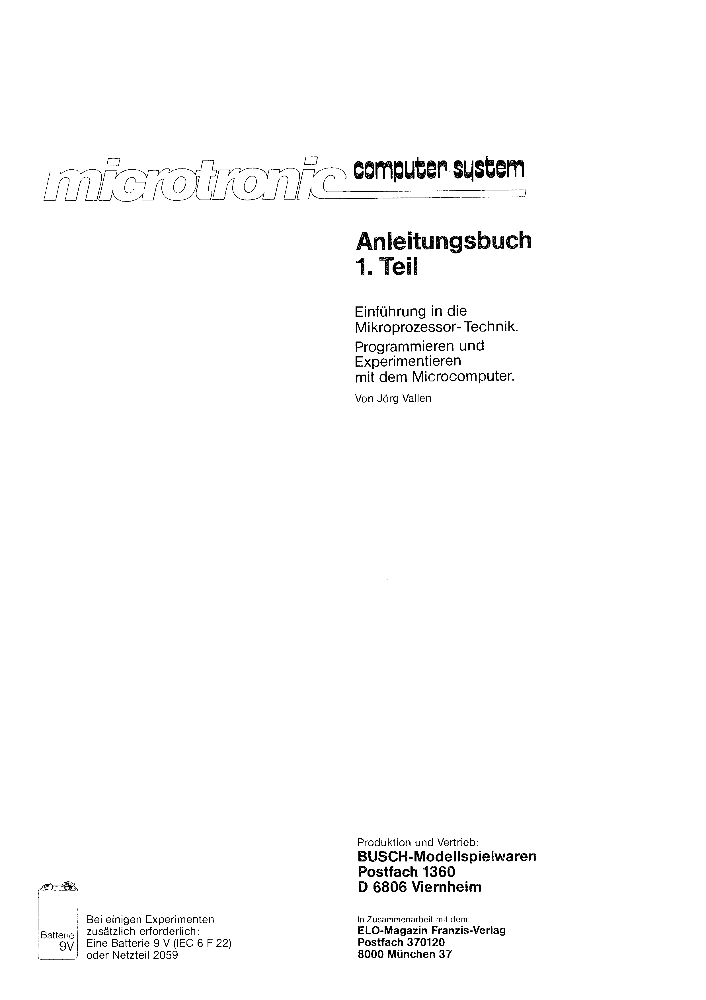
Introduction to microprocessor technology. Programming and experimenting with the microcomputer.
By Jörg Vallen
Production and distribution: BUSCH-Modellspielwaren · Postfach 1360 · D 6806 Viernheim. Some experiments need additional power: a 9 V battery (IEC 6 F 22) or power supply 2059. In collaboration with ELO-Magazine, Franzis-Verlag · Postfach 370120 · 8000 München 37.
Copyright 1981 by BUSCH GmbH. + Co. KG, Viernheim. All rights reserved. Illustrations: Atelier Wuthe, Weinheim. Printed in W.-Germany, 10/81.
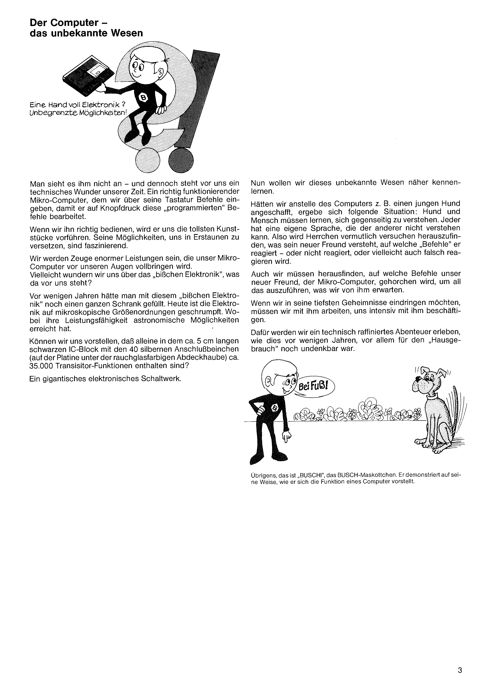
Now we want to get to know this unknown creature more closely.
If we had bought, say, a young dog instead of the computer, the situation would be: dog and human must learn to understand each other. Each has his own language, which the other cannot understand. So the owner will probably try to find out what his new friend understands, which "commands" he reacts to — or doesn't react to, or perhaps reacts to incorrectly.
We too must find out which commands our new friend, the microcomputer, will obey, so that he carries out everything we expect of him.
If we want to penetrate his deepest secrets, we must work with him, occupy ourselves intensively with him.
In return we will experience a technically sophisticated adventure of a kind that would have been unthinkable for "home use" only a few years ago.
You can't tell by looking at it — and yet what stands before us is a technological marvel of our time. A properly functioning microcomputer, into whose keyboard we enter commands so that, at the press of a button, it executes those "programmed" commands.
If we operate it correctly, it will perform the most amazing feats. Its ability to astonish us is fascinating.
We will witness enormous accomplishments that our microcomputer will carry out before our very eyes. Perhaps we are surprised by the "little bit of electronics" sitting in front of us?
A few years ago you would have filled an entire cabinet with this "little bit of electronics". Today, electronics has shrunk to microscopic dimensions, while its performance has reached astronomical possibilities.
Can we imagine that the roughly 5-cm-long black IC chip with 40 silver pins (on the board under the smoke-tinted plastic cover) contains around 35,000 transistor functions?
A gigantic electronic switching system.
By the way, this is "BUSCHI", the BUSCH mascot. He demonstrates in his own way how he imagines the function of a computer.
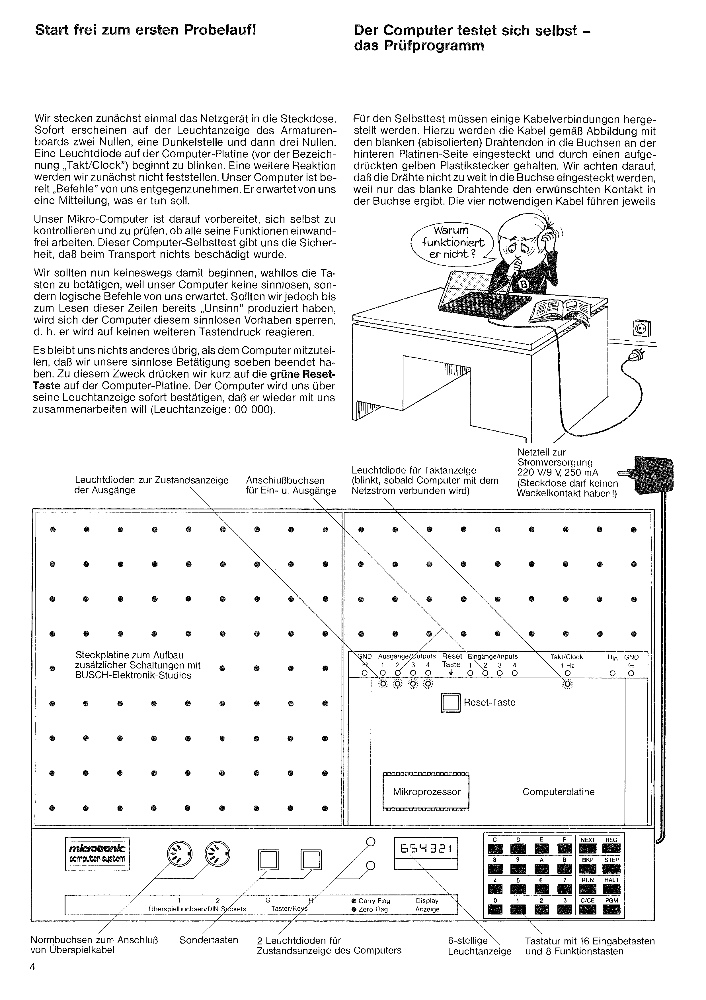
First, we plug the power supply into the wall socket. Immediately, the dashboard display shows two zeros, a dark position, and then three zeros. An LED on the computer board (next to the label "Takt/Clock") starts blinking. We won't notice any further reaction at first. Our computer is ready to accept "commands" from us — it is waiting for us to tell it what to do.
Our microcomputer is prepared to check itself and verify that all its functions work correctly. This self-test gives us the assurance that nothing was damaged in transit.
We should by no means start pressing keys randomly: our computer expects logical commands, not nonsense. Should we have already produced "nonsense" before reading these lines, the computer will lock out the attempt — it will not react to further key presses.
Nothing remains but to inform the computer that we have just stopped our nonsense activity. For this we briefly press the green RESET key on the computer board. The computer will immediately confirm via its display that it wants to work with us again (display: 00 000).
For the self-test, a few cable connections must be made. Following the diagram, the bare (stripped) wire ends are inserted into the sockets on the rear of the board and held by a pressed-on yellow plastic plug. We make sure that the wires are not pushed too far into the socket, because only the bare wire end produces the desired contact in the socket. The four required cables each run
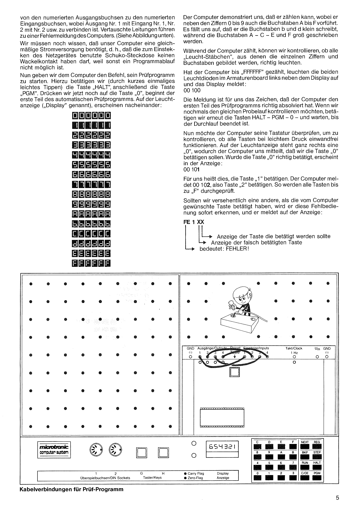
The computer demonstrates that it can count: alongside the digits 0 through 9 it also shows the letters A through F. We notice that it writes the letters b and d in lowercase, while A, C, E and F are written in uppercase.
While the computer counts, we can check that all the "light-segments" forming the individual digits and letters are lit correctly.
Once the computer has counted up to "FFFFFF", the two LEDs on the dashboard left of the display light up and the display shows: 00 100.
This message tells us that the computer has correctly completed the first part of the test program. To run the test again, press HALT – PGM – 0 once more and wait until the run is finished.
Now the computer wants to test its keyboard, to check that all keys function properly when lightly pressed. The display shows a "0" at the far right, indicating that we should press the "0" key. If "0" was pressed correctly, the display shows: 00 101.
For us this means: press "1". The computer shows 00 102, so press "2". In this way all keys up to "F" are tested.
If we accidentally press a different key than the one the computer wants, it immediately recognizes the wrong key press and the display shows: FE 1 XX — the rightmost digit is the key that was actually pressed, the next-to-rightmost is the key that should have been pressed. FE means: ERROR!
from the numbered output sockets to the numbered input sockets, with output No. 1 connected to input No. 1, No. 2 to No. 2, and so on. Swapped wires lead to an error message from the computer. (See illustration below.)
We must also know that our computer requires a steady power supply — the grounded wall socket used to plug in the power supply must not have a wobbly contact, otherwise no program execution is possible.
Now we give the computer the command to start its test program. To do this we press (with a short, light tap) the HALT key, then the PGM key. If we now press the 0 key, the first part of the automatic test program begins. On the display, in succession:
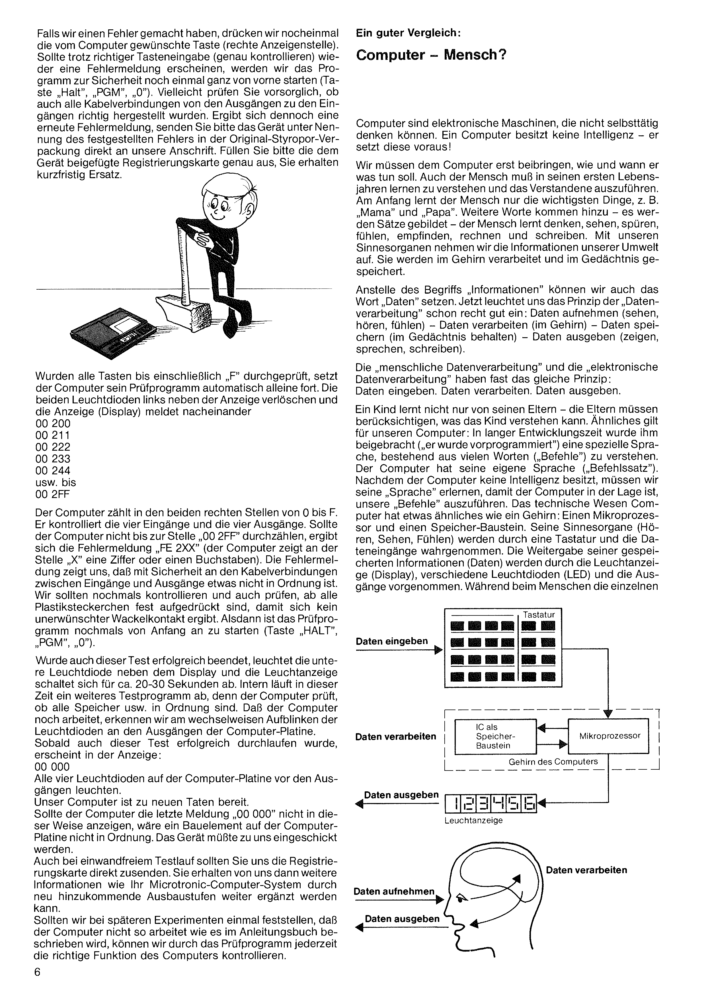
If we made a mistake, we press the key the computer requested once more (rightmost display digit). If another error appears despite correct entry (check carefully), restart the program from the beginning (HALT, PGM, 0). Also check that all cable connections from outputs to inputs are correctly made. If a further error appears, please send the device — stating the fault — in its original Styrofoam packaging to our address. Fill out the registration card completely; you will receive a replacement shortly.
Computers are electronic machines that cannot think independently. A computer has no intelligence — it presupposes it!
We must first teach the computer how and when to do what. Humans too must learn, in their first years of life, to understand and to act on what they have understood. At first a child learns only the most important things, e.g. "Mama" and "Papa". More words are added — sentences are formed — the person learns to think, see, sense, feel, perceive, calculate and write. With our sense organs we take in the information of our environment; it is processed in the brain and stored in memory.
Instead of "information" we can say "data". The principle of "data processing" then becomes clear: take in data (see, hear, feel) — process data (in the brain) — store data (keep in memory) — output data (show, speak, write).
"Human data processing" and "electronic data processing" follow almost the same principle: Input data. Process data. Output data.
A child learns not only from his parents — the parents must take into account what the child can understand. Similarly for our computer: through a long development process it has been taught ("pre-programmed") to understand a special language consisting of many words ("commands"). The computer has its own language ("instruction set"). Since it has no intelligence, we must learn its language so it can carry out our commands. The technical entity "computer" has something resembling a brain: a microprocessor and a memory chip. Its sense organs (hearing, seeing, feeling) are received via a keyboard and the data inputs. The output of its stored information (data) happens via the display, various LEDs, and the outputs. Whereas in humans the individual
Once all keys through "F" have been tested, the computer continues its test program automatically. The two LEDs left of the display go out and the display shows: 00 200, 00 211, 00 222, 00 233, 00 244, … up to 00 2FF.
The computer counts the two rightmost positions from 0 to F, checking the four inputs and four outputs. If it doesn't count up to "00 2FF", the error message "FE 2XX" appears (where X is a digit or letter). This indicates a cable-connection problem between inputs and outputs. Check that all small plastic plugs are pushed home so no wobbly contact arises. Then restart the test program (HALT, PGM, 0).
If this test also completes successfully, the lower LED beside the display lights up and the display turns off for about 20–30 seconds. During this time another internal test runs while the computer checks that all memory etc. is in order. The alternating blinking of the LEDs at the outputs tells us it's still working. As soon as this test completes, the display shows: 00 000. All four output LEDs on the computer board light up.
Our computer is ready for new feats.
Should the computer fail to display this final "00 000" message, a component on the board is faulty and the device must be sent in to us.
Even after a successful test run, please send us the registration card. You will then receive further information on how your Microtronic computer system can be expanded with new add-on stages.
If during later experiments the computer doesn't work as described in the book, the test program can verify correct operation at any time.
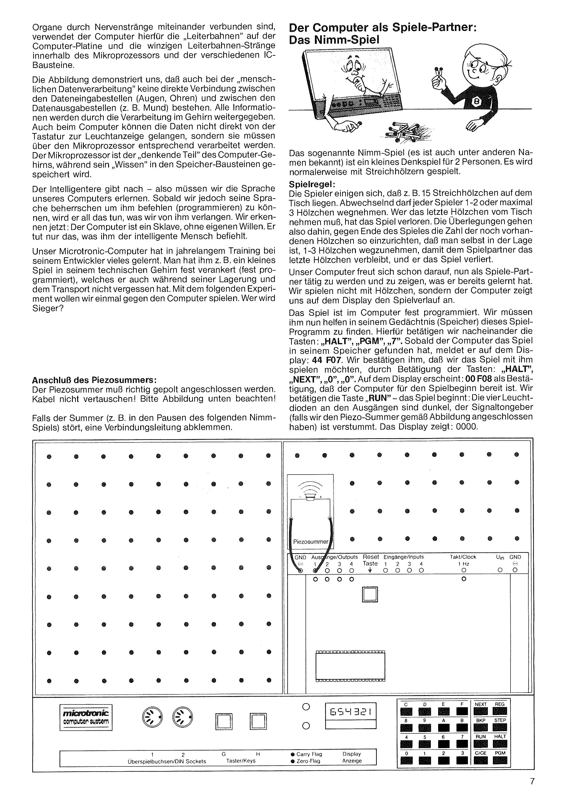
organs are connected by nerve strands, the computer uses the "conductor traces" on the computer board and the microscopic conductor strands inside the microprocessor and the various IC chips for this purpose.
The illustration shows us that even in "human data processing" there is no direct connection between the data-input points (eyes, ears) and the data-output points (e.g. mouth). All information is forwarded through processing in the brain. In the computer, too, data cannot travel directly from the keyboard to the display; rather, it must be appropriately processed by the microprocessor. The microprocessor is the "thinking part" of the computer's brain, while its "knowledge" is stored in the memory chips.
The more intelligent one gives way — so we must learn the language of our computer. As soon as we master its language enough to command (program) it, however, it will do everything we ask of it. We now realize: the computer is a slave, with no will of its own. It only does what the intelligent human tells it to do.
Our Microtronic computer has learned a lot in years of training at its developer. For example, a small game has been firmly anchored in its technical brain (firmly programmed), which it has not forgotten even during storage and transport. In the following experiment we want to play against the computer. Who will win?
The so-called Nim game (also known under other names) is a small thinking game for 2 people. Normally played with matches.
Rules: The players agree that, e.g., 15 matches lie on the table. Each player in turn may take 1, 2, or at most 3 matches. Whoever has to take the last match has lost. The strategy: toward the end of the game, arrange the number of remaining matches so that you yourself are able to take 1–3, so the last match remains for your opponent.
Our computer is now ready to act as our play-partner. We don't play with matches; rather, the computer shows the progress of the game on the display.
The game is firmly programmed into the computer. We help it find this game in memory by pressing, in turn: HALT, PGM, 7. As soon as the computer has found the game, it shows: 44 F07. We confirm we want to play by pressing: HALT, NEXT, 0, 0. The display shows 00 F08 as confirmation. We press RUN — the game begins: the four LEDs at the outputs are dark, the buzzer (if connected per the illustration) is silent. The display shows: 0000.
Connecting the piezo buzzer: The piezo buzzer must be connected with the correct polarity. Do not swap the cables! Please follow the illustration below.
If the buzzer disturbs you (e.g. during pauses in the Nim game), disconnect one of the wires.
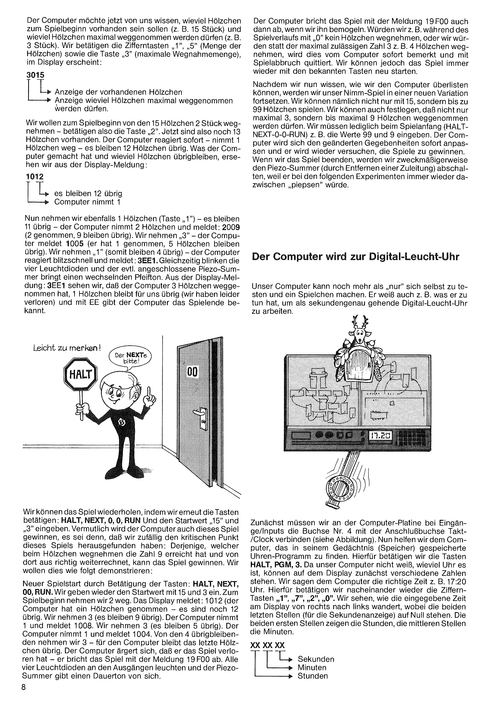
The computer now wants to know how many matches should be on the table at the start of the game (e.g. 15) and how many matches may be taken at most (e.g. 3). We press the digit keys 1, 5 (count of matches) and then 3 (maximum take), and the display shows:
The computer also aborts the game with the message 19F00 if we try to cheat. If we take 0 matches, or take more than the allowed maximum (e.g. 4 when the max is 3), the computer notices instantly and ends the game. We can always restart with the usual keys.
Now that we know how to outwit the computer, we'll play a new variant. We can play not just with 15 matches but with up to 99. We can also set the maximum take to up to 9 matches instead of 3. We just enter different values at game-start (HALT-NEXT-0-0-RUN), e.g. 99 and 9. The computer adjusts immediately and will again try to win. When we're done, it's a good idea to disconnect the piezo buzzer (by removing one wire) so it doesn't beep during the next experiments.
For our first move, we take 2 of the 15 matches — so we press 2. That leaves 13. The computer immediately responds, takes 1, and 12 remain. The display tells us what the computer did and how many matches are left.
Now we also take 1 match (key 1) — 11 remain — the computer takes 2 and reports: 2009 (2 taken, 9 left). We take 3 — the computer reports 1005 (it took 1, 5 left). We take 1 (so 4 remain) — the computer reacts instantly and reports: 3EE1. The four LEDs blink and the piezo buzzer (if connected) emits an alternating tone. From the display 3EE1 we see that the computer took 3 matches, 1 is left for us (we lost!), and the EE signals end-of-game.
Our computer can do more than just test itself and play a small game. It also knows, for example, how to act as an accurate digital LED clock that runs to the second.
We can repeat the game by pressing again: HALT, NEXT, 0, 0, RUN, and entering the starting values 15 and 3. The computer will probably win this one too — unless we happen to find the critical point: whoever lands on 9 matches after their take, and counts correctly from there, can win the game.
Let's demonstrate: restart (HALT, NEXT, 00, RUN), enter 15 and 3 again. We open by taking 2. Display: 1012 (computer took 1, 12 left). We take 3 (9 left). Computer takes 1, reports 1008. We take 3 (5 left). Computer takes 1, reports 1004. We take 3 of the 4 remaining — the last match is left for the computer. The computer is annoyed it has lost — it aborts with 19F00. All four output LEDs light up and the piezo buzzer emits a steady tone.
First, on the computer board, we connect Input socket 4 to the Takt/Clock socket (see illustration). Then we help the computer find its clock program in memory by pressing HALT, PGM, 3. Because the computer doesn't know what time it is, the display may show arbitrary digits at first. We tell the computer the correct time, e.g. 17:20, by pressing in turn the digit keys 1, 7, 2, 0. As we enter them, the digits scroll from right to left in the display; the two rightmost positions (seconds) stay at zero. The two leftmost show hours and the middle two show minutes.
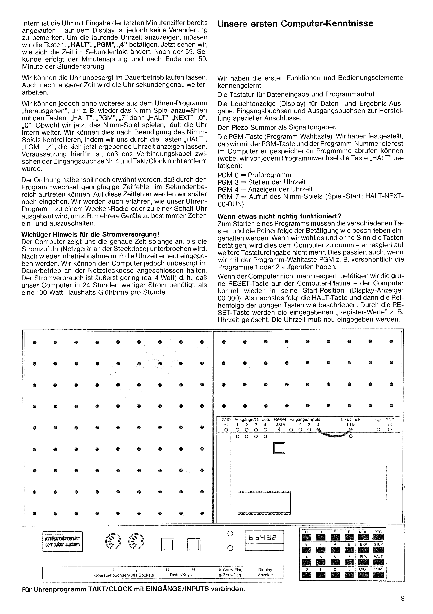
Internally, the clock has already started running when we enter the last minute digit — but the display shows no change yet. To show the running time, we press: HALT, PGM, 4. Now we see the time tick over second by second. After the 59th second the minute advances, and after the 59th minute the hour advances.
We can leave the clock running indefinitely; even after a long time it will still be accurate to the second.
We can also leave the clock program at any time, e.g. to start the Nim game again with: HALT, PGM, 7 then HALT, NEXT, 0, 0. Even while we play Nim, the clock keeps running internally. After the Nim game ends, we can check by pressing HALT, PGM, 4 to display the current time. The prerequisite is that the cable between input socket 4 and Takt/Clock has not been removed.
For completeness: small timing errors in the seconds range may occur when switching programs. We'll come back to these errors later. We'll also learn how to extend our clock program into an alarm-radio or a switching clock that turns devices on/off at specific times.
Important note on power supply! The computer shows the accurate time only as long as power is supplied (power adapter plugged in). After restart, the time must be entered again. We can safely leave the computer plugged in continuously. Power consumption is very small (~4 W) — in 24 hours our computer uses less power than a 100 W household bulb does in one hour.
We've gotten to know the first functions and controls:
The PGM key (program-select key): with the PGM key and a program number we can call up the programs permanently stored in the computer (always press HALT before each program change):
| PGM 0 | = | test program |
| PGM 3 | = | set time of day |
| PGM 4 | = | show time of day |
| PGM 7 | = | Nim game (start: HALT-NEXT-00-RUN) |
What if something doesn't work? To start a program, the keys and their sequence must be followed exactly as described. If we press keys randomly, the computer will get fed up and stop reacting. The same happens if we accidentally call up programs 1 or 2 with the PGM key.
If the computer no longer reacts, press the green RESET key on the computer board — it returns to its start position (display: 00 000). Next press HALT, then continue with the rest of the sequence as described. RESET clears the entered register values, e.g. the current time. The time must then be re-entered.
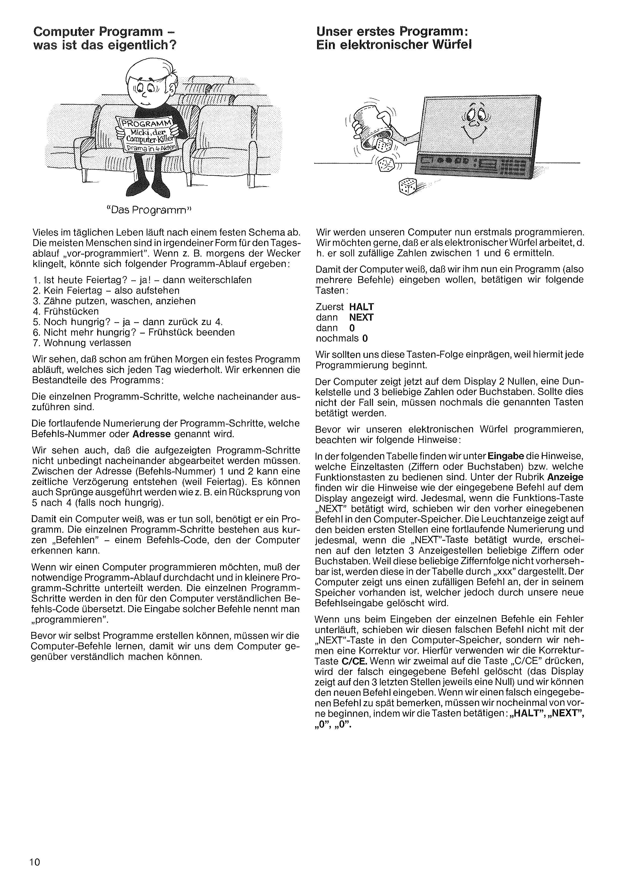
We are now going to program our computer for the first time. We want it to work as an electronic die — i.e. it should generate random numbers between 1 and 6.
To tell the computer that we want to enter a program (a sequence of commands), we press the following keys:
| First | HALT |
| then | NEXT |
| then | 0 |
| again | 0 |
Much of daily life runs according to a fixed pattern. Most people are in some sense "pre-programmed" for their daily routine. When the alarm clock rings in the morning, the following program flow might result:
We see that already in the early morning a fixed program runs that repeats every day. We can identify the components of the program:
We also see that the steps don't have to run strictly one after another. Between addresses (command numbers) 1 and 2 there may be a delay (it's a holiday). Jumps can also occur — e.g. a jump back from 5 to 4 (still hungry).
So that a computer knows what to do, it needs a program. The individual program steps consist of short "commands" — a command code the computer can understand.
When we want to program a computer, the required program flow must be thought through and broken into small program steps. The steps are translated into command codes the computer understands. Entering such commands is called programming.
Before we can create our own programs, we must learn the computer's commands so we can make ourselves understood.
We should memorize this key sequence — every programming session begins with it.
The computer now shows on the display 2 zeros, a dark position, and 3 arbitrary digits or letters. If not, press the keys again.
Before we program our electronic die, note the following:
In the following table the Input column shows which single keys (digits or letters) or function keys to press. The Display column shows how the entered command appears on the display. Every time the NEXT function key is pressed, we push the previously entered command into the computer's memory. The first two display positions show a running number, and after each NEXT key press the last 3 positions show arbitrary digits or letters. Because this random sequence isn't predictable, the table represents it as xxx. The computer is showing a random command from its memory which will be overwritten by our new command entry.
If we make a typo while entering commands, do not push that wrong command into memory with NEXT — correct it instead. Press the correction key C/CE twice and the wrongly-entered command is cleared (display shows zeros in the last 3 positions), then enter the new command. If we notice a mistake too late, start over from the beginning by pressing: HALT, NEXT, 0, 0.
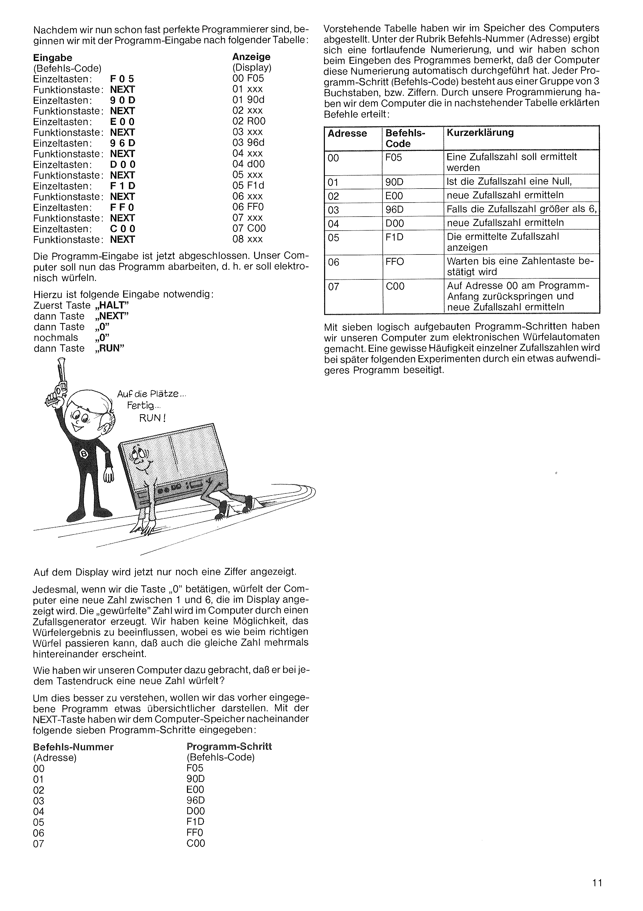
We've now stored the above table in the computer's memory. In the command number (address) column the numbering runs consecutively, and while entering the program we noticed that the computer assigned these numbers automatically. Each program step (command code) consists of a group of 3 letters or digits. With our programming we've given the computer the commands explained in the table below:
| Address | Command code | Short description |
|---|---|---|
| 00 | F05 | generate a random number |
| 01 | 90D | if the random number is 0, |
| 02 | E00 | generate a new one |
| 03 | 96D | if greater than 6, |
| 04 | D00 | generate a new one |
| 05 | F1D | display the resulting number |
| 06 | FF0 | wait until a digit key is pressed |
| 07 | C00 | jump back to address 00 and generate a new number |
With seven logical program steps we've turned our computer into an electronic dice machine. A slight bias in the distribution of individual numbers will be addressed in later experiments by a slightly more elaborate program.
Now that we are nearly perfect programmers, we begin entering the program according to the following table:
| Input | Code | Display |
|---|---|---|
| Digits | F05 | 00 F05 |
| Key | NEXT | 01 xxx |
| Digits | 90D | 01 90d |
| Key | NEXT | 02 xxx |
| Digits | E00 | 02 E00 |
| Key | NEXT | 03 xxx |
| Digits | 96D | 03 96d |
| Key | NEXT | 04 xxx |
| Digits | D00 | 04 d00 |
| Key | NEXT | 05 xxx |
| Digits | F1D | 05 F1d |
| Key | NEXT | 06 xxx |
| Digits | FF0 | 06 FF0 |
| Key | NEXT | 07 xxx |
| Digits | C00 | 07 C00 |
| Key | NEXT | 08 xxx |
Program entry is now complete. Our computer should run the program — i.e. roll dice electronically.
To do this, press: HALT, then NEXT, then 0, then 0 again, then RUN.
Now only one digit is shown on the display.
Each time we press the 0 key, the computer rolls a new number between 1 and 6 and shows it. The rolled number is generated inside the computer by a random-number generator. We can't influence the result, and — as with a real die — the same number may appear several times in a row.
How did we get our computer to roll a new number on every key press?
To understand this better, let's lay out the program we just entered more clearly. With the NEXT key we entered the following seven program steps into the computer's memory, one after another:
| Command No. (address) | Program step (command code) |
|---|---|
| 00 | F05 |
| 01 | 90D |
| 02 | E00 |
| 03 | 96D |
| 04 | D00 |
| 05 | F1D |
| 06 | FF0 |
| 07 | C00 |
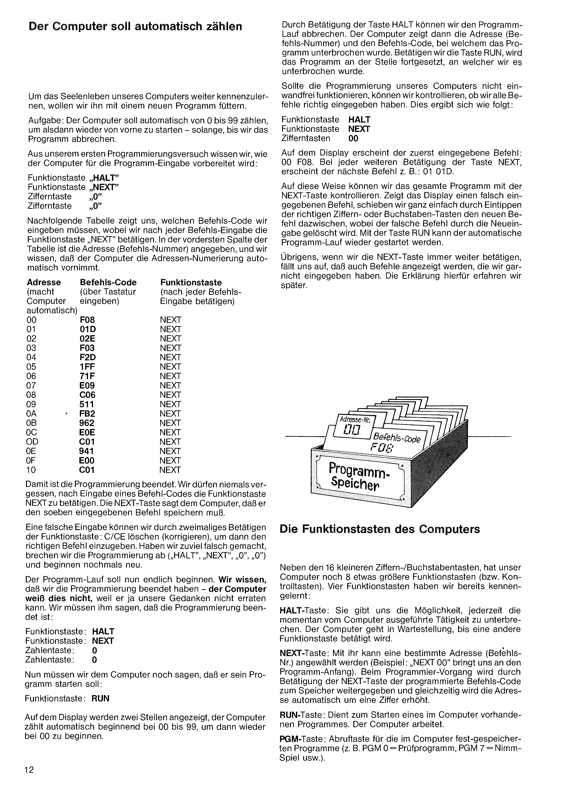
By pressing HALT we can abort program execution. The computer then shows the address (command number) and the command code at which the program was interrupted. If we press RUN, the program continues from where it was interrupted.
If our program doesn't work correctly, we can check that we entered all the commands properly:
The display shows the first entered command: 00 F08. Each further press of NEXT shows the next command, e.g. 01 01D.
This way we can step through the whole program with the NEXT key. If the display shows a wrong command, we simply type the correct digit/letter keys and the corrected command replaces it. Press RUN to resume automatic execution.
By the way, if we keep pressing NEXT, we'll notice commands shown that we never entered. We'll explain that later.
To explore our computer's inner life further, we'll feed it a new program.
Task: the computer should count automatically from 0 to 99, then start over — until we abort the program.
From our first programming attempt we know how to prepare the computer for program entry: HALT, NEXT, 0, 0.
The table below shows which command codes to enter; press NEXT after each one. The leftmost column shows the address (command number) — the computer numbers them automatically.
| Addr | Code | Press |
|---|---|---|
| 00 | F08 | NEXT |
| 01 | 01D | NEXT |
| 02 | 02E | NEXT |
| 03 | F03 | NEXT |
| 04 | F2D | NEXT |
| 05 | 1FF | NEXT |
| 06 | 71F | NEXT |
| 07 | E09 | NEXT |
| 08 | C06 | NEXT |
| 09 | 511 | NEXT |
| 0A | FB2 | NEXT |
| 0B | 962 | NEXT |
| 0C | E0E | NEXT |
| 0D | C01 | NEXT |
| 0E | 941 | NEXT |
| 0F | E00 | NEXT |
| 10 | C01 | NEXT |
Programming is now finished. Never forget to press NEXT after each command code — NEXT tells the computer to store the command just entered.
A wrong entry can be corrected by pressing C/CE twice, then entering the correct command. If too much went wrong, abort programming (HALT, NEXT, 0, 0) and start over.
Program execution should now begin at last. We know we're done programming — the computer doesn't. Tell it: HALT, NEXT, 0, 0. Then start: RUN.
The display shows two positions; the computer counts from 00 to 99, then starts again at 00.
In addition to the 16 smaller digit/letter keys, our computer has 8 larger function (or control) keys. We've already met four:
HALT key: lets us interrupt whatever the computer is doing at any time. It enters a waiting state until another function key is pressed.
NEXT key: selects a specific address (command number) — e.g. "NEXT 00" jumps to the start of the program. During programming, pressing NEXT pushes the entered command code into memory and at the same time advances the address by one.
RUN key: starts a program already loaded into the computer. The computer goes to work.
PGM key: calls up the programs permanently stored in the computer (e.g. PGM 0 = test program, PGM 7 = Nim game, etc.).
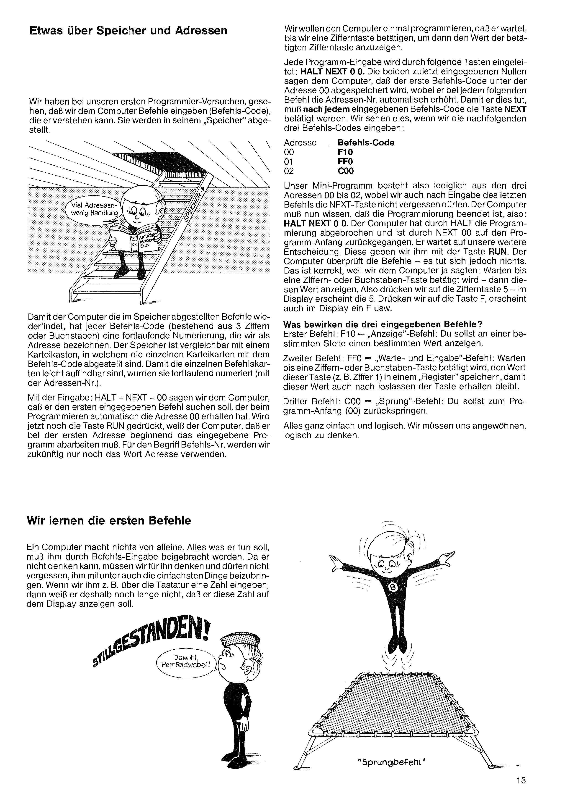
Let's program the computer to wait until we press a digit key, then display the value of that key.
Every program entry begins with: HALT NEXT 0 0. The two trailing zeros tell the computer that the first command code is stored at address 00, and that the address number should auto-increment for each subsequent command. For this to happen, NEXT must be pressed after each command code. We can see this when we enter the following three command codes:
| Addr | Code |
|---|---|
| 00 | F10 |
| 01 | FF0 |
| 02 | C00 |
Our mini-program is just these three addresses 00–02. Don't forget the NEXT key after the last command either. The computer now needs to know that programming is finished, so: HALT NEXT 0 0. HALT terminated programming, and NEXT 00 jumped back to the program start. It's now waiting for our next decision: we give it RUN. The computer checks the commands — but nothing happens. Correct: we told it to wait for a digit/letter key, then display that value. So press 5 — display shows 5. Press F — display shows F. And so on.
What do the three commands do?
First command F10 — Display command: "Show a particular value at a particular position."
Second command FF0 — Wait-and-Input command: "Wait until a digit/letter key is pressed; store the value of that key (e.g. digit 1) in a register so it's retained after the key is released."
Third command C00 — Jump command: "Jump back to the start of the program (address 00)."
All quite simple and logical. We must get into the habit of thinking logically.
In our first programming attempts we saw that we give the computer commands (command codes) it can understand. They are stored in its "memory".
So that the computer can find the commands stored in memory again, each command code (3 digits or letters) has a consecutive numbering called an address. Memory is comparable to a card-index box, in which the individual cards (with the command codes) are filed. To make the cards easy to find, they are numbered consecutively (with the address number).
With HALT – NEXT – 00, we tell the computer to look up the first entered command, which received address 00 automatically during programming. If we then press RUN, the computer knows it must execute the program starting from the first address. From now on we'll use the word address instead of command number.
A computer does nothing on its own. Everything it does must be taught to it by entering commands. Since it cannot think, we must think for it — and we must remember to teach it even the simplest things. If we type a number on the keyboard, it doesn't yet know that it should display that number.
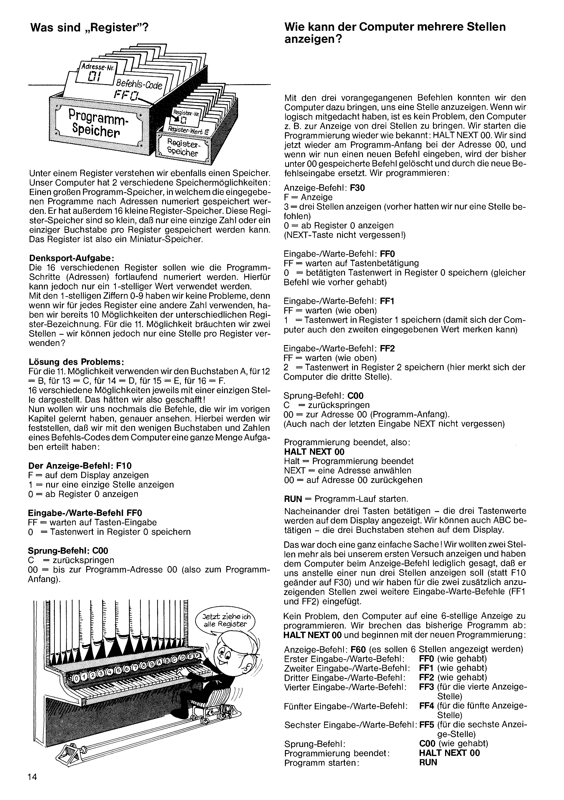
With the three previous commands we got the computer to show one digit. If we've followed along logically, it's no problem to make it show e.g. three digits. We restart programming as usual: HALT NEXT 00. We're back at the program start (address 00); a new command entered there overwrites whatever was previously stored.
Program:
Display command: F30
| F | = | display |
| 3 | = | three digits (previously only one) |
| 0 | = | start at register 0 |
(Don't forget NEXT!)
Input/Wait command: FF0
| FF | = | wait for key |
| 0 | = | store key value in register 0 (same as before) |
Input/Wait command: FF1
| FF | = | wait |
| 1 | = | store key value in register 1 (second value) |
Input/Wait command: FF2
| FF | = | wait |
| 2 | = | store in register 2 (third value) |
Jump command: C00
| C | = | jump back |
| 00 | = | to address 00 (program start) |
(Don't forget NEXT.) Programming finished: HALT NEXT 00. RUN.
Press three keys in sequence — the three key values appear on the display. We can also press A, B, C — the three letters appear.
That was simple! We wanted to show two more digits than in our first attempt, so we only told the display command to show 3 instead of 1 (F30 instead of F10) and added two more Input/Wait commands (FF1 and FF2) for the extra digits.
No problem to extend the computer to a 6-digit display. Abort the current program: HALT NEXT 00, then start fresh:
A register is also a memory location. Our computer has 2 kinds of storage: a large program memory, where entered programs are stored by address number, and 16 small register memories. Each register is so small that only a single digit or letter can be stored in it. The register is a miniature memory.
Brain-teaser: the 16 registers should, like the program steps (addresses), be numbered consecutively — but we only have a 1-digit value for that. With digits 0–9 we have 10 different register IDs, no problem. For the 11th we'd need two positions — but we can only use one per register?
Solution: for the 11th we use the letter A, for 12 = B, for 13 = C, for 14 = D, for 15 = E, for 16 = F. 16 different IDs each shown with a single position. Done!
Now let's look more carefully at the commands we learned in the previous chapter. We'll notice that with the few letters and digits of a command code we gave the computer quite a lot of work:
The Display command: F10
| F | = | display on screen |
| 1 | = | show only one digit |
| 0 | = | starting at register 0 |
Input/Wait command: FF0
| FF | = | wait for key input |
| 0 | = | store key value in register 0 |
Jump command: C00
| C | = | jump back |
| 00 | = | to program address 00 (program start). |
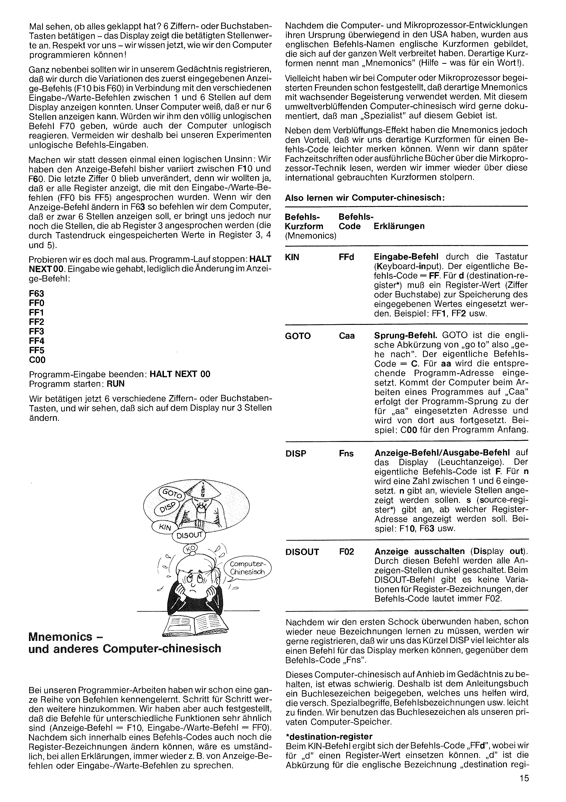
Since computer and microprocessor development largely originated in the USA, short forms of the English command names — known worldwide — were created. Such short forms are called "mnemonics" (yikes — what a word).
Among computer-/microprocessor-enthusiast friends you may have noticed mnemonics being used with increasing enthusiasm. This eye-popping "computer Chinese" gladly documents that one is a "specialist".
Besides the dazzling effect, mnemonics also have a practical benefit: such short forms are easier to remember than the raw command code. When we later read specialist magazines or in-depth books about microprocessor technology, we will run into these internationally used short forms again and again.
So let's learn computer-Chinese:
Let's see if it all worked: press 6 digit or letter keys — the display shows the entered values. Hats off to us — we now know how to program the computer!
In passing, let's note that by varying the initial display command (F10 to F60) and combining it with the various Input/Wait commands, we could show 1 to 6 digits on the display. Our computer knows it can show only 6 digits. If we gave it the nonsensical command F70, it would react nonsensically. So in our experiments we avoid illogical command entries.
Let's do something logically mischievous instead. So far we varied the display command between F10 and F60. The last digit 0 stayed unchanged: we wanted it to show all registers addressed by the Input/Wait commands (FF0 to FF5). If we change the display command to F63, we tell the computer to show 6 digits but starting from register 3 — i.e. it shows the values entered into registers 3, 4 and 5 (only those).
Let's try. Stop program execution: HALT NEXT 00. Same entry as before, just change the display command:
| Mnemonic (short form) | Command code | Explanation |
|---|---|---|
| KIN | FFd | Input command from the keyboard (key-input). Actual command code = FF. For d (destination register*) substitute a register identifier (digit or letter) for the value to be stored. Example: FF1, FF2. |
| GOTO | Caa | Jump command. "GOTO" is short for "go to". Actual code = C. For aa substitute the target program address. When the computer hits Caa during execution, it jumps to address aa and continues from there. Example: C00 = jump to program start. |
| DISP | Fns | Display / output command to the LED display. Actual code = F. For n substitute a number 1–6 = how many positions to display. s (source register*) = starting register address. Example: F10, F63. |
| DISOUT | F02 | Display Out. Turns all display positions off. No register variation; the code is always F02. |
After the initial shock of having to learn yet more abbreviations, we'll happily note that we can remember the short form DISP for a display command much more easily than the raw code "Fns".
Keeping all this computer-Chinese in our heads at once is hard. That's why the instruction book ships with a bookmark which helps us locate the special terms, command names etc. We use the bookmark as our private computer memory.
*destination register. For the KIN command the code is "FFd", where "d" stands for a register value — short for "destination register".
Finish program entry: HALT NEXT 00. Start the program: RUN.
Now press 6 different digit or letter keys, and we see that only 3 positions on the display change.
In our programming work we've learned a fair number of commands by now. Step by step more will come. We've also noticed that commands for very different functions look similar (display command = F10, Input/Wait command = FF0). Since the register identifiers within a command code can also vary, it would be cumbersome to keep referring to e.g. "display commands" or "Input/Wait commands" by their full description every time.
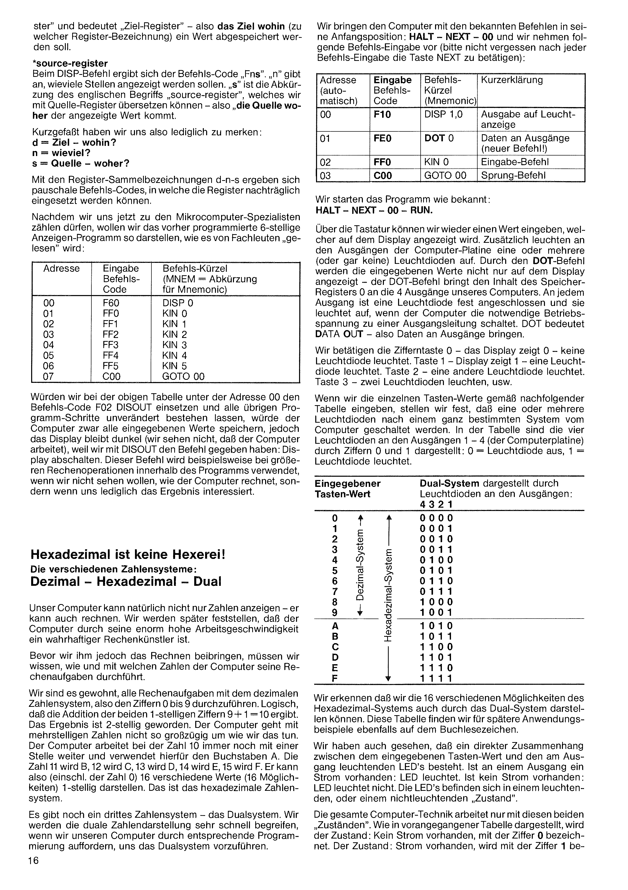
ster" and means "destination register" — the destination (which register identifier) where a value should be stored.
*source register. For the DISP command the code is "Fns". "n" tells how many positions to display. "s" is the abbreviation for the English term "source register" — the source from which the displayed value comes.
In short, all we need to remember:
| d | = | destination — where to? |
| n | = | how many? |
| s | = | source — where from? |
With the placeholder labels d-n-s we get generic command codes into which the registers can be substituted later.
Now that we can count ourselves among microcomputer specialists, let's display our previously programmed 6-digit display program the way experts "read" it:
| Address | Command code | Mnemonic (MNEM) |
|---|---|---|
| 00 | F60 | DISP 0 |
| 01 | FF0 | KIN 0 |
| 02 | FF1 | KIN 1 |
| 03 | FF2 | KIN 2 |
| 04 | FF3 | KIN 3 |
| 05 | FF4 | KIN 4 |
| 06 | FF5 | KIN 5 |
| 07 | C00 | GOTO 00 |
If in the table above we replaced address 00 with the command code F02 (DISOUT) and left all other steps unchanged, the computer would still store all entered values — but the display would stay dark (we wouldn't see the computer working) because DISOUT means "display off". This command is used for example during longer calculations inside a program when we don't want to watch the computer's intermediate work and only care about the result.
Hexadecimal is no witchcraft!
The different number systems: Decimal — Hexadecimal — Binary
Our computer can not only display numbers — it can also calculate. We'll discover later that, thanks to its enormous speed, the computer is a true calculation artist.
Before we teach it arithmetic, we must know how and with which numbers the computer carries out its calculations.
We're used to doing all arithmetic in the decimal number system, i.e. with digits 0 to 9. Naturally 9 + 1 = 10. The result has become 2-digit. The computer is not as flexible with multi-digit numbers as we are. At the number 10 the computer still works with a single position, using the letter A. 11 becomes B, 12 = C, 13 = D, 14 = E, 15 = F. So it can represent (including 0) 16 different values in a single position. That is the hexadecimal number system.
There is a third number system — the binary system. We'll grasp binary very quickly if we ask our computer, through suitable programming, to demonstrate it to us.
We put the computer into its initial position with the familiar commands: HALT – NEXT – 00, then enter the following commands (don't forget to press NEXT after each):
| Addr | Code | Mnem. | Description |
|---|---|---|---|
| 00 | F10 | DISP 1,0 | output to display |
| 01 | FE0 | DOT 0 | data to outputs (new command!) |
| 02 | FF0 | KIN 0 | input command |
| 03 | C00 | GOTO 00 | jump command |
We start the program as usual: HALT – NEXT – 00 – RUN.
Via the keyboard we can again enter a value, which appears on the display. In addition, one or more (or no) LEDs at the outputs of the computer board light up. The DOT command not only shows the entered values on the display — it also routes the contents of memory register 0 to the four outputs of our computer. An LED is permanently wired to each output, and it lights up when the computer switches operating voltage to that output. DOT stands for DATA OUT — "send data to the outputs".
We press digit key 0 — display shows 0 — no LED lights. Key 1 — one LED lights. Key 2 — a different LED lights. Key 3 — two LEDs light. And so on.
If we enter the individual key values from the following table, we see that one or more LEDs are switched on by the computer in a specific pattern. In the table, the four LEDs at outputs 1–4 are represented by the digits 0 and 1: 0 = LED off, 1 = LED on.
Binary system represented by LEDs at the outputs: 4 3 2 1
We see that we can also represent the 16 different possibilities of the hexadecimal system using the binary system. This table is also reproduced on the bookmark for later reference.
We also see that there is a direct relationship between the entered key value and the LEDs lit at the outputs. If there is current at an output: the LED lights. If no current: the LED is off. The LEDs are in either a lit or an unlit "state".
All computer technology works with only these two "states". As shown in the table above, the state "no current" is represented by the digit 0, and "current present" by the digit 1.
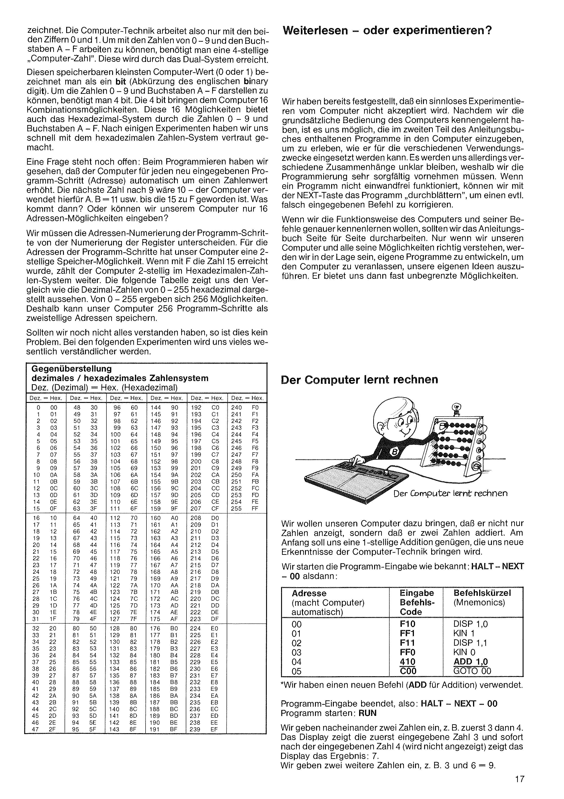
All computer technology therefore works only with the two digits 0 and 1. To handle the numbers 0–9 and the letters A–F, a 4-position "computer number" is needed. This is achieved by the binary system.
This smallest storable computer value (0 or 1) is called a bit (abbreviation of binary digit). To represent the numbers 0–9 and letters A–F, 4 bits are required. The 4 bits give the computer 16 combinations — the same 16 possibilities the hexadecimal system offers via 0–9 and A–F.
One question is still open: the computer automatically increments the address number by one with each new entry. The next number after 9 = A, B = 11, etc. until 15 = F. What comes then? Or can we only enter 16 addresses into our computer?
We must distinguish the address numbering of program steps from the register numbering. For program-step addresses our computer has a 2-position storage. When F = 15 is reached, the computer keeps counting in 2-position hexadecimal. The following table compares how the decimal numbers from 0 to 255 are represented in hexadecimal — 256 possibilities, so our computer can store 256 program steps as 2-position addresses.
Comparison: decimal vs. hexadecimal number system
Dec. = Decimal · Hex. = Hexadecimal
| Dec | Hex | Dec | Hex | Dec | Hex | Dec | Hex |
|---|---|---|---|---|---|---|---|
| 0 | 00 | 64 | 40 | 128 | 80 | 192 | C0 |
| 1 | 01 | 65 | 41 | 129 | 81 | 193 | C1 |
| 2 | 02 | 66 | 42 | 130 | 82 | 194 | C2 |
| 3 | 03 | 67 | 43 | 131 | 83 | 195 | C3 |
| 4 | 04 | 68 | 44 | 132 | 84 | 196 | C4 |
| 5 | 05 | 69 | 45 | 133 | 85 | 197 | C5 |
| 6 | 06 | 70 | 46 | 134 | 86 | 198 | C6 |
| 7 | 07 | 71 | 47 | 135 | 87 | 199 | C7 |
| 8 | 08 | 72 | 48 | 136 | 88 | 200 | C8 |
| 9 | 09 | 73 | 49 | 137 | 89 | 201 | C9 |
| 10 | 0A | 74 | 4A | 138 | 8A | 202 | CA |
| 11 | 0B | 75 | 4B | 139 | 8B | 203 | CB |
| 12 | 0C | 76 | 4C | 140 | 8C | 204 | CC |
| 13 | 0D | 77 | 4D | 141 | 8D | 205 | CD |
| 14 | 0E | 78 | 4E | 142 | 8E | 206 | CE |
| 15 | 0F | 79 | 4F | 143 | 8F | 207 | CF |
| 16 | 10 | 80 | 50 | 144 | 90 | 208 | D0 |
| 17 | 11 | 81 | 51 | 145 | 91 | 209 | D1 |
| 18 | 12 | 82 | 52 | 146 | 92 | 210 | D2 |
| 19 | 13 | 83 | 53 | 147 | 93 | 211 | D3 |
| 20 | 14 | 84 | 54 | 148 | 94 | 212 | D4 |
| 21 | 15 | 85 | 55 | 149 | 95 | 213 | D5 |
| 22 | 16 | 86 | 56 | 150 | 96 | 214 | D6 |
| 23 | 17 | 87 | 57 | 151 | 97 | 215 | D7 |
| 24 | 18 | 88 | 58 | 152 | 98 | 216 | D8 |
| 25 | 19 | 89 | 59 | 153 | 99 | 217 | D9 |
| 26 | 1A | 90 | 5A | 154 | 9A | 218 | DA |
| 27 | 1B | 91 | 5B | 155 | 9B | 219 | DB |
| 28 | 1C | 92 | 5C | 156 | 9C | 220 | DC |
| 29 | 1D | 93 | 5D | 157 | 9D | 221 | DD |
| 30 | 1E | 94 | 5E | 158 | 9E | 222 | DE |
| 31 | 1F | 95 | 5F | 159 | 9F | 223 | DF |
| 32 | 20 | 96 | 60 | 160 | A0 | 224 | E0 |
| 33 | 21 | 97 | 61 | 161 | A1 | 225 | E1 |
| 34 | 22 | 98 | 62 | 162 | A2 | 226 | E2 |
| 35 | 23 | 99 | 63 | 163 | A3 | 227 | E3 |
| 36 | 24 | 100 | 64 | 164 | A4 | 228 | E4 |
| 37 | 25 | 101 | 65 | 165 | A5 | 229 | E5 |
| 38 | 26 | 102 | 66 | 166 | A6 | 230 | E6 |
| 39 | 27 | 103 | 67 | 167 | A7 | 231 | E7 |
| 40 | 28 | 104 | 68 | 168 | A8 | 232 | E8 |
| 41 | 29 | 105 | 69 | 169 | A9 | 233 | E9 |
| 42 | 2A | 106 | 6A | 170 | AA | 234 | EA |
| 43 | 2B | 107 | 6B | 171 | AB | 235 | EB |
| 44 | 2C | 108 | 6C | 172 | AC | 236 | EC |
| 45 | 2D | 109 | 6D | 173 | AD | 237 | ED |
| 46 | 2E | 110 | 6E | 174 | AE | 238 | EE |
| 47 | 2F | 111 | 6F | 175 | AF | 239 | EF |
| 48 | 30 | 112 | 70 | 176 | B0 | 240 | F0 |
| 49 | 31 | 113 | 71 | 177 | B1 | 241 | F1 |
| 50 | 32 | 114 | 72 | 178 | B2 | 242 | F2 |
| 51 | 33 | 115 | 73 | 179 | B3 | 243 | F3 |
| 52 | 34 | 116 | 74 | 180 | B4 | 244 | F4 |
| 53 | 35 | 117 | 75 | 181 | B5 | 245 | F5 |
| 54 | 36 | 118 | 76 | 182 | B6 | 246 | F6 |
| 55 | 37 | 119 | 77 | 183 | B7 | 247 | F7 |
| 56 | 38 | 120 | 78 | 184 | B8 | 248 | F8 |
| 57 | 39 | 121 | 79 | 185 | B9 | 249 | F9 |
| 58 | 3A | 122 | 7A | 186 | BA | 250 | FA |
| 59 | 3B | 123 | 7B | 187 | BB | 251 | FB |
| 60 | 3C | 124 | 7C | 188 | BC | 252 | FC |
| 61 | 3D | 125 | 7D | 189 | BD | 253 | FD |
| 62 | 3E | 126 | 7E | 190 | BE | 254 | FE |
| 63 | 3F | 127 | 7F | 191 | BF | 255 | FF |
We've already noticed that nonsensical experimenting isn't accepted by the computer. Now that we've learned the basic operation of the computer, we are able to enter the programs in part 2 of the instruction book and experience the various ways the computer can be used. Various relationships will remain unclear, however, so we must enter programs very carefully. If a program doesn't work correctly, we can step through the program with the NEXT key to correct a wrongly-entered command.
If we want to learn the computer's workings and its commands more thoroughly, we should work through the instruction book page by page. Only by really understanding our computer and all its possibilities can we develop our own programs to make the computer carry out our own ideas. It then offers us almost unlimited possibilities.
Let's get our computer to do more than just display numbers — it should add two numbers. To start, a 1-digit addition is enough; it will give us new insights into computer technology.
We start program entry as usual: HALT – NEXT – 00, then:
| Addr | Code | Mnemonic |
|---|---|---|
| 00 | F10 | DISP 1,0 |
| 01 | FF1 | KIN 1 |
| 02 | F11 | DISP 1,1 |
| 03 | FF0 | KIN 0 |
| 04 | 410 | ADD 1,0* |
| 05 | C00 | GOTO 00 |
*We've used a new command (ADD for addition).
Program entry finished: HALT – NEXT – 00. Start: RUN.
We enter two numbers in sequence, e.g. first 3 then 4. The display shows the first number (3), and immediately after we enter 4 (not shown) the display shows the result: 7. We enter two more numbers, e.g. 3 and 6 = 9.
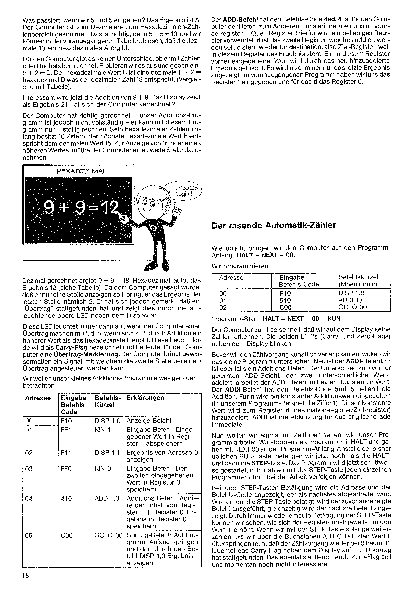
The ADD command has the code 4sd. 4 is the addition opcode. For s recall source register — any register can be used. d is the second register being added; d stands for destination register, because the result is stored there. Any value previously in that register is overwritten by the new result. So the display always shows just the latest result. In the previous program we used register 1 for s and register 0 for d.
What happens when we enter 5 and 5? The result is A. The computer has crossed from the decimal range into the hexadecimal range. That is correct, because 5 + 5 = 10, and from the previous table we read that decimal 10 = hexadecimal A.
For the computer there's no difference between calculating with numbers or letters. Try it: B + 2 = D. Hex B is decimal 11; 11 + 2 = hex D = decimal 13. (Compare with the table.)
Now the addition 9 + 9 gets interesting. The display shows the result 2! Did the computer make a mistake?
The computer calculated correctly — our addition program is just incomplete, it can only do 1-digit arithmetic. Its hexadecimal range has 16 digits, the highest value F equals decimal 15. To display 16 or any larger value, the computer would need to use a second digit.
As usual we put the computer at the program start: HALT – NEXT – 00.
| Addr | Code | Mnemonic |
|---|---|---|
| 00 | F10 | DISP 1,0 |
| 01 | 510 | ADDI 1,0 |
| 02 | C00 | GOTO 00 |
Program start: HALT – NEXT – 00 – RUN.
The computer counts so fast that no numbers can be read on the display. The two LEDs (Carry- and Zero-Flags) next to the display blink.
Before we artificially slow it down, let's examine the small program. New is the ADDI command. It's also an addition command. Unlike the ADD command (which adds two different register values), ADDI adds a constant. The ADDI code is 5nd: 5 = addition opcode. For n enter a constant value to add (in our example: 1). This constant is added to register d (destination register). ADDI is short for the English add immediate.
Now let's see in "slow motion" how our program works. Stop with HALT, jump back with NEXT 00. Instead of RUN, now press HALT again then the STEP key. The program now runs one step at a time — STEP lets us follow each program step as it works.
At every STEP press, the address and command code of the next step are shown. Pressing STEP again executes that command and shows the next one. Repeated STEP presses let us see the register contents increase by 1 each time. If we keep counting with STEP past the letters A-B-C-D-E and skip beyond F (so counting wraps back to 0), the Carry-Flag LED beside the display lights up — a carry has occurred. The simultaneously lit Zero-Flag doesn't concern us yet.
In decimal, 9 + 9 = 18. In hex the result is 12 (see table). Since we told the computer to display only one digit, it shows the last digit, namely 2. But it has remembered that a carry occurred and indicates this by lighting the upper LED next to the display.
This LED lights whenever the computer must produce a carry, e.g. when an addition produces a result larger than hex F. The LED is called the Carry-Flag — it's a carry marker for the computer, a signal that can be used to drive the next (higher) digit on overflow.
Let's look at our small addition program a bit more carefully:
| Addr | Code | Mnem. | Explanation |
|---|---|---|---|
| 00 | F10 | DISP 1,0 | Display command |
| 01 | FF1 | KIN 1 | Input command: store entered value in register 1 |
| 02 | F11 | DISP 1,1 | Display result of address 01 |
| 03 | FF0 | KIN 0 | Input command: store the second entered value in register 0 |
| 04 | 410 | ADD 1,0 | Addition: register 1 + register 0, result in register 0 |
| 05 | C00 | GOTO 00 | Jump back to program start and display result via DISP 1,0 |
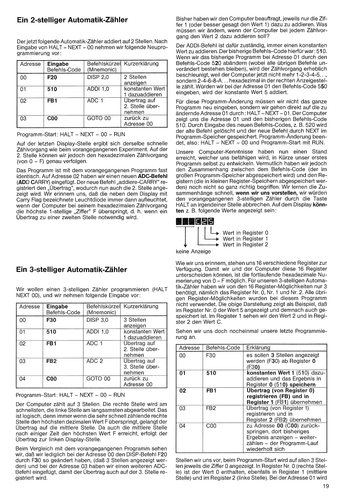
So far we've asked the computer to add the value 1 each time. What do we change if we want it to add 2 each time?
The ADDI command always adds a constant. Our previous code was 510. If we change address 01 to 520 (leaving everything else unchanged), counting speeds up considerably — the computer now counts 2-4-6-8-A… in hex on the rightmost display position. If we entered code 550 at address 01, the constant 5 would be added.
For this program change we don't have to re-enter the whole program — we jump directly to the address we want to change: HALT – NEXT – 01. The computer shows address 01 and the existing code 510. Entering the new code, e.g. 520, overwrites the old command and NEXT stores it. Programming finished: HALT – NEXT – 00. Start: RUN.
Our computer knowledge has now reached a point where, shortly, we'll develop our own first program. But we probably haven't yet fully grasped the relationship between the command code (stored in the large program memory) and the registers (stored in the small register memories). We'll learn the connection quickly if we imagine aborting the previous 3-digit counter with HALT at some arbitrary point. The display might show, for example:
The following automatic counter adds across 2 positions. After HALT – NEXT – 00, we enter the new program:
| Addr | Code | Mnemonic | Description |
|---|---|---|---|
| 00 | F20 | DISP 2,0 | display 2 positions |
| 01 | 510 | ADDI 1,0 | add constant 1 |
| 02 | FB1 | ADC 1 | add carry to 2nd position |
| 03 | C00 | GOTO 00 | back to address 00 |
Start: HALT – NEXT – 00 – RUN.
On the last display position the same fast counting as in the previous experiment happens. On the 2nd position, however, we can clearly follow the hexadecimal count from 0 to F.
The program is almost identical to the previous one. At address 02 we've added the new ADC command (add carry). The new "add-CARRY" command captures the carry, so the 2nd position is now displayed. Recall that the Carry-Flag LED beside the display lights whenever the computer skips past the highest single-digit "digit" F — i.e. whenever a carry to a second position is needed.
Recall that 16 different registers are available. So that we and the computer can tell them apart, the running hex numbering 0–F is used. For our 3-digit automatic counter we only used 3 of the 16 registers: register Nos. 0, 1 and 2. All the other registers stayed unused by this program.
Let's program a 3-digit counter (HALT NEXT 00), entering:
| Addr | Code | Mnem. | Description |
|---|---|---|---|
| 00 | F30 | DISP 3,0 | display 3 positions |
| 01 | 510 | ADDI 1,0 | add constant 1 |
| 02 | FB1 | ADC 1 | carry to 2nd position |
| 03 | FB2 | ADC 2 | carry to 3rd position |
| 04 | C00 | GOTO 00 | back to address 00 |
Program start: HALT – NEXT – 00 – RUN.
The right display position counts at the same fast pace as before. On the middle position we follow the hex count 0–F; once it reaches F, the next carry propagates to the leftmost position.
| Addr | Code | Explanation |
|---|---|---|
| 00 | F30 | display 3 positions starting at register 0 (F30) |
| 01 | 510 | add constant 1 (510) and store the result in register 0 (510) |
| 02 | FB1 | capture carry (from register 0) and propagate into register 1 (FB1) |
| 03 | FB2 | capture carry (from register 1) and propagate into register 2 (FB2) |
| 04 | C00 | jump back to address 00 — display the current result there, keep counting; the loop repeats |
Carry to the middle position. Since the middle position also reaches its highest value F after a while, the carry propagates to the leftmost display position.
Comparing to the previous program, we see we only changed the DISP command at address 00 from F20 to F30 (so 3 positions are shown) and at address 03 we added another ADC command so the carry is also registered on the 3rd position.
Imagine that at program start all 3 positions show 0. Register 0 (rightmost position) contains 0, as do register 1 (middle) and register 2 (left). At address 01
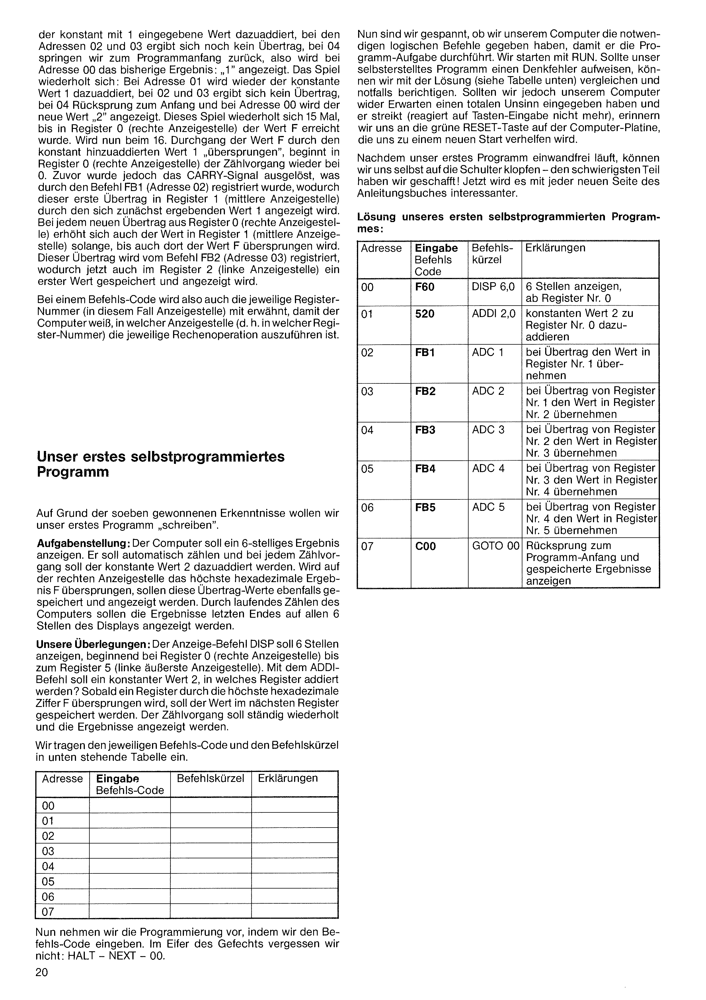
Now we're curious whether we gave the computer the right logical commands to do the job. We start with RUN. If our self-written program has a thinking error, we can compare it with the solution (see table below) and correct as needed. If we somehow gave the computer total nonsense and it strikes (doesn't react to key input), remember the green RESET key on the computer board for a fresh start.
Once our first program runs correctly, we can pat ourselves on the back — the hardest part is done! From now on every new page of the instruction book gets more interesting.
Solution to our first self-written program:
Address — Input command — Explanation
the constant 1 is added; at addresses 02 and 03 no carry yet results; at 04 we jump back to the program start, so at address 00 the current value 1 is shown. The cycle repeats: at address 01 we add 1 again, at 02/03 no carry, at 04 jump back, at 00 the new value 2 is shown. This continues 15 times until register 0 (right display position) reaches F. On the 16th pass, the constant 1 "skips past" F and counting in register 0 restarts at 0. Before that, however, the CARRY signal is triggered, which command FB1 (address 02) registers — so this first carry goes into register 1 (middle position), initially showing 1.
With each new carry out of register 0, register 1's value also increases until F is exceeded there too. That carry is captured by command FB2 (address 03), and now register 2 (leftmost position) gets its first value.
In each command code, the appropriate register number (the display position in this case) is also given, so the computer knows in which position (which register) to perform the operation.
| Addr | Code | Mnem. | Explanation |
|---|---|---|---|
| 00 | F60 | DISP 6,0 | display 6 positions, starting at register 0 |
| 01 | 520 | ADDI 2,0 | add constant 2 to register 0 |
| 02 | FB1 | ADC 1 | on carry, take the value into register 1 |
| 03 | FB2 | ADC 2 | on carry from register 1, take into register 2 |
| 04 | FB3 | ADC 3 | on carry from register 2, take into register 3 |
| 05 | FB4 | ADC 4 | on carry from register 3, take into register 4 |
| 06 | FB5 | ADC 5 | on carry from register 4, take into register 5 |
| 07 | C00 | GOTO 00 | jump back to program start and display the stored results |
Armed with the insights we've just gained, we now want to "write" our first program.
Task: the computer should display a 6-digit result. It should count automatically and add the constant 2 at every step. When the rightmost position skips past the highest hex value F, the carry should also be stored and displayed. As the computer keeps counting, the results should eventually fill all 6 positions on the display.
Our reasoning: the DISP command should show 6 positions, starting at register 0 (rightmost) through register 5 (leftmost). With ADDI we add a constant 2 — to which register? Whenever a register skips past F, the value should propagate into the next register. The counting loop should repeat indefinitely and the results be shown.
Write the command code and mnemonic into the table below:
| Addr | Code | Mnemonic |
|---|---|---|
| 00 | ||
| 01 | ||
| 02 | ||
| 03 | ||
| 04 | ||
| 05 | ||
| 06 | ||
| 07 |
Now do the programming by entering the codes. In the heat of the moment don't forget: HALT – NEXT – 00.
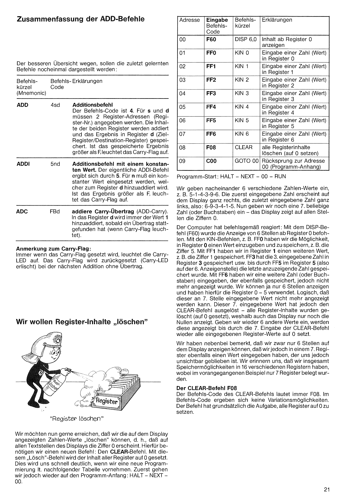
| Addr | Code | Mnem. | Explanation |
|---|---|---|---|
| 00 | F60 | DISP 6,0 | show contents from register 0 |
| 01 | FF0 | KIN 0 | enter a number (value) in register 0 |
| 02 | FF1 | KIN 1 | enter a number in register 1 |
| 03 | FF2 | KIN 2 | enter a number in register 2 |
| 04 | FF3 | KIN 3 | enter a number in register 3 |
| 05 | FF4 | KIN 4 | enter a number in register 4 |
| 06 | FF5 | KIN 5 | enter a number in register 5 |
| 07 | FF6 | KIN 6 | enter a number in register 6 |
| 08 | F08 | CLEAR | clear all register contents (set to 0) |
| 09 | C00 | GOTO 00 | jump back to address 00 (program start) |
Start: HALT – NEXT – 00 – RUN.
For better overview, the commands just learned are presented once more:
| Mnem. | Code | Explanation |
|---|---|---|
| ADD | 4sd | Addition command. Code is 4. For s and d, 2 register addresses must be given. The contents of the two registers are added and the result stored in register d (destination register). Any earlier value in d is overwritten. If the result exceeds F, the Carry-Flag lights. |
| ADDI | 5nd | Addition command with a constant. For n a constant value is substituted, which is added to register d. If the result exceeds F, the Carry-Flag lights. |
| ADC | FBd | Add Carry (ADD-Carry). The value 1 is added into register d whenever a carry has occurred (Carry-Flag lit). The Carry-Flag is reset on the next addition without a carry. |
Whenever a carry has occurred (Carry-Flag lit), the value 1 is always added into register d.
The computer reacted as commanded: the DISP command (F60) ordered display of 6 positions starting at register 0. The KIN commands (e.g. FF0) let us enter and store a value in register 0 — e.g. the digit 5. FF1 stored another value in register 1, e.g. 1. FF3 stored the 3rd entered value in register 3, etc., until FF5 stored the last displayed value in register 5 (the 6th display position). With FF6 we entered another value (or letter) which was also stored, but not shown — we can only display 6 positions, and we used registers 0–5 for those. Logically, this 7th value can't be displayed. That 7th entered value, however, triggered the CLEAR command — all register contents were cleared (set to 0), which is why the display now shows only zeros. If we enter 6 more values, they're shown until the 7th entry again triggers CLEAR and resets all entered register values to 0.
Incidentally, we noticed that although we can only display 6 positions, we did enter a value into a 7th register — it just stayed invisible. Recall that we have storage in 16 different registers total; in the previous example only 7 were used.
The CLEAR command: F08
The command code for CLEAR is always F08; no variations. Its job is to set all registers to 0.
"Clear registers"
We'd now like to be able to "clear" the number values shown on the display — i.e. all positions show the digit 0. For this we need a new command: the CLEAR command. With this "clear" command, the contents of all registers are set to 0. We'll see this quickly with a new program per the following table. First go back to the program start: HALT – NEXT – 00.
Note on the Carry-Flag: whenever the Carry-Flag is set, the Carry-LED lights. The Carry-Flag is reset (LED goes out) at the next addition without a carry.
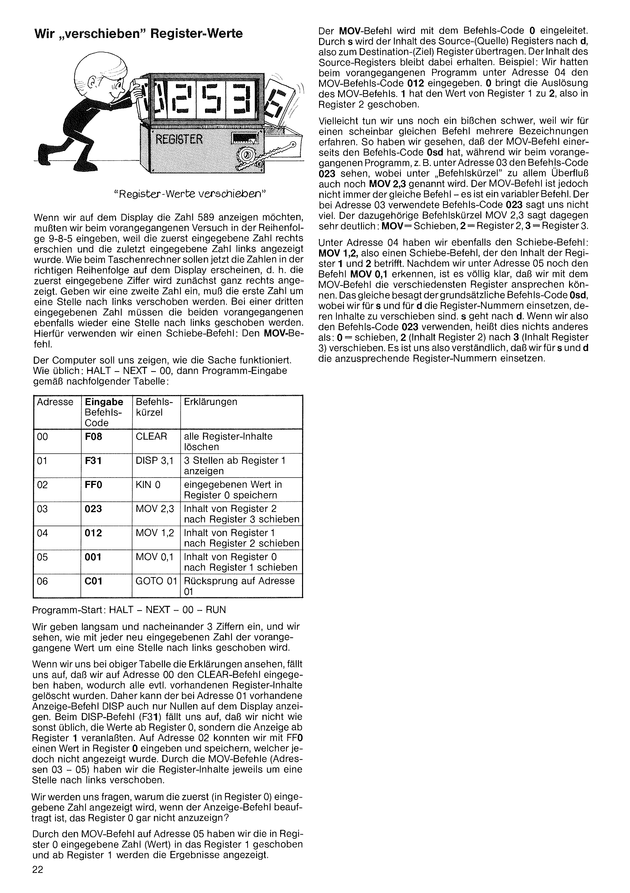
The MOV command starts with opcode 0. With s the contents of the source register are transferred to d, the destination register. The source register's contents are preserved. Example: in the previous program at address 04 we entered the MOV code 012. The leading 0 triggers MOV; 1 shifted register 1's value into register 2.
Maybe we're still a bit struggling because the same command is named several different ways. We've seen that MOV has the code 0sd, but in the previous program at e.g. address 03 we see the code 023 while under "mnemonic" it's written as MOV 2,3. The MOV command isn't always the same — it's a variable command. The code 023 at address 03 doesn't tell us much; the mnemonic MOV 2,3 tells us clearly: MOV = move, 2 = register 2, 3 = register 3.
At address 04 we also have a move command: MOV 1,2 — moves register 1 into 2. At address 05 the command MOV 0,1 makes it clear that with MOV we can address any registers. The generic code 0sd says the same thing — for s and d substitute the register numbers whose contents are to be moved. s goes to d. So code 023 simply means: 0 = move, 2 (contents of register 2) to 3 (register 3). Substituting register numbers for s and d is now clear.
"Shifting register values"
In the previous experiment, to show the number 589 we had to enter it in the order 9-8-5, because the first entered digit appeared at the right and the last on the left. We want the digits to appear in normal order, like a pocket calculator — the first entered digit appears at the right, and when a second is entered the first shifts one position to the left. For a third digit, the previous two shift one position further left. For this we use a shift command: the MOV command.
The computer will show us how it works. As usual: HALT – NEXT – 00, then program entry per the table:
| Addr | Code | Mnem. | Description |
|---|---|---|---|
| 00 | F08 | CLEAR | clear all registers |
| 01 | F31 | DISP 3,1 | show 3 positions starting at reg 1 |
| 02 | FF0 | KIN 0 | store entered value in reg 0 |
| 03 | 023 | MOV 2,3 | move reg 2 → reg 3 |
| 04 | 012 | MOV 1,2 | move reg 1 → reg 2 |
| 05 | 001 | MOV 0,1 | move reg 0 → reg 1 |
| 06 | C01 | GOTO 01 | jump to address 01 |
Start: HALT – NEXT – 00 – RUN.
Enter 3 digits slowly, one at a time. With each new digit the previous values shift one position to the left.
Looking at the explanations: at address 00 we issued CLEAR, which wiped any existing register contents. So the DISP command at address 01 can only show zeros. At DISP (F31) we notice we no longer start displaying from register 0 — we display starting from register 1. At address 02 with FF0 we entered a value into register 0, which is not shown. The MOV commands at addresses 03–05 then shift the register contents one position to the left.
Why is the first entered number (in register 0) shown, even though the display command is told NOT to display register 0?
Because the MOV at address 05 shifted register 0's value into register 1, and the display starts from register 1.
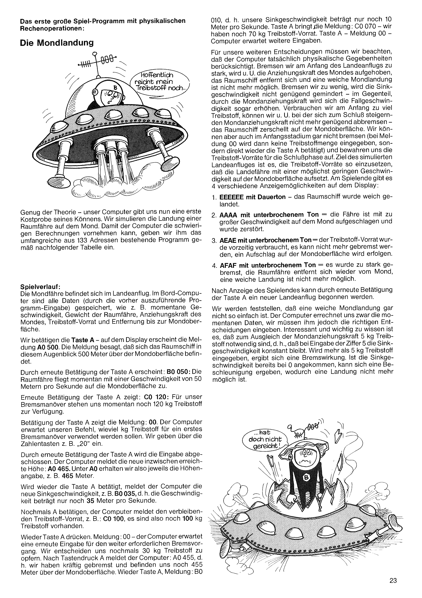
010 — i.e. our descent speed is only 10 m/s. Key A shows: C0 070 — we have 70 kg of fuel left. Key A — 00 — computer awaits further input.
For our next decisions remember that the computer truly accounts for the physics. Brake too hard at the start of the approach and the Moon's gravity can be overcome — the spacecraft moves away and a soft landing is no longer possible. Brake too little and the descent speed isn't reduced enough — on the contrary, the Moon's gravity will increase it. Burn too much fuel early and we may not have enough left to brake against the strengthening lunar gravity in the final phase — the spacecraft crashes on the surface. We can also leave braking until later (with the 00 prompt, don't enter a fuel amount — just press A again) and save fuel for the final phase. The goal of the simulated approach is to use the fuel so the lander touches down at the lowest possible speed. At the end of the game there are 4 possible display outcomes:
After the game-end display, pressing A again starts a new approach.
A soft Moon landing is not so easy. The computer calculates the current data but we must give it the correct decisions. Importantly: 5 kg of fuel is needed just to balance lunar gravity — i.e. entering 5 keeps the descent speed constant. More than 5 kg gives braking. If descent speed is already at 0, a further burn can accelerate upwards, and landing is no longer possible.
Enough theory — our computer now gives us a first taste of its abilities. We simulate a lunar lander's touchdown. So the computer can perform the involved calculations, we feed it the substantial 133-address program from the following table.
Gameplay: the lunar module is on its approach. All data are stored in the onboard computer (via the program we just entered): current speed, vehicle mass, Moon gravity, fuel supply, and altitude.
We press A — the display shows A0 500. This means the spacecraft is currently 500 m above the lunar surface.
Press A again — B0 050: the lander is currently descending toward the surface at 50 m/s.
Press A again — C0 120: we have 120 kg of fuel for braking.
Press A — 00. The computer is awaiting our command: how many kg of fuel to use for a first braking burn. We enter, e.g., 20 via the digit keys.
Another press of A completes the input. The computer reports the new altitude: A0 465. So under A0 we always get the altitude, e.g. 465 m.
A again — the new descent speed, e.g. B0 035, i.e. only 35 m/s.
A again — remaining fuel, e.g. C0 100 — so 100 kg left.
A again. 00 — computer awaits the next braking input. We decide to burn another 30 kg of fuel. After A the computer reports: A0 455 — we braked hard and are still 455 m up. A again, message: B0 ...
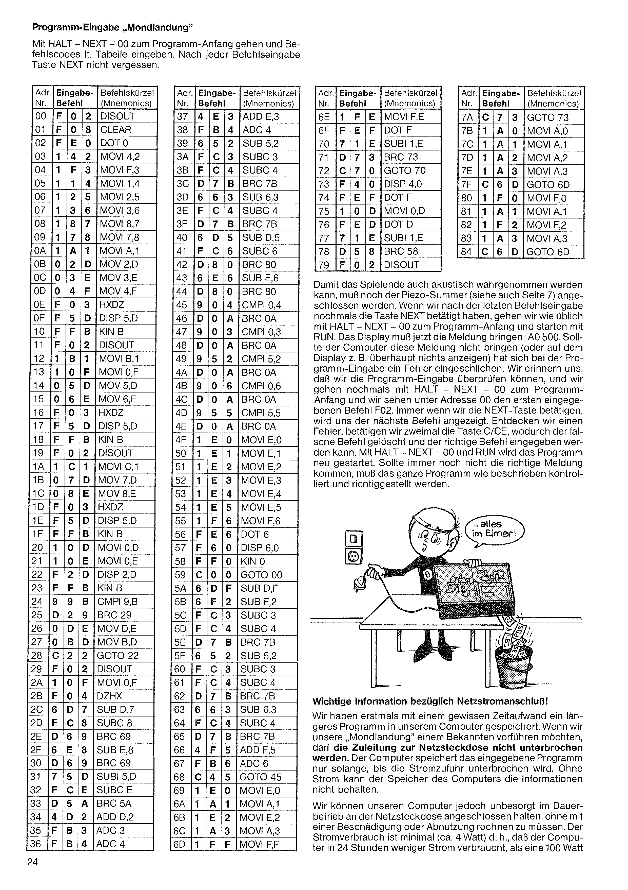
Press HALT – NEXT – 00 to go to the program start, then enter the command codes from the table. Don't forget to press NEXT after each command entry.
So that the end of the game can also be heard, you must connect the piezo buzzer (see also page 7). When the last command has been entered and NEXT pressed once more, go as usual with HALT – NEXT – 00 to the program start and start with RUN. The display must now show the message A0 500. If the computer doesn't show this (or shows nothing at all), an error has crept into the program entry. Remember that we can check the entered program. Go again with HALT – NEXT – 00 to the program start and we see at address 00 the first entered command F02. Pressing NEXT shows each subsequent command. If we spot an error, press C/CE twice to delete the wrong command, then enter the correct one. HALT – NEXT – 00 and RUN restarts the program. If the right message still doesn't appear, the whole program must be checked and corrected as described.
Important information about the power supply connection!
For the first time we have invested significant effort in storing a longer program in our computer. If we want to show our "Moon Landing" to a friend, the power-supply cable must not be interrupted: the power supply must NOT be unplugged or the stored program is lost. Apart from the permanently installed programs in the computer, the entered data are no longer present.
When we can leave the computer plugged in continuously (e.g. for several days at a time), and have not interrupted the power, we can also let our computer run as a digital LED clock in idle time. We remember that for the clock, Input 4 must be connected to Takt/Clock. The computer uses about 4 W — in 24 hours less than a 100 W
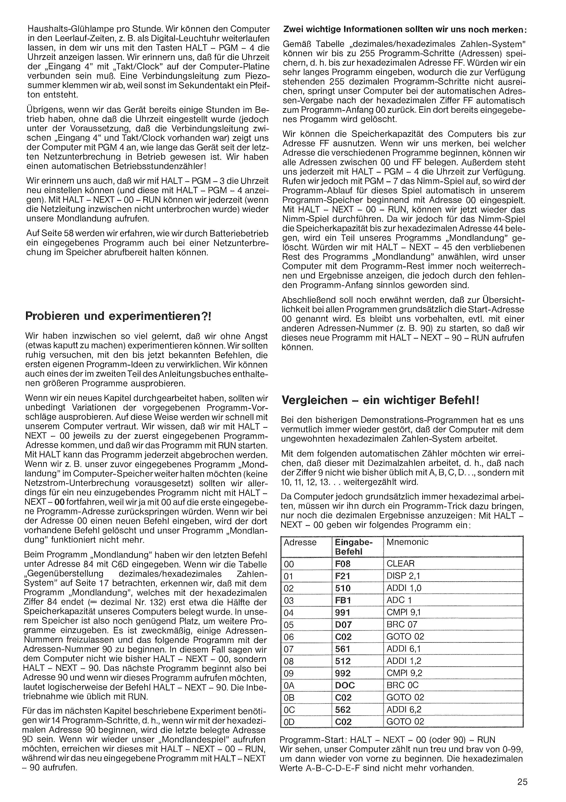
of a household light bulb's hourly consumption. We can let the computer run in idle time, e.g. as a digital LED clock — display the time with HALT – PGM – 4. Remember that for the clock, Input 4 must be connected to Takt/Clock on the computer board. Disconnect one wire from the piezo buzzer or it'll beep every second.
Incidentally, if the device has been running for several hours without the clock being set (but with Input 4 connected to Takt/Clock), PGM 4 shows how long the device has been on since the last power interruption — we have an automatic operating-hours counter!
Recall: HALT – PGM – 3 sets the time of day (HALT – PGM – 4 displays it). With HALT – NEXT – 00 – RUN we can return to the Moon Landing any time (provided the power hasn't been interrupted).
On page 58 we'll learn how to keep an entered program in memory across a power interruption using battery operation.
Per the decimal/hexadecimal table, we can store up to 255 program steps (addresses) — i.e. up to hex address FF. If we enter a very long program that exceeds the available 255 decimal program steps, the computer's automatic address counter wraps from hex FF back to address 00 — overwriting any program already there.
We can use the full memory up to address FF. If we remember at which address each program begins, we can fill every address between 00 and FF. HALT – PGM – 4 always shows the current time. But if we call up the Nim game with PGM 7, that program is loaded into our program memory starting at address 00 — overwriting part of our Moon Landing program. HALT – NEXT – 00 – RUN restarts Nim. Since Nim occupies up to hex address 44, that range of the Moon Landing program is wiped. If we then call HALT – NEXT – 45 to invoke the remaining part of Moon Landing, the computer will still execute the remainder and show results — but they'll be meaningless because the program start is gone.
For clarity, all program listings here begin at start-address 00 by convention. We're free to start at another address (e.g. 90) and call up that program with HALT – NEXT – 90 – RUN.
Compare — an important command!
In previous demo programs it probably bothered us repeatedly that the computer works in unfamiliar hexadecimal. With the following automatic counter we want it to use decimal numbers — i.e. after 9 we want it to count 10, 11, 12, 13, … instead of A, B, C, D, ….
Since a computer always works in hex internally, we have to use a programming trick to make it display only decimal results. With HALT – NEXT – 00 we enter the following program:
| Address | Command code | Mnemonic |
|---|---|---|
| 00 | F08 | CLEAR |
| 01 | F21 | DISP 2,1 |
| 02 | 510 | ADDI 1,0 |
| 03 | FB1 | ADC 1 |
| 04 | 991 | CMPI 9,1 |
| 05 | D07 | BRC 07 |
| 06 | C02 | GOTO 02 |
| 07 | 561 | ADDI 6,1 |
| 08 | 512 | ADDI 1,2 |
| 09 | 992 | CMPI 9,2 |
| 0A | D0C | BRC 0C |
| 0B | C02 | GOTO 02 |
| 0C | 562 | ADDI 6,2 |
| 0D | C02 | GOTO 02 |
Try and experiment?!
We've learned so much by now that we can experiment without fear of breaking something. We should try using the commands we know so far to realize our first program ideas. We can also try one of the longer programs in part 2 of the instruction book.
After working through a new chapter, definitely try variations on the suggested programs. That's the fastest way to become comfortable with the computer. We know HALT – NEXT – 00 takes us to the first entered program address and RUN starts the program. HALT aborts at any time.
If we want to keep the previously entered Moon Landing program in the computer's memory (no power interruption), we should NOT use HALT – NEXT – 00 for a new program — because 00 jumps back to the first program address. Entering a new command at address 00 overwrites what was there and Moon Landing stops working.
In Moon Landing the last command was entered under address 84 (C6D). Looking at the decimal/hex table on page 17, we see that Moon Landing — ending at hex address 84 (= decimal 132) — only fills about half the memory. There's plenty of room for more programs. It's a good practice to leave some addresses free and start the next program at address 90. Then we say HALT – NEXT – 90 instead of HALT – NEXT – 00. The new program begins at address 90, and to call it up we use HALT – NEXT – 90. Start as usual with RUN.
For the experiment in the next chapter we need 14 program steps. Starting at hex address 90, the last address used is 9D. To return to Moon Landing, use HALT – NEXT – 00 – RUN; to call the new program, use HALT – NEXT – 90.
Program start: HALT – NEXT – 00 (or 90) – RUN.
The computer now dutifully counts 0–99 and starts over. The hex values A-B-C-D-E-F no longer appear.
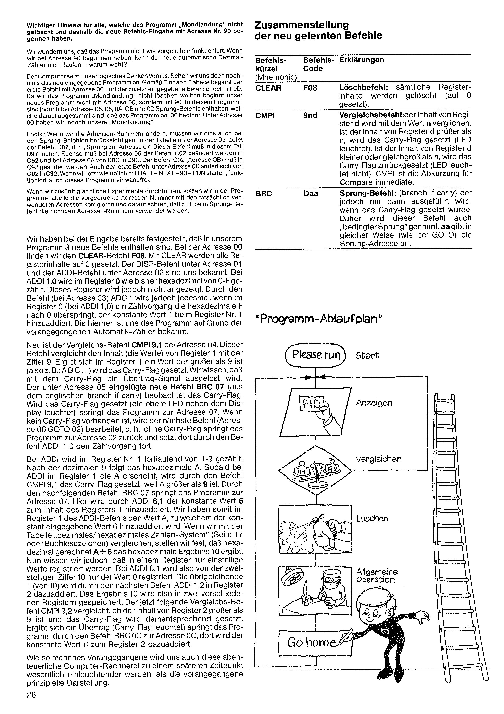
Important note for anyone who did not erase the "Moon Landing" program and therefore started the new program at address 90.
If we wonder why the program doesn't work as expected — having begun entry at address 90 means our new automatic decimal counter can't run. Why?
The computer expects logical thinking from us. Let's look again at the entered program. Per the input table, the first command starts at address 00 and the last at address 0D. Because we wanted to keep the Moon Landing program, our new program doesn't start at 00 but at 90. However, the new program contains jump commands at addresses 05, 06, 0A, 0B and 0D that assume a start address of 00. At address 00 we still have Moon Landing.
Logic: if we change the address numbers, we must update the jump commands too. In the table at address 05 the command D07 means "jump to address 07"; in this case it must read D97. Likewise at address 06 the command C02 becomes C92; at address 0A, D0C becomes D9C; the command C02 at 0B becomes C92; and the last command at 0D, C02, becomes C92. Now start as usual with HALT – NEXT – 90 – RUN and the program will work correctly.
For similar experiments in the future, correct the pre-printed address numbers in the program table to the addresses you actually use, and make sure jump commands use the right address numbers.
During entry we already noticed that our program contains 3 new commands. At address 00 we find the CLEAR command F08. CLEAR sets all register contents to 0. The DISP command at address 01 and the ADDI command at address 02 are familiar. At ADDI 1,0 register 0 counts in hex from 0 to F as before, but this register isn't displayed. The ADC 1 command at address 03 adds the constant 1 into register 1 every time register 0's counter rolls past F to 0. Up to here the program looks like our earlier automatic counters.
New is the compare command CMPI 9,1 at address 04. It compares the contents of register 1 with the value 9. If the value in register 1 is greater than 9 (e.g. A, B, C, …), the Carry-Flag is set. We know the Carry-Flag signals a carry. The new command BRC 07 (branch if carry) at address 05 watches the Carry-Flag. If it is set (upper LED beside the display lit), the program jumps to address 07. If not, the next command (address 06, GOTO 02) runs — so without a carry the program jumps back to address 02 and continues counting with ADDI 1,0.
With ADDI, register 1 counts continuously from 1 to 9. After decimal 9 comes hex A. As soon as A appears in register 1 via ADDI, CMPI 9,1 sets the Carry-Flag because A > 9. BRC 07 then jumps to address 07, where ADDI 6,1 adds the constant 6 to register 1. So register 1 had value A and we add 6: comparing with the decimal/hex table on page 17, A + 6 = hex 10. But a register holds only single-digit values: so ADDI 6,1 stores only the 0 from "10". The remaining 1 (from "10") is added into register 2 by the next command ADDI 1,2. The result "10" is thus split across two registers. The next compare command CMPI 9,2 checks whether register 2 exceeds 9 and sets the Carry-Flag accordingly. If there's a carry, BRC 0C jumps to address 0C, where the constant 6 is added into register 2.
Like many things before, this rather adventurous computer arithmetic will become much clearer later than this initial schematic description.
| Mnem. | Code | Explanation |
|---|---|---|
| CLEAR | F08 | Set all register contents to 0. |
| CMPI | 9nd | Compare-Immediate. The contents of register d are compared with the value n. If register d > n, the Carry-Flag is set (LED lit). If register d ≤ n, the Carry-Flag is reset (LED off). CMPI = Compare Immediate. |
| BRC | Daa | Branch-if-Carry. A jump command that is executed only if the Carry-Flag is set; hence called a "conditional jump". aa gives the jump target address (like GOTO). |
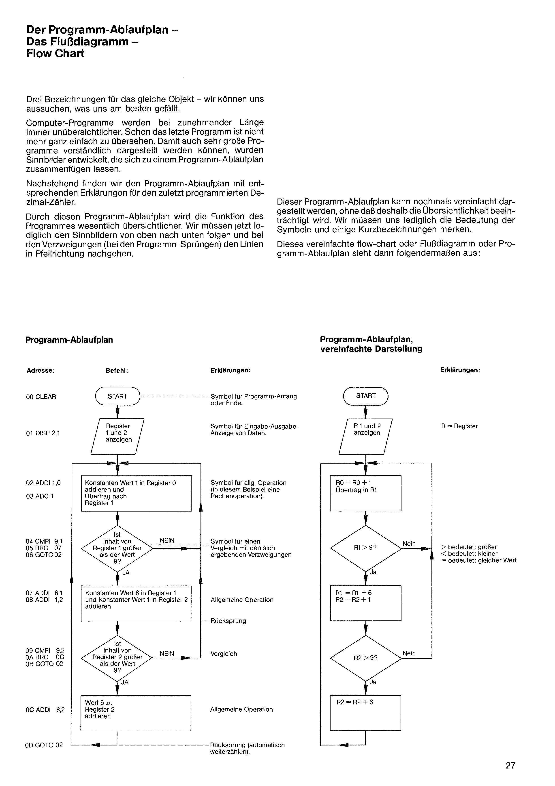
Three names for the same thing — pick the one you like best.
Computer programs become harder to follow as they grow longer. Even the last program is no longer trivial to scan. To make even very large programs understandable, symbols were developed that can be assembled into a program flow chart.
Below is the flow chart with explanations for our last-programmed decimal counter.
The flow chart makes the program's function much clearer. We simply follow the symbols from top to bottom and, at branches (the jumps), follow the lines in the arrow's direction.
This flow chart can be simplified further without losing clarity. We only need to remember the meaning of the symbols and a few short labels.
The simplified flow chart / Flußdiagramm / flow chart then looks like this:
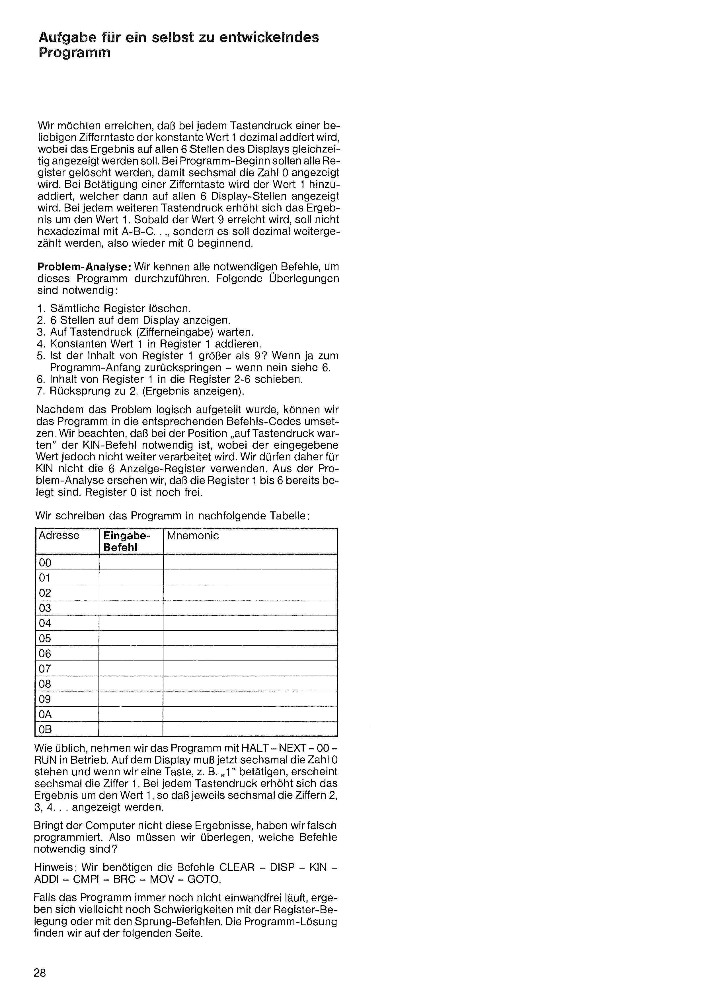
We want: at each press of any digit key, the constant 1 (decimal) should be added, with the result shown simultaneously on all 6 positions of the display. At program start, all registers should be cleared so six zeros are shown. Each subsequent digit key press increments the result by 1, which then appears on all 6 display positions. As soon as the value 9 is reached, counting should NOT continue with hex A-B-C… but should continue in decimal — starting again at 0.
Problem analysis: we know all the commands needed. Required steps:
With the problem broken down logically, we can translate it into the corresponding command codes. Note that at "wait for key press" the KIN command is needed, but the entered value is not used further — so we shouldn't use any of the 6 display registers for KIN. From the analysis we see that registers 1–6 are already taken; register 0 is still free.
Write the program into the table below:
| Addr | Code | Mnemonic |
|---|---|---|
| 00 | ||
| 01 | ||
| 02 | ||
| 03 | ||
| 04 | ||
| 05 | ||
| 06 | ||
| 07 | ||
| 08 | ||
| 09 | ||
| 0A | ||
| 0B |
As usual, start the program with HALT – NEXT – 00 – RUN. The display should now show six 0s, and when we press a key (e.g. 1), six 1s appear. Each subsequent key press increments the result by 1, so the display shows 2, 3, 4… on all six positions.
If the computer doesn't produce these results, we programmed it wrong. Consider: which commands are needed?
Hint: we need CLEAR – DISP – KIN – ADDI – CMPI – BRC – MOV – GOTO.
If the program still doesn't work, the problem may be in register allocation or in the jump commands. The solution is on the following page.
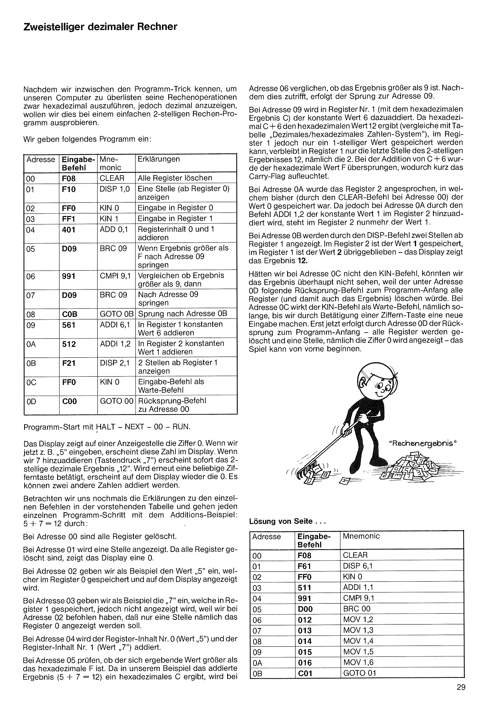
address 06, we check whether the result is greater than 9. Since it is, we jump to address 09.
At address 09, register 1 (which has the hex result C) gets the constant 6 added to it. Since hex C + 6 = hex 12 (compare with the decimal/hex table), but register 1 holds only single-digit values, only the last digit of the 2-digit result "12" — namely 2 — stays in register 1. Adding C + 6 skipped past hex F, briefly lighting the Carry-Flag.
At address 0A, register 2 is addressed. So far it held 0 (cleared at address 00). ADDI 1,2 adds the constant 1 into register 2, so register 2 now contains 1.
At address 0B the DISP command displays two positions starting at register 1. Register 2 contains 1, register 1 contains 2 — the display shows the result 12.
Without the KIN command at address 0C we wouldn't see the result at all, because the jump-back to the program start at address 0D would clear all registers (and the result). At address 0C, KIN acts as a wait command — it waits until we press a digit key to make a new entry. Only then does address 0D execute the jump back to the program start: all registers are cleared, a single 0 is displayed, and the game starts over.
Now that we know the programming trick to make our computer execute its arithmetic in hex but display it in decimal, let's try it on a simple 2-digit calculator program.
Enter:
| Addr | Code | Mnem. | Explanation |
|---|---|---|---|
| 00 | F08 | CLEAR | clear all registers |
| 01 | F10 | DISP 1,0 | display 1 position (from register 0) |
| 02 | FF0 | KIN 0 | input into register 0 |
| 03 | FF1 | KIN 1 | input into register 1 |
| 04 | 401 | ADD 0,1 | add contents of register 0 and 1 |
| 05 | D09 | BRC 09 | if result > F, jump to address 09 |
| 06 | 991 | CMPI 9,1 | compare: is result > 9? |
| 07 | D09 | BRC 09 | if so, jump to address 09 |
| 08 | C0B | GOTO 0B | jump to address 0B |
| 09 | 561 | ADDI 6,1 | add constant 6 to register 1 |
| 0A | 512 | ADDI 1,2 | add constant 1 to register 2 |
| 0B | F21 | DISP 2,1 | display 2 positions starting at register 1 |
| 0C | FF0 | KIN 0 | input command used as a wait |
| 0D | C00 | GOTO 00 | jump back to address 00 |
Start with HALT – NEXT – 00 – RUN.
The display shows 0 in one position. If we now enter e.g. 5, that number appears. If we then add 7 (key 7), the 2-digit decimal result 12 appears immediately. Pressing any other digit key shows 0 again — two more numbers can be added.
Let's review the explanations and walk through each step with the example 5 + 7 = 12:
At address 00 all registers are cleared.
At address 01 one position is shown. Since all registers are clear, the display shows 0.
At address 02 we enter the example value 5, which is stored in register 0 and shown on the display.
At address 03 we enter 7, which is stored in register 1 but NOT shown — because at address 01 we said to display only one position (register 0).
At address 04, register 0 (value 5) and register 1 (value 7) are added.
At address 05 we test whether the resulting value exceeds hex F. In our example, 5 + 7 = 12 = hex C, so at
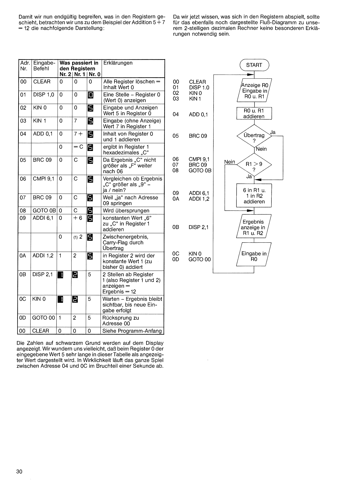
To finally grasp what happens in the registers, let's look at the following illustration for the addition 5 + 7 = 12:
Now that we know what's happening in the registers, no further explanation should be needed for the flow chart of our 2-digit decimal calculator shown alongside.
| Addr. | Input command | What happens in the registers | Explanation | ||
|---|---|---|---|---|---|
| R 2 | R 1 | R 0 | |||
| 00 | CLEAR | 0 | 0 | 0 | Clear all registers — content set to 0 |
| 01 | DISP 1,0 | 0 | 0 | 0 | Display 1 position — register 0 (value 0) |
| 02 | KIN 0 | 0 | 0 | 5 | Enter & display value 5 in register 0 |
| 03 | KIN 1 | 0 | 7 | 5 | Enter (no display) value 7 in register 1 |
| 04 | ADD 0,1 | 0 | 7+ | 5 | Add contents of register 0 and 1 |
| 0 | =C | 5 | Result in register 1: hex "C" | ||
| 05 | BRC 09 | 0 | C | 5 | Result "C" is not greater than "F" — continue at 06 |
| 06 | CMPI 9,1 | 0 | C | 5 | Compare: is result "C" greater than "9"? — yes / no? |
| 07 | BRC 09 | 0 | C | 5 | Since "yes", jump to address 09 |
| 08 | GOTO 0B | 0 | C | 5 | Skipped |
| 09 | ADDI 6,1 | 0 | +6 | 5 | Add constant "6" to "C" in register 1 |
| 0 | (1)2 | 5 | Intermediate result, Carry-Flag from overflow | ||
| 0A | ADDI 1,2 | 1 | 2 | 5 | In register 2 the constant 1 is added (to previous 0) |
| 0B | DISP 2,1 | 1 | 2 | 5 | Display 2 positions from register 1 (regs 1 and 2) = result = 12 |
| 0C | KIN 0 | 1 | 2 | 5 | Wait — result stays visible until new input |
| 0D | GOTO 00 | 1 | 2 | 5 | Jump back to address 00 |
| 00 | CLEAR | 0 | 0 | 0 | See program start |
Numbers on a black background appear on the display. We may wonder why register 0's value 5 stays shown for so long in this table. In reality the entire sequence between address 04 and 0C runs in a fraction of a second.
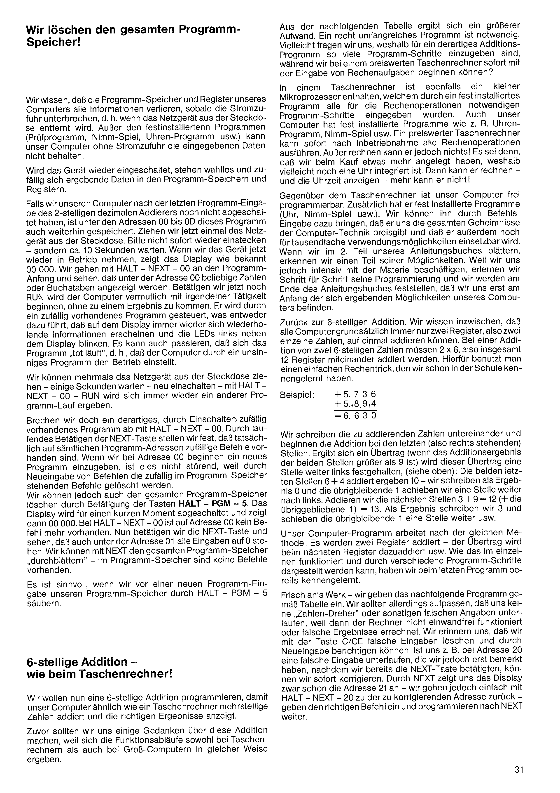
From the following table, a larger effort emerges — a fairly extensive program is required. We may wonder why such an addition program needs so many program steps, while a cheap pocket calculator lets us start typing calculations immediately.
A pocket calculator also contains a small microprocessor, into which all the steps for arithmetic operations have been loaded as a permanent program. Our computer too has permanently installed programs (the clock, the Nim game, etc.). A cheap calculator can perform arithmetic from the moment it's switched on — but that's all it can do! Unless we paid a bit more and got a clock built in too — then it can compute and show the time, and nothing else!
In contrast, our computer is freely programmable. It also has permanently installed programs (clock, Nim game, etc.). With command entries we can have it reveal all the secrets of computer technology and put it to thousands of other uses. Browse the 2nd part of the instruction book to see some possibilities. By engaging deeply with the material we learn its programming step by step — and at the end of the book we'll realize we are still only at the beginning of our computer's possibilities.
Back to 6-digit addition. We know by now that computers fundamentally always add only two registers — two individual numbers — at a time. To add two 6-digit numbers we must add 2×6 = 12 registers together. For this we use the simple trick we learned in school.
Write the numbers to be added under each other and start adding from the rightmost digits. If a carry occurs (sum > 9 in that column), carry it one position left (see above): 6 + 4 = 10, write 0 and carry 1 left; next column 3 + 9 = 12 (+ the carried 1) = 13, write 3 and carry 1 left; and so on.
Our computer program works the same way: add two registers, carry into the next register, etc. We learned how this works in the previous program.
Let's get to it — enter the following program from the table. Be careful not to flip digits or make typos, or the calculator won't work correctly. Recall: C/CE deletes wrong entries; you can re-enter the correct command. If we make a mistake at e.g. address 20 and only notice after pressing NEXT, we can correct it immediately: NEXT will show address 21, but simply do HALT – NEXT – 20 to return to the address to be corrected, enter the right command, then NEXT to continue programming.
We know that the program memory and registers of our computer lose all information as soon as power is interrupted (when the power adapter is unplugged). Apart from the permanently installed programs (test, Nim, clock, etc.), our computer cannot retain entered data without power.
When switched back on, random data sits in the program memory and registers.
If we haven't yet powered off after entering the 2-digit decimal adder, it is still stored at addresses 00–0D. Now unplug the adapter. Don't plug it back in immediately — wait about 10 seconds. When we switch on again, the display shows the familiar 00 000. HALT – NEXT – 00 takes us to the program start and we see arbitrary digits/letters under address 00. Pressing RUN now will probably start some random activity that never reaches a result — driven by a random program in memory — and we see repeating display values + blinking LEDs. The program may also "run dead" — the computer stops because of a nonsense program.
We can repeatedly unplug, wait a few seconds, plug back in: HALT – NEXT – 00 – RUN will always start a different random program.
Let's abort such a random program with HALT – NEXT – 00. Pressing NEXT repeatedly shows random commands at every program address. Starting to enter a new program at address 00 isn't a problem — entering new commands overwrites whatever was randomly there.
But we can also wipe the entire program memory by pressing HALT – PGM – 5. The display turns off briefly and then shows 00 000. After HALT – NEXT – 00, address 00 contains no command. Press NEXT: address 01 is also all 0. We can "page through" the entire program memory with NEXT — no commands anywhere.
It's a good idea to clean the program memory with HALT – PGM – 5 before entering a new program.
Let's program a 6-digit addition so the computer adds multi-digit numbers like a pocket calculator and shows the correct result.
First let's think about this addition, since the procedure is the same for both pocket calculators and large computers.
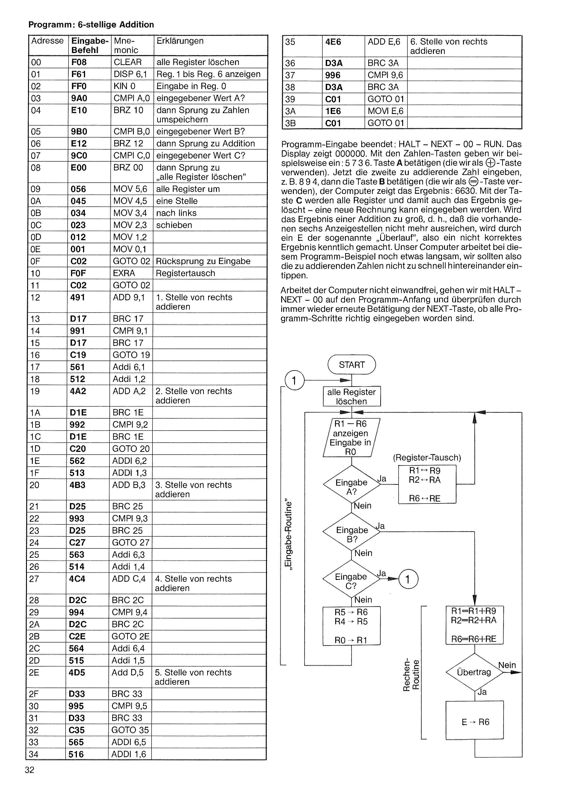
Program entry complete: HALT – NEXT – 00 – RUN. The display shows 000000. Using the number keys we enter, for example: 5736. Press A (which we use as the "+" key). Now enter the second number to be added, e.g. 894, then press B (which we use as the "=" key); the computer shows the result: 6630. With key C all registers — and thus the result — are cleared, so a new calculation can be entered. If the result of an addition gets too large, i.e. the six available display positions are no longer sufficient, an E marks the so-called "overflow" — an incorrect result. With this example our computer is still a bit slow, so we should not type the numbers to be added too quickly one after another.
If the computer is not working correctly, we go with HALT – NEXT – 00 to the program start and check, by repeatedly pressing the NEXT key, that all program steps have been entered correctly.
| Addr | Code | Mnem. | Explanation |
|---|---|---|---|
| 00 | F08 | CLEAR | clear all registers |
| 01 | F61 | DISP 6,1 | show Reg. 1 to Reg. 6 |
| 02 | FF0 | KIN 0 | input into Reg. 0 |
| 03 | 9A0 | CMPI A,0 | entered value A? |
| 04 | E10 | BRZ 10 | then jump to relocate numbers |
| 05 | 9B0 | CMPI B,0 | entered value B? |
| 06 | E12 | BRZ 12 | then jump to addition |
| 07 | 9C0 | CMPI C,0 | entered value C? |
| 08 | E00 | BRZ 00 | then jump to “clear all registers” |
| 09 | 056 | MOV 5,6 | shift all registers |
| 0A | 045 | MOV 4,5 | one position |
| 0B | 034 | MOV 3,4 | to the left |
| 0C | 023 | MOV 2,3 | |
| 0D | 012 | MOV 1,2 | |
| 0E | 001 | MOV 0,1 | |
| 0F | C02 | GOTO 02 | return to input |
| 10 | F0F | EXRA | swap registers |
| 11 | C02 | GOTO 02 | |
| 12 | 491 | ADD 9,1 | add 1st digit from the right |
| 13 | D17 | BRC 17 | |
| 14 | 991 | CMPI 9,1 | |
| 15 | D17 | BRC 17 | |
| 16 | C19 | GOTO 19 | |
| 17 | 561 | ADDI 6,1 | |
| 18 | 512 | ADDI 1,2 | |
| 19 | 4A2 | ADD A,2 | add 2nd digit from the right |
| 1A | D1E | BRC 1E | |
| 1B | 992 | CMPI 9,2 | |
| 1C | D1E | BRC 1E | |
| 1D | C20 | GOTO 20 | |
| 1E | 562 | ADDI 6,2 | |
| 1F | 513 | ADDI 1,3 | |
| 20 | 4B3 | ADD B,3 | add 3rd digit from the right |
| 21 | D25 | BRC 25 | |
| 22 | 993 | CMPI 9,3 | |
| 23 | D25 | BRC 25 | |
| 24 | C27 | GOTO 27 | |
| 25 | 563 | ADDI 6,3 | |
| 26 | 514 | ADDI 1,4 | |
| 27 | 4C4 | ADD C,4 | add 4th digit from the right |
| 28 | D2C | BRC 2C | |
| 29 | 994 | CMPI 9,4 | |
| 2A | D2C | BRC 2C | |
| 2B | C2E | GOTO 2E | |
| 2C | 564 | ADDI 6,4 | |
| 2D | 515 | ADDI 1,5 | |
| 2E | 4D5 | ADD D,5 | add 5th digit from the right |
| 2F | D33 | BRC 33 | |
| 30 | 995 | CMPI 9,5 | |
| 31 | D33 | BRC 33 | |
| 32 | C35 | GOTO 35 | |
| 33 | 565 | ADDI 6,5 | |
| 34 | 516 | ADDI 1,6 |
| 35 | 4E6 | ADD E,6 | add 6th digit from the right |
| 36 | D3A | BRC 3A | |
| 37 | 996 | CMPI 9,6 | |
| 38 | D3A | BRC 3A | |
| 39 | C01 | GOTO 01 | |
| 3A | 1E6 | MOVI E,6 | |
| 3B | C01 | GOTO 01 |
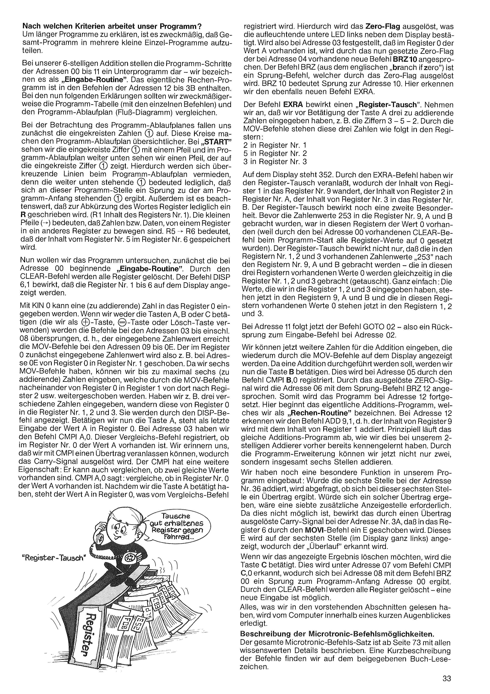
By what criteria does our program work?
To explain longer programs, it's useful to split the whole program into several smaller sub-programs.
In our 6-digit addition, the steps at addresses 00 to 11 form a sub-program — we call it the "input routine". The actual arithmetic program lives in addresses 12 to 3B. For the explanations that follow, compare the program table (with the individual commands) with the program flow chart (Flußdiagramm).
Looking at the flow chart, we first notice the circled numbers (1, 2, …). These circles make the flow chart clearer. At START we see the circled digit (1) with an arrow, and further down in the flow chart we see an arrow pointing at the circled (1). This avoids crossing lines in the flow chart — the lower circled (1) means simply that at this program point there is a jump to the (1) at the program start. Also: the word "register" is abbreviated to R (R1 = contents of register 1). The little arrows (→) mean that numbers/data are being moved from one register to another. R5 → R6 means register 5's contents are stored into register 6.
Now let's examine the program, starting with the input routine at address 00. CLEAR clears all registers. DISP 6,1 displays registers 1 through 6.
With KIN 0 a number (to be added) can be entered into register 0. If we don't press the A, B or C keys (which we use as "&" key, "=" key or clear key), the commands at addresses 03 through 08 are skipped — i.e. the entered number flows on to the MOV commands at addresses 09 through 0E. The number first entered into register 0 is, for example, shifted at address 0E from register 0 into register 1. Since we have six MOV commands, we can enter up to six numbers (to add), which the MOV commands successively shift from register 0 into register 1, then 2, etc. If we entered three different numbers, they sit in registers 1, 2 and 3 and are shown by the DISP command.
If we now press A, the last entry is the value A in register 0. At address 03 we have CMPI A,0. This compare command checks whether register 0 contains the value A. Recall that CMPI can trigger a carry signal. But it has another property: it can also check for equal values. CMPI A,0 says: compare whether register 0 contains the value A. Since we pressed A, register 0 holds A, which the compare command
registers. This triggers the Zero-Flag, confirmed by the lower LED lighting beside the display. So if at address 03 register 0 contains A, the now-set Zero-Flag activates the new command BRZ 10 at address 04. BRZ ("branch if zero") is a jump triggered by the Zero-Flag. BRZ 10 means: jump to address 10. There we meet another new command, EXRA.
EXRA performs a register swap. Suppose before pressing A we entered three numbers to be added, e.g. 3 - 5 - 2. After the MOV commands, these three numbers sit in:
The display shows 352. EXRA performs the register swap: register 1's contents move to register 9, register 2's to register A, register 3's to register B. EXRA has a second special effect: before 253 was placed into registers 9, A and B, those registers held 0 (because CLEAR at address 00 cleared everything at program start). The swap doesn't only move 253 from registers 1, 2, 3 into 9, A, B — at the same time the 0 values from 9, A, B are swapped into registers 1, 2, 3.
Simply: the values we entered into registers 1, 2 and 3 are now in registers 9, A and B; the 0 values that were in those registers are now in 1, 2 and 3.
At address 11 follows GOTO 02 — a jump back to the input command at address 02.
Now we can enter further numbers for the addition, again shown via the MOV commands. To perform the addition we press B. This is registered at address 05 by CMPI B,0. The triggered ZERO signal activates address 06's jump BRZ 12. So the program continues at address 12. Here begins the actual addition program — what we call the arithmetic routine. At address 12 we see ADD 9,1 — register 9's contents are added to register 1. In principle the same addition program runs as in our 2-digit adder. The program extension lets us add not just two but six digits.
We've built in a special function: when the sixth digit is added at address 36, the program checks whether there's an overflow at this 6th position. If there is, a 7th display position would be needed — which isn't possible. So the carry signal triggered by the overflow causes address 3A's MOVI command to shift an E into register 6. That E appears on the 6th display position (far left), signaling the "overflow".
To clear the displayed result, press C. This is recognised at address 07 by CMPI C,0, and at address 08 BRZ 00 jumps to the program start at address 00. CLEAR clears all registers — a new entry is possible.
Everything we read in the preceding paragraphs is performed by the computer in the blink of an eye.
Description of the Microtronic instructions. The full Microtronic instruction set is described in detail from page 73. A short summary is on the included bookmark.
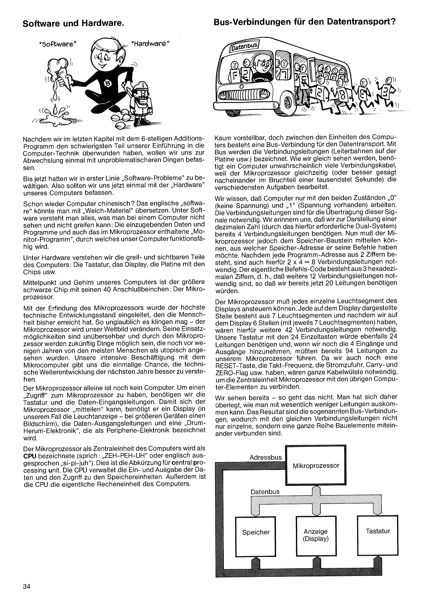
Hard to imagine, but between the computer's units there is a bus connection for data transport. "Bus" refers to the connecting wires (the conductor traces on the board, etc.). As we'll see, a computer needs an astonishing number of connecting wires, because the microprocessor handles many different tasks simultaneously (or, more precisely, one after another in fractions of a millisecond).
Recall that computers work with only two states — "0" (no voltage) and "1" (voltage present). The connecting wires are needed to transport these signals. To represent a decimal number using the binary system we need 4 connecting wires. But the microprocessor also has to tell the memory chip which address it wants its commands from. Since each program address has 2 digits, we need 2 × 4 = 8 more wires. The command code itself has 3 hex digits — another 12 wires. We're already at 20.
The microprocessor must drive each segment of the display. Each digit position has 7 light segments, and we have 6 positions — so another 42 wires. The keyboard with its 24 keys would also need 24 wires, and with the 4 inputs and 4 outputs added, we'd be up to 94 wires going to the microprocessor. Add the RESET key, clock frequency, power supply, Carry- and Zero-Flags, etc., and we'd need a whole bundle of cables to connect the microprocessor with the rest of the computer.
Clearly that won't work. So people figured out how to manage with far fewer wires. The result: bus connections, which let several components share the same wires.
Having overcome the hardest part of our introduction to computer technology with the 6-digit addition program in the previous chapter, we want to look at less problematic things for a change.
Up to now we've mainly dealt with software problems. Time to look at our computer's hardware.
More computer Chinese? The English "software" might be translated as "soft material". Software is everything in a computer that we cannot see or touch: the data and programs we enter, and the "monitor program" inside the microprocessor that makes our computer functional.
Hardware is the tangible, visible part: the keyboard, the display, the board with the chips, etc.
The heart and brain of our computer is the larger black chip with its 40 pins: the microprocessor.
The invention of the microprocessor ushered in the highest stage of technical development that humanity has achieved so far. As incredible as it sounds, the microprocessor will change our world. Its applications are limitless, and microprocessors will make possible things that just a few years ago most people would have called utopian. Our intensive engagement with the microcomputer gives us a unique chance to better understand the technical developments of coming years.
The microprocessor alone isn't yet a computer. To "access" it we need a keyboard and data-input lines. For the microprocessor to communicate back we need a display (the LED panel here; in larger devices a screen), data-output lines, and surrounding "peripheral electronics".
The microprocessor as the computer's central unit is called the CPU (pronounced "C-P-U") — short for central processing unit. The CPU manages data input/output and access to the memory units. The CPU is also the computer's actual arithmetic unit.
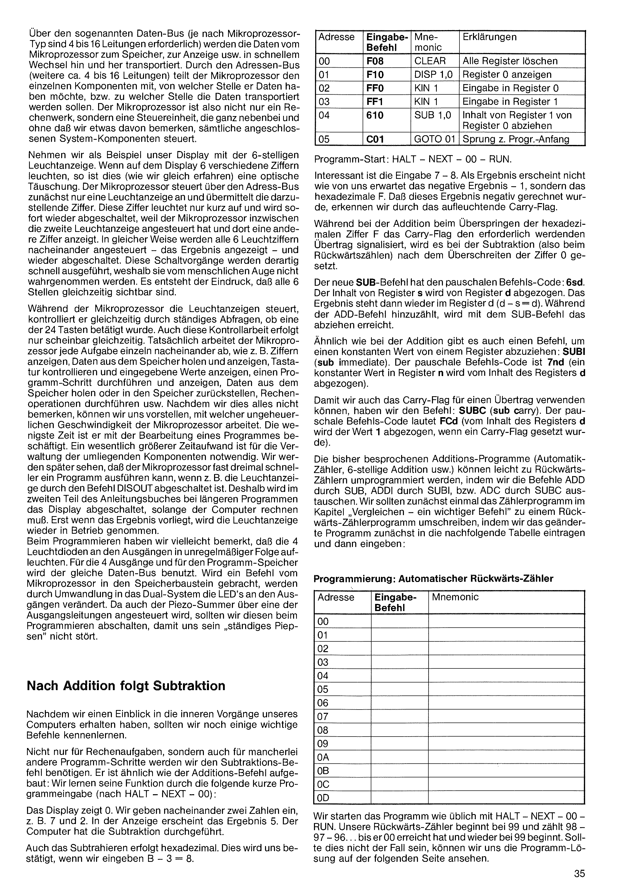
Via the so-called data bus (4 to 16 wires depending on microprocessor type) data is shuttled rapidly back and forth between the microprocessor, memory, display, etc. Via the address bus (another 4–16 wires) the microprocessor tells the individual components from where it wants data, or to where data should be transported. The microprocessor is therefore not just an arithmetic unit but a control unit, which behind the scenes manages all connected system components without us noticing.
Take our 6-digit LED display. When 6 different digits glow on the display, this is (as we'll see) an optical illusion. The microprocessor uses the address bus to drive one LED position at a time and sends it the digit to show. That digit lights briefly and is switched off because the microprocessor has meanwhile addressed the second display position and shown a different digit there. In this way all 6 LED digits are driven one after another. These switching events happen so fast that the human eye can't see them, giving the impression that all 6 digits are visible simultaneously.
While driving the display, the microprocessor is at the same time continuously polling whether one of the 24 keys has been pressed. This polling also only appears simultaneous. The microprocessor really does each task individually one after another: show digits, fetch and display data from memory, poll the keyboard and show entered values, execute and display a program step, fetch from / store to memory, perform arithmetic, and so on. Since we don't notice this, we can imagine the staggering speed at which the microprocessor works. The least of its time is spent on processing a program. Much more time is needed to manage the surrounding components. We'll see later that the microprocessor can execute a program almost 3× faster if e.g. the display is switched off via the DISOUT command. That's why in part 2 of the book the display is switched off during longer calculations and only switched back on when a result is ready.
When programming you may have noticed that the 4 output LEDs flicker in irregular patterns. The 4 outputs and the program memory share the same data bus. When a command is moved from microprocessor to memory, conversion into the binary system changes the LEDs at the outputs. Since the piezo buzzer is also driven via one of the output lines, switch it off while programming so its constant beeping doesn't bother us.
After addition comes subtraction
Now that we've had a peek inside our computer, we should learn a few more important commands.
Not just for arithmetic but for many other program steps we'll need the subtraction command. It's built much like the addition command. Learn its function by entering the following short program (after HALT – NEXT – 00):
The display shows 0. Enter two numbers in sequence, e.g. 7 and 2. The result 5 appears. The computer performed the subtraction.
Subtraction is also performed in hex. Confirmed by entering B − 3 = 8.
| Addr | Code | Mnem. | Explanation |
|---|---|---|---|
| 00 | F08 | CLEAR | clear all registers |
| 01 | F10 | DISP 1,0 | display register 0 |
| 02 | FF0 | KIN 0 | enter into register 0 |
| 03 | FF1 | KIN 1 | enter into register 1 |
| 04 | 610 | SUB 1,0 | subtract register 1 from register 0 |
| 05 | C01 | GOTO 01 | jump to program start |
Start with HALT – NEXT – 00 – RUN.
Interesting is the input 7 − 8. Instead of the negative result −1, the result is hex F. The result is negative — we see this by the lit Carry-Flag.
While in addition the Carry-Flag signals an overflow past hex F, in subtraction (i.e. counting backwards) it's set after crossing 0.
The new SUB command has the general code: 6sd. Register s is subtracted from register d. The result lives in register d (d − s = d). Where ADD adds, SUB subtracts.
Like addition, there's also a command to subtract a constant: SUBI (sub immediate). General code 7nd (a constant value n is subtracted from register d).
To use the Carry-Flag for a borrow, we have: SUBC (sub carry). General code FCd (value 1 is subtracted from register d when the Carry-Flag is set).
The addition programs we've covered (auto-counter, 6-digit addition, etc.) can easily be reprogrammed into backwards counters by replacing ADD with SUB, ADDI with SUBI, and ADC with SUBC. First, let's rewrite the counter program from the "Compare — an important command" chapter into a backwards counter, entering the modified program into the table below:
| Addr | Code | Mnem. |
|---|---|---|
| 00 | ||
| 01 | ||
| 02 | ||
| 03 | ||
| 04 | ||
| 05 | ||
| 06 | ||
| 07 | ||
| 08 | ||
| 09 | ||
| 0A | ||
| 0B | ||
| 0C | ||
| 0D |
Start the program as usual with HALT – NEXT – 00 – RUN. The backwards counter starts at 99 and counts 98, 97, 96 … until it reaches 00 and restarts at 99. If it doesn't work, the program solution is on the next page.
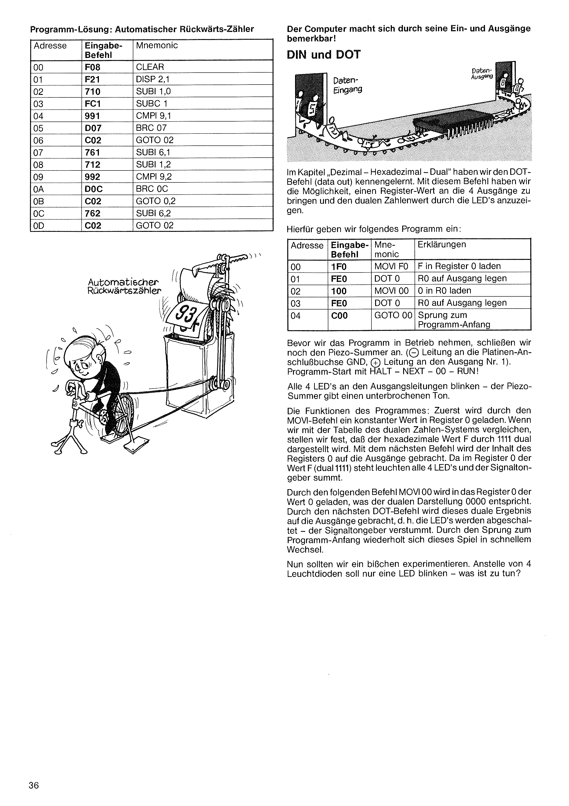
In the chapter "Decimal — Hexadecimal — Binary" we met the DOT command (data out). This lets us send a register value to the 4 outputs and display its binary representation via the LEDs.
Enter the following program:
| Addr | Code | Mnem. | Explanation |
|---|---|---|---|
| 00 | 1F0 | MOVI F,0 | load F into register 0 |
| 01 | FE0 | DOT 0 | send R0 to outputs |
| 02 | 100 | MOVI 0,0 | load 0 into R0 |
| 03 | FE0 | DOT 0 | send R0 to outputs |
| 04 | C00 | GOTO 00 | jump to program start |
Before running, connect the piezo buzzer (− wire to GND on the board, + wire to output 1). Start with HALT – NEXT – 00 – RUN!
All 4 output LEDs blink — the piezo buzzer emits an interrupted tone.
How the program works: first MOVI loads the constant F into register 0. From the binary table we see hex F = binary 1111. The next command moves register 0's contents to the outputs. Since register 0 is F (1111), all 4 LEDs light and the buzzer sounds.
Then MOVI 0,0 loads 0 (binary 0000) into register 0. The next DOT sends 0000 to the outputs — LEDs off, buzzer silent. The jump to program start repeats this cycle rapidly.
Let's experiment a bit. Instead of 4 LEDs we want only one to blink — what do we do?
| Addr | Code | Mnem. |
|---|---|---|
| 00 | F08 | CLEAR |
| 01 | F21 | DISP 2,1 |
| 02 | 710 | SUBI 1,0 |
| 03 | FC1 | SUBC 1 |
| 04 | 991 | CMPI 9,1 |
| 05 | D07 | BRC 07 |
| 06 | C02 | GOTO 02 |
| 07 | 761 | SUBI 6,1 |
| 08 | 712 | SUBI 1,2 |
| 09 | 992 | CMPI 9,2 |
| 0A | D0C | BRC 0C |
| 0B | C02 | GOTO 02 |
| 0C | 762 | SUBI 6,2 |
| 0D | C02 | GOTO 02 |
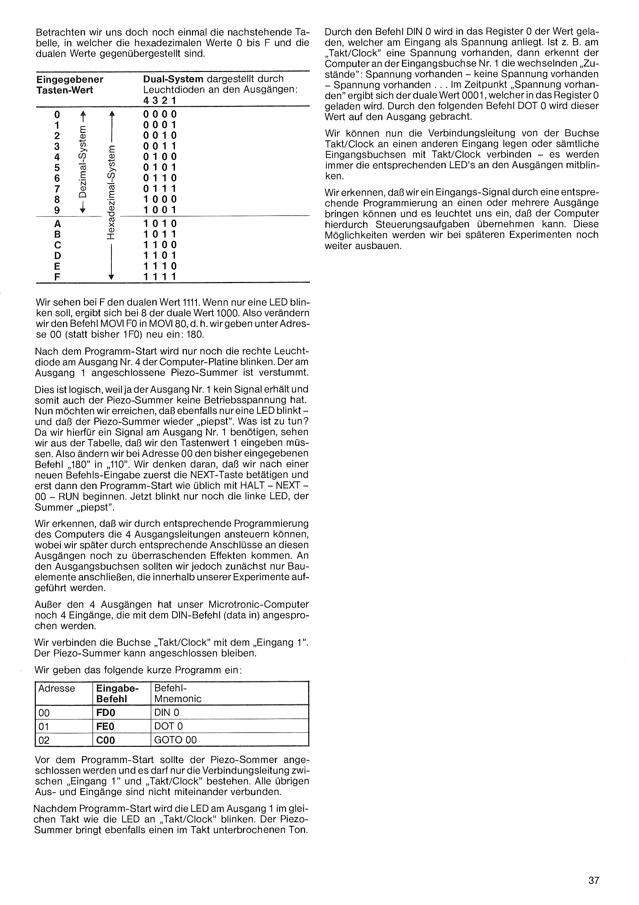
The DIN 0 command loads the value present as voltage on the input into register 0. If e.g. "Takt/Clock" is feeding a voltage, the computer sees alternating states at input 1: voltage present – no voltage – voltage present … When voltage is present we get binary 0001, which is loaded into register 0. The next DOT 0 sends that value to the outputs.
We can move the wire from Takt/Clock to a different input, or connect all 4 input sockets to Takt/Clock — the corresponding output LEDs will always blink along.
We see that an input signal can, via suitable programming, be routed to one or more outputs — so the computer can take on control tasks. We'll expand on this in later experiments.
Let's once more look at the table below, in which the hex values 0 – F and the corresponding binary values are juxtaposed.
| Entered key value | 4 | 3 | 2 | 1 |
|---|---|---|---|---|
| 0 | 0 | 0 | 0 | 0 |
| 1 | 0 | 0 | 0 | 1 |
| 2 | 0 | 0 | 1 | 0 |
| 3 | 0 | 0 | 1 | 1 |
| 4 | 0 | 1 | 0 | 0 |
| 5 | 0 | 1 | 0 | 1 |
| 6 | 0 | 1 | 1 | 0 |
| 7 | 0 | 1 | 1 | 1 |
| 8 | 1 | 0 | 0 | 0 |
| 9 | 1 | 0 | 0 | 1 |
| A | 1 | 0 | 1 | 0 |
| B | 1 | 0 | 1 | 1 |
| C | 1 | 1 | 0 | 0 |
| D | 1 | 1 | 0 | 1 |
| E | 1 | 1 | 1 | 0 |
| F | 1 | 1 | 1 | 1 |
We see at F the binary value 1111. To make only one LED blink, we want binary 1000 — i.e. 8. So change MOVI F,0 to MOVI 8,0: enter at address 00 the new code 180 (instead of 1F0).
After program start only the rightmost LED at output 4 of the board blinks. The piezo buzzer (connected at output 1) is silent — output 1 receives no signal, so the buzzer has no voltage.
Now we want again only one LED to blink, but with the buzzer beeping. We need a signal at output 1, so the table tells us we need key value 1. Change address 00 from 180 to 110. Remember: press NEXT after the new command, then start as usual with HALT – NEXT – 00 – RUN. Now only the leftmost LED blinks and the buzzer beeps.
We can drive the 4 output lines via suitable programming, and later — with appropriate connections — we'll get surprising effects. But at first, only connect components that appear in our experiments.
In addition to the 4 outputs, the Microtronic also has 4 inputs, addressed via the DIN command (data in).
Connect Takt/Clock to Input 1. Leave the buzzer connected.
Enter this short program:
| Addr | Code | Mnem. |
|---|---|---|
| 00 | FD0 | DIN 0 |
| 01 | FE0 | DOT 0 |
| 02 | C00 | GOTO 00 |
Before starting, the buzzer should be connected and only the wire from Input 1 to Takt/Clock should be there. All other inputs/outputs are unconnected.
After starting, the LED at output 1 blinks in the same rhythm as the Takt/Clock LED. The buzzer emits a tone that's interrupted in the same rhythm.
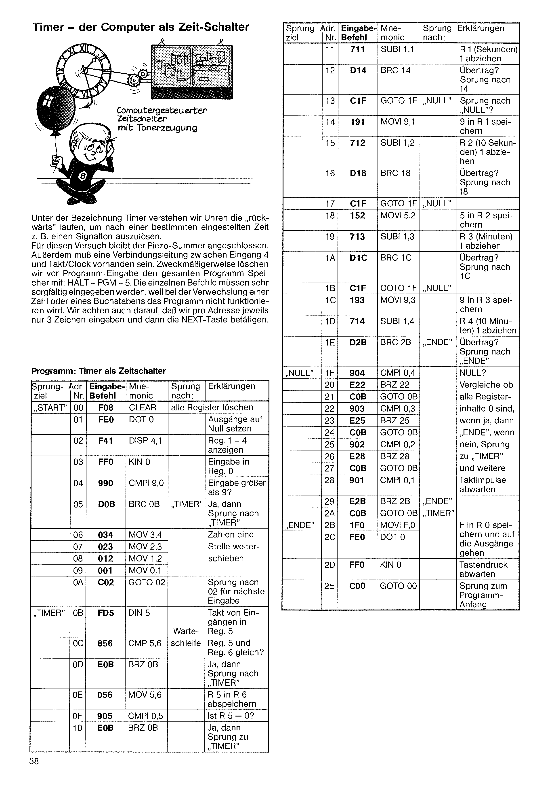
A timer is a clock that runs backwards to trigger e.g. a signal tone after a set time has elapsed. For this experiment leave the piezo buzzer connected. There must also be a wire between Input 4 and Takt/Clock. Best to clear the entire program memory before entering with: HALT – PGM – 5. Each command must be entered very carefully — swapping a digit or letter will break the program. Note: only 3 characters per address, then press NEXT.
| Label | Addr | Code | Mnem. | Jump to | Explanation |
|---|---|---|---|---|---|
| START | 00 | F08 | CLEAR | clear all registers | |
| 01 | FE0 | DOT 0 | set outputs to zero | ||
| 02 | F41 | DISP 4,1 | show Reg. 1–4 | ||
| 03 | FF0 | KIN 0 | input into Reg. 0 | ||
| 04 | 990 | CMPI 9,0 | input greater than 9? | ||
| 05 | D0B | BRC 0B | TIMER | yes — then jump to “TIMER” | |
| 06 | 034 | MOV 3,4 | shift the digits one place to the left | ||
| 07 | 023 | MOV 2,3 | |||
| 08 | 012 | MOV 1,2 | |||
| 09 | 001 | MOV 0,1 | |||
| 0A | C02 | GOTO 02 | jump to 02 for the next input | ||
| TIMER | 0B | FD5 | DIN 5 | wait loop | take clock from the inputs into Reg. 5 |
| 0C | 856 | CMP 5,6 | Reg. 5 and Reg. 6 equal? | ||
| 0D | E0B | BRZ 0B | yes — then jump to “TIMER” | ||
| 0E | 056 | MOV 5,6 | store R 5 in R 6 | ||
| 0F | 905 | CMPI 0,5 | Is R 5 = 0? | ||
| 10 | E0B | BRZ 0B | yes — then jump to “TIMER” |
| Label | Addr | Code | Mnem. | Jump to | Explanation |
|---|---|---|---|---|---|
| 11 | 711 | SUBI 1,1 | subtract 1 from R 1 (seconds) | ||
| 12 | D14 | BRC 14 | carry? jump to 14 | ||
| 13 | C1F | GOTO 1F | NULL | jump to “NULL”? | |
| 14 | 191 | MOVI 9,1 | store 9 in R 1 | ||
| 15 | 712 | SUBI 1,2 | subtract 1 from R 2 (tens of seconds) | ||
| 16 | D18 | BRC 18 | carry? jump to 18 | ||
| 17 | C1F | GOTO 1F | NULL | ||
| 18 | 152 | MOVI 5,2 | store 5 in R 2 | ||
| 19 | 713 | SUBI 1,3 | subtract 1 from R 3 (minutes) | ||
| 1A | D1C | BRC 1C | carry? jump to 1C | ||
| 1B | C1F | GOTO 1F | NULL | ||
| 1C | 193 | MOVI 9,3 | store 9 in R 3 | ||
| 1D | 714 | SUBI 1,4 | subtract 1 from R 4 (tens of minutes) | ||
| 1E | D2B | BRC 2B | ENDE | carry? jump to “ENDE” | |
| NULL | 1F | 904 | CMPI 0,4 | zero? | |
| 20 | E22 | BRZ 22 | Check whether all register contents are 0: if yes → “ENDE”; if no, jump to “TIMER” and wait for further clock pulses | ||
| 21 | C0B | GOTO 0B | |||
| 22 | 903 | CMPI 0,3 | |||
| 23 | E25 | BRZ 25 | |||
| 24 | C0B | GOTO 0B | |||
| 25 | 902 | CMPI 0,2 | |||
| 26 | E28 | BRZ 28 | |||
| 27 | C0B | GOTO 0B | |||
| 28 | 901 | CMPI 0,1 | |||
| 29 | E2B | BRZ 2B | ENDE | ||
| 2A | C0B | GOTO 0B | TIMER | ||
| ENDE | 2B | 1F0 | MOVI F,0 | store F in R 0 and send to the outputs | |
| 2C | FE0 | DOT 0 | |||
| 2D | FF0 | KIN 0 | wait for a key press | ||
| 2E | C00 | GOTO 00 | jump to the start of the program |
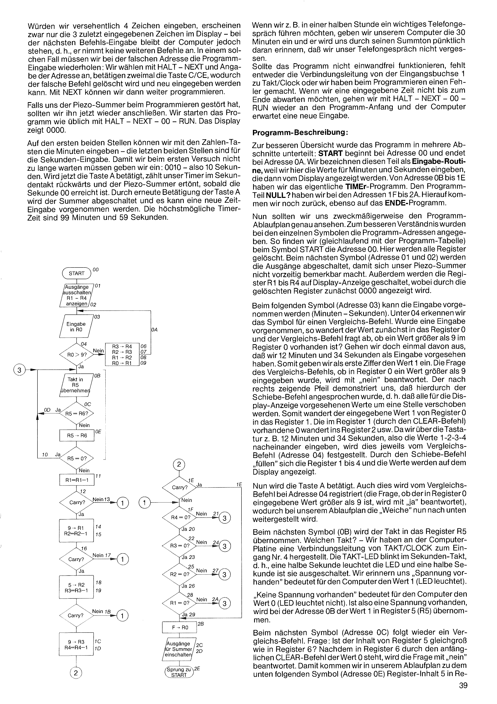
If, say, we have an important phone call in half an hour, we enter 30 minutes into the computer and its buzzer will remind us punctually so we don't forget the call. If the program doesn't work, either the wire from Input 1 to Takt/Clock is missing or we made a programming error. To abort a started time before it ends, go to the program start with HALT – NEXT – 00 – RUN and the computer awaits a new input.
Program description:
For clarity the program is split into several sections: START begins at address 00 and ends at address 0A — we call this the input routine, since we enter the minutes and seconds here and they're shown on the display. Addresses 0B to 1E are the actual TIMER program. Addresses 1F to 2A hold the "NULL?" sub-routine. We'll come back to it, as well as the END program.
Now look at the flow chart carefully. For better understanding the program addresses are noted next to each symbol. Following the program table, at the START symbol we find address 00 — here all registers are cleared. At the next symbol (addresses 01 and 02) the outputs are switched off so the buzzer doesn't sound prematurely. Also, registers R1 to R4 are switched to display output — initially showing 0000 because the registers are cleared.
At the next symbol (address 03) input can take place (minutes – seconds). At 04 we recognise a compare command. After an input, the value first lands in register 0 and the compare asks: is the value in register 0 greater than 9? Suppose we plan to enter 12 minutes and 34 seconds. First digit is 1 — the compare answers "no". The right-pointing arrow shows that the shift command is triggered: all display registers shift one position. The entered value 1 moves from register 0 into register 1. The 0 previously in register 1 moves to register 2, etc. Entering 1-2-3-4 successively, the compare at address 04 detects each entry and the shift command fills registers 1 to 4, displaying the values.
Then we press A. The compare at address 04 sees this (the value in register 0 is greater than 9 — answer "yes"), so the "switch" in our flow chart routes downward.
At the next symbol (0B) the clock pulse is taken into register R5. Which pulse? We have a wire from TAKT/CLOCK to Input 4 on the board. The TAKT LED blinks once per second — half a second on, half off. Recall: "voltage present" = value 1 (LED on); "no voltage" = value 0 (LED off). So when voltage is present, address 0B copies value 1 into R5.
At the next symbol (0C) another compare: is the content of R5 equal to that of R6? Since the initial CLEAR put 0 in R6, the answer is "no". We then go in the flow chart to the symbol below (address 0E): contents of R5 are
If we accidentally enter 4 characters, only the last 3 entered appear on the display — but at the next command entry the computer stops responding to further commands. In that case, redo the program entry at the bad address: select HALT – NEXT – [address], press C/CE twice to erase the wrong command, then enter the correct command and continue with NEXT.
If the piezo buzzer bothered us during programming, reconnect it now. Start the program as usual with HALT – NEXT – 00 – RUN. The display shows 0000.
The leftmost two positions take the minutes, the rightmost two take the seconds. For a quick first try, enter 0010 — 10 seconds. Press A and the timer counts down each second; the piezo buzzer sounds when 00 is reached. Pressing A again silences the buzzer and a new time can be entered. Maximum timer setting: 99 minutes 59 seconds.
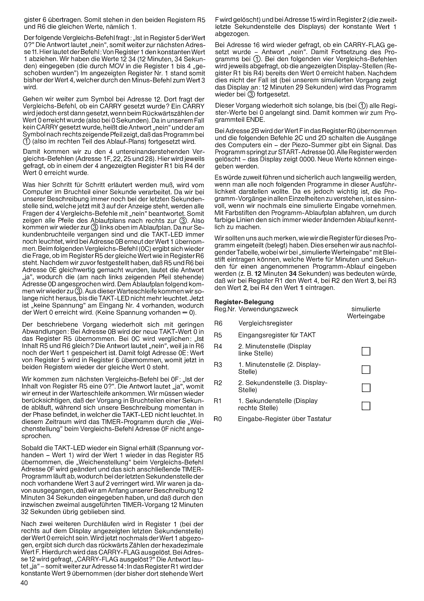
is cleared) and at address 15 the constant value 1 is subtracted in register 2 (the second-to-last seconds digit of the display).
At address 16 the question is asked again whether a CARRY FLAG was set — answer "no". So the program continues at ①. In the following four compare commands, each asks whether the displayed digits (registers R1 to R4) have already reached the value 0. Since this is not the case (in our simulated run the display shows 12 minutes 29 seconds), the program continues again at ②.
This process repeats until (at ①) all register values have reached 0. This brings us to the program section END.
At address 2B the value F is taken into register R0, and the following commands 2C and 2D switch on the computer's outputs — the piezo buzzer gives a signal. The program jumps to the START address 00. All registers are cleared — the display shows 0000. New values can be entered.
It would go too far — and certainly become tedious — to present every remaining program in this much detail. But since it is important to understand the program steps in full, it makes sense to do one more simulated input. Trace the program flow chart with coloured pencils, marking the ever-changing path with coloured lines.
We should also note how we divided up (assigned) the registers for this program. This is shown in the table below, where under "simulated value input" we can pencil in which values for minutes and seconds would be entered for an assumed program run (e.g. 12 minutes 34 seconds) — which would mean entering the value 4 in register R1, 3 in R2, 2 in R3 and 1 in R4.
Register assignment
| Reg. | Purpose | Simulated value |
|---|---|---|
| R6 | comparison register | |
| R5 | input register for CLOCK | |
| R4 | 2nd minutes digit (display, left position) | ▢ |
| R3 | 1st minutes digit (2nd display position) | ▢ |
| R2 | 2nd seconds digit (3rd display position) | ▢ |
| R1 | 1st seconds digit (display, right position) | ▢ |
| R0 | input register (via keyboard) |
transferred into register 6. Both registers R5 and R6 now hold the same value, namely 1.
The next compare command asks: "Is the value in register 5 zero?" The answer is "no", so we move on to the next address, 11. Here the command is: subtract the constant 1 from register 1. We entered the values 12 34 (12 minutes, 34 seconds), which were "shifted" by MOV into registers 1 to 4. The displayed register 1 therefore held the value 4, which the subtract command turns into 3.
Let's go on to the symbol at address 12. There the compare command asks whether a CARRY was set. A CARRY is only set when the down-count reaches the value 0 (i.e. at 0 seconds). Since in our case no CARRY was set, the answer is "no", and the arrow pointing right at the symbol shows that the program continues at ① (i.e. in the right-hand part of the flow chart).
This brings us to the four compare commands stacked one below another (addresses 1F, 22, 25 and 28). Each asks whether one of the four displayed registers R1 to R4 has reached the value 0.
What has to be explained here step by step is processed by the computer in a fraction of a second. Since our description is still at the last seconds digit — which now shows 3 — all four compare questions are answered "no". So all the flow-chart arrows point right to ①. Thus we arrive again at ② at the top left of the flow chart. As only fractions of a second have passed and the CLOCK LED is still lit, address 0B again takes in the value 1. The next compare command (0C) again asks whether register R5 holds the same value as register R6. Since we established earlier that R5 and R6 were made equal at address 0E, the answer is "yes", which calls address 0D (at the left-pointing arrow). Following the flow chart we arrive again at ②. We do not leave this wait loop until the CLOCK LED is no longer lit. Now there is "no voltage" at input 4, so the value 0 is reached. (No voltage present = 0.)
The process just described repeats with slight variations: at address 0B the new CLOCK value 0 is taken into register R5. At 0C the comparison is made: "Is the content of R5 and R6 equal?" The answer is "no", because R6 still holds the value 1. So address 0E follows: the value of register 5 is taken into register 6, so both registers again hold the same value 0.
We come to the next compare command at 0F: "Is the content of register R5 a 0?" The answer is "yes", so we arrive back in the wait loop. Again we must remember that the process runs in fractions of a second, while our description is currently in the phase in which the CLOCK LED is not lit. During this period the TIMER program is not invoked, because of the "switch setting" at compare command address 0F.
As soon as the CLOCK LED receives a signal again (voltage present — value 1), the value 1 is taken into register R5 once more, the "switch setting" at compare command address 0F is changed, and the following TIMER program runs, reducing the still-present value 3 at the last seconds digit to 2. Recall that we assumed we entered 12 minutes 34 seconds at the start, and that the TIMER process, now carried out twice, has left 12 minutes 32 seconds.
After two more passes, register 1 (the last seconds digit shown at the right of the display) will reach the value 0. If the value 1 is now subtracted once more, counting backwards gives the hexadecimal value F. This triggers the CARRY FLAG. At address 12 the question is "CARRY FLAG triggered?" The answer is "yes" — so on to address 14: the constant value 9 is taken into register R1 (the value F previously there…)
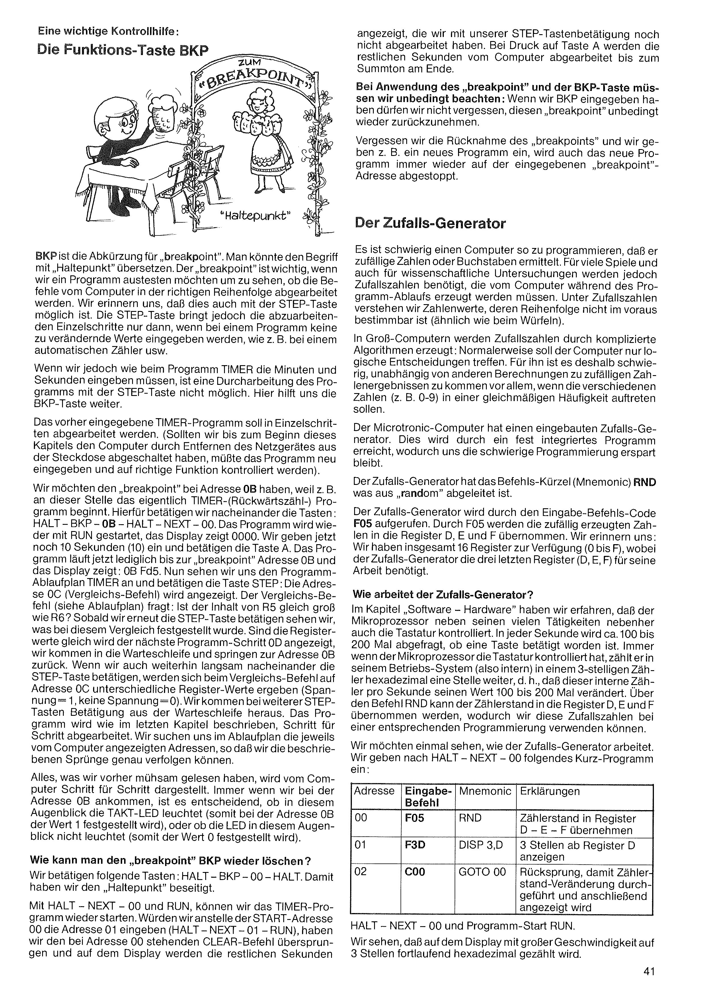
which we have not yet processed with our STEP key presses. Pressing key A makes the computer process the remaining seconds up to the buzzer tone at the end.
When using the "breakpoint" and the BKP key we must absolutely remember: once we have entered BKP, we must not forget to cancel this "breakpoint" again.
If we forget to cancel the "breakpoint" and, say, enter a new program, the new program too will keep being stopped at the entered "breakpoint" address.
The random generator
It is difficult to program a computer so that it produces random numbers or letters. Yet for many games, and also for scientific investigations, random numbers are needed that the computer must generate during the program run. By random numbers we mean numeric values whose sequence cannot be determined in advance (similar to throwing dice).
In large computers, random numbers are generated by complicated algorithms: normally the computer is only meant to make logical decisions. It is therefore difficult for it to arrive at random numeric results independently of other calculations — especially when the various numbers (e.g. 0–9) should occur with equal frequency.
The Microtronic computer has a built-in random generator. This is achieved by a permanently integrated program, which spares us the difficult programming.
The random generator has the command mnemonic RND, derived from "random".
The random generator is called by the entry code F05. Through F05 the randomly generated numbers are taken into registers D, E and F. Recall: we have a total of 16 registers available (0 to F), of which the random generator needs the last three (D, E, F) for its work.
How does the random generator work?
In the chapter "Software – Hardware" we learned that the microprocessor, besides its many activities, also monitors the keyboard. About 100 to 200 times per second it checks whether a key has been pressed. Each time the microprocessor has checked the keyboard, it counts one step further (in hexadecimal) in a 3-digit counter within its operating system (i.e. internally) — meaning this internal counter changes its value 100 to 200 times per second. Via the RND command the counter value can be taken into registers D, E and F, letting us use these random numbers with suitable programming.
Let's see how the random generator works. After HALT – NEXT – 00 we enter the following short program:
| Addr | Code | Mnem. | Explanation |
|---|---|---|---|
| 00 | F05 | RND | take the counter value into registers D – E – F |
| 01 | F3D | DISP 3,D | show 3 digits starting at register D |
| 02 | C00 | GOTO 00 | jump back, so the counter change is carried out and then shown |
HALT – NEXT – 00 and program start RUN.
We see the display counting continuously in hexadecimal on 3 digits at high speed.
BKP is the abbreviation for "breakpoint". The term could be rendered as "stopping point". The breakpoint is useful when we want to test a program to see whether the computer executes the commands in the right order. Recall that this is also possible with the STEP key. However, the STEP key only steps through the individual commands when a program takes no values that change — as with an automatic counter, etc.
But when, as in the TIMER program, we have to enter minutes and seconds, working through the program with the STEP key isn't possible. Here the BKP key helps.
The TIMER program entered earlier is to be worked through step by step. (If we switched the computer off by unplugging the power supply since the start of this chapter, the program would have to be re-entered and checked for correct operation.)
We want the breakpoint at address 0B, because, for example, the actual TIMER (down-counting) program begins there. For this we press, one after another, the keys: HALT – BKP – 0B – HALT – NEXT – 00. The program is started again with RUN; the display shows 0000. We now also enter 10 seconds (10) and press key A. The program now runs only up to the breakpoint address 0B and the display shows: 0B Fd5. Now we look at the TIMER flow chart and press STEP: address 0C (compare command) is shown. The compare command (see flow chart) asks: is the content of R5 equal to R6? As soon as we press STEP again we see what this comparison found. If the register values are equal, the next program step 0D is shown, we enter the wait loop and jump back to address 0B. If we keep pressing STEP slowly, the compare command at address 0C will yield different register values (voltage = 1, no voltage = 0). With further STEP presses we leave the wait loop. The program is worked through step by step, as described in the last chapter. We locate in the flow chart the addresses the computer shows each time, so we can follow the described jumps exactly.
Everything we laboriously read earlier is now shown step by step by the computer. Whenever we reach address 0B, it is decisive whether the CLOCK LED is lit at that moment (so the value 1 is detected at address 0B), or whether the LED is not lit at that moment (so the value 0 is detected).
How can the breakpoint BKP be cleared again?
We press the following keys: HALT – BKP – 00 – HALT. This removes the "stopping point".
With HALT – NEXT – 00 and RUN we can restart the TIMER program. If instead of the START address 00 we entered address 01 (HALT – NEXT – 01 – RUN), we would have skipped the CLEAR command at address 00, and the remaining seconds would be shown on the display,
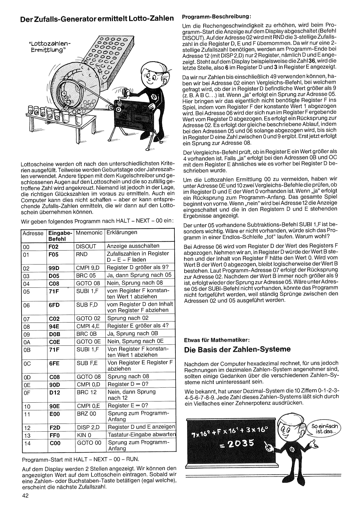
To increase the calculation speed, the display is switched off at program start (command DISOUT). At address 01, RND takes the 3-digit random number into registers D, E and F. Since we only need a 2-digit random number, at the end of the program (address 12, with DISP 2,D) only 2 registers are shown, namely D and E. If the display shows, say, the number 36, the last digit — 6 — is shown in register D and 3 in register E.
Since we may only use numbers up to and including 49, at address 02 we have a compare command asking whether the value in register D is greater than 9 (e.g. A, B, C…). If "yes", a jump to address 05 follows. There we bring the actually-unneeded register F into play, by subtracting the constant 1 from it. At address 06 the value now in register F is subtracted from register D. A jump back to address 02 follows. The same sequence runs: at addresses 05 and 06 the subtraction repeats until register D holds a number between 0 and 9. Only then does a jump to address 08 follow.
The compare command checks whether register E holds a value greater than 4. If "yes", at addresses 0B and 0C something similar happens with register E as was described earlier for register D.
To avoid the lottery number 00, at addresses 0E and 10 we have two compare commands that check whether the value 0 is present in registers D and E. If "yes", a jump back to the program start follows and the whole game begins again. If "no", at address 12 the display is switched on and the results held in registers D and E are shown.
The subtract command SUBI 1,F at address 05 is especially important. Without it, the program would run itself "dead" in an endless loop. Why?
At address 06 the value of register F is subtracted from register D. Suppose register D held the value B and register F the value 0. If 0 is subtracted from B, B logically remains. According to program address 07, a jump back to address 02 follows. Since the value B is still greater than 9, a jump to address 05 follows again. If the SUBI command at address 05 were missing, the program could not continue, because jumps would constantly be made between addresses 02 and 05.
Lottery tickets are often filled in by the most varied criteria. Some use birthdays or years. Others tap the ticket with a ballpoint pen and closed eyes, and the number thus randomly hit is marked. But no one is able to determine the right lucky numbers in advance. A computer can't manage that either — but it can produce suitable random numbers, which we can then transfer onto the lottery ticket.
We enter the following program after HALT – NEXT – 00:
| Addr | Code | Mnem. | Explanation |
|---|---|---|---|
| 00 | F02 | DISOUT | switch the display off |
| 01 | F05 | RND | load random numbers into registers D – E – F |
| 02 | 99D | CMPI 9,D | register D greater than 9? |
| 03 | D05 | BRC 05 | yes → jump to 05 |
| 04 | C08 | GOTO 08 | no → jump to 08 |
| 05 | 71F | SUBI 1,F | subtract the constant 1 from register F |
| 06 | 6FD | SUB F,D | subtract the content of register F from register D |
| 07 | C02 | GOTO 02 | jump to 02 |
| 08 | 94E | CMPI 4,E | register E greater than 4? |
| 09 | D0B | BRC 0B | yes → jump to 0B |
| 0A | C0E | GOTO 0E | no → jump to 0E |
| 0B | 71F | SUBI 1,F | subtract the constant 1 from register F |
| 0C | 6FE | SUB F,E | subtract register F from register E |
| 0D | C08 | GOTO 08 | jump to 08 |
| 0E | 90D | CMPI 0,D | register D = 0? |
| 0F | D12 | BRC 12 | no → jump to 12 |
| 10 | 90E | CMPI 0,E | register E = 0? |
| 11 | E00 | BRZ 00 | jump to program start |
| 12 | F2D | DISP 2,D | show registers D and E |
| 13 | FF0 | KIN 0 | wait for keyboard input |
| 14 | C00 | GOTO 00 | jump to program start |
Program start with HALT – NEXT – 00 – RUN.
Two digits are shown on the display. We can write the displayed value onto the lottery ticket. As soon as we press a number or letter key (any one), the next random number appears.
Something for mathematicians: the base of number systems
Since the computer calculates in hexadecimal, while calculations in the decimal number system are more comfortable for us, a few thoughts about the various number systems should not be uninteresting. As is well known, our decimal system has the 10 digits 0-1-2-3-4-5-6-7-8-9. Every number of this system can be expressed as a multiple of a power of ten.
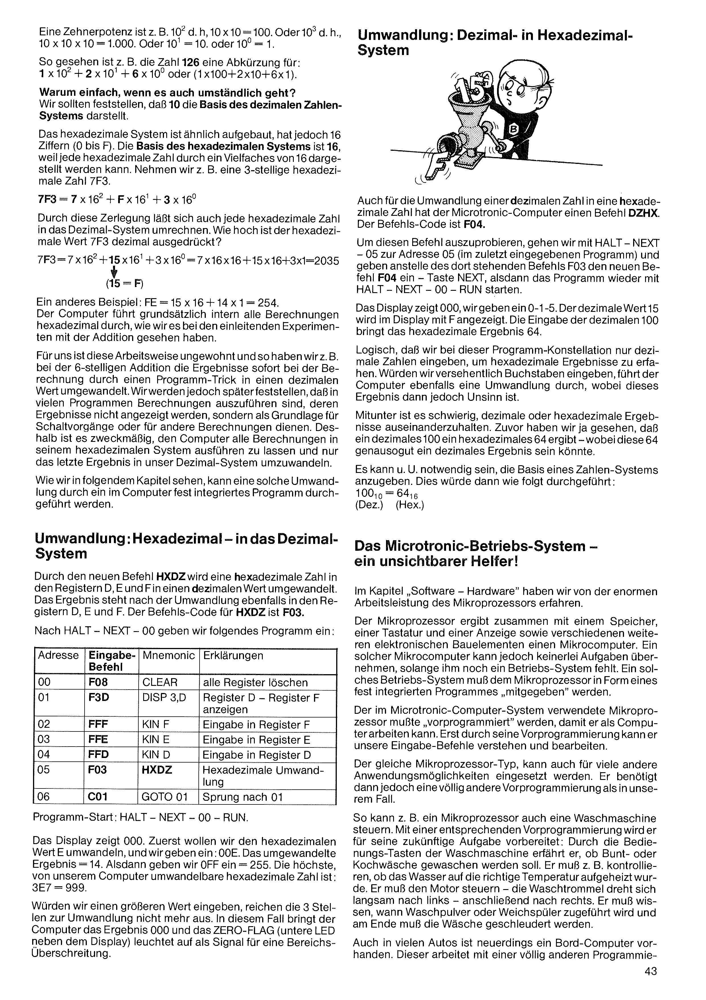
Why do it the simple way when the complicated way works too? We should note that 10 is the base of the decimal number system.
The hexadecimal system is built similarly, but has 16 digits (0 to F). The base of the hexadecimal system is 16, because every hexadecimal number can be represented as a multiple of 16. Take, for example, a 3-digit hexadecimal number 7F3.
7F3 = 7 × 162 + F × 161 + 3 × 160
By this decomposition, every hexadecimal number can also be converted into the decimal system. How large is the hexadecimal value 7F3 expressed in decimal?
7F3 = 7 × 162 + 15 × 161 + 3 × 160 = 7×16×16 + 15×16 + 3×1 = 2035 (15 = F)
Another example: FE = 15 × 16 + 14 × 1 = 254. The computer fundamentally carries out all internal calculations in hexadecimal, as we saw in the introductory experiments with addition.
For us this way of working is unfamiliar, so, for example, in the 6-digit addition we converted the results into a decimal value immediately during the calculation, by a programming trick. But we will see later that in many programs calculations must be carried out whose results are not displayed, but serve as the basis for switching operations or for other calculations. It is therefore practical to let the computer carry out all calculations in its hexadecimal system and only convert the final result into our decimal system.
As we will see in the following chapter, such a conversion can be carried out by a program permanently integrated into the computer.
Conversion: Hexadecimal to the Decimal System
With the new command HXDZ, a hexadecimal number in registers D, E and F is converted into a decimal value.
After the conversion, the result is likewise in registers D, E and F. The command code for HXDZ is F03.
After HALT – NEXT – 00 we enter the following program:
| Addr | Code | Mnem. | Explanation |
|---|---|---|---|
| 00 | F08 | CLEAR | clear all registers |
| 01 | F3D | DISP 3,D | show register D – register F |
| 02 | FFF | KIN F | input into register F |
| 03 | FFE | KIN E | input into register E |
| 04 | FFD | KIN D | input into register D |
| 05 | F03 | HXDZ | hexadecimal conversion |
| 06 | C01 | GOTO 01 | jump to 01 |
Program start: HALT – NEXT – 00 – RUN.
The display shows 000. First we want to convert the hexadecimal value E, and we enter: 00E. The converted result = 14. Then we enter 0FF = 255. The highest hexadecimal number our computer can convert is: 3E7 = 999.
If we entered a larger value, the 3 digits would no longer be enough for the conversion. In that case the computer gives the result 000 and the ZERO FLAG (the lower LED next to the display) lights up as a signal for a range overflow.
For converting a decimal number into a hexadecimal number, too, the Microtronic computer has a command DZHX. The command code is F04.
To try this command, we go with HALT – NEXT – 05 to address 05 (in the program just entered) and, instead of the command F03 there, enter the new command F04 — key NEXT — then start the program again with HALT – NEXT – 00 – RUN.
The display shows 000; we enter 0-1-5. The decimal value 15 is shown on the display as F. Entering the decimal 100 gives the hexadecimal result 64.
It's logical that with this program setup we only enter decimal numbers in order to obtain hexadecimal results. If we accidentally entered letters, the computer would also perform a conversion, but the result would then be nonsense.
Sometimes it is difficult to tell decimal and hexadecimal results apart. We just saw that a decimal 100 gives a hexadecimal 64 — where this 64 could just as well be a decimal result.
It may sometimes be necessary to state the base of a number system. This would be done as follows: 10010 = 6416 (Dec.) (Hex.)
The Microtronic operating system — an invisible helper!
In the chapter "Software – Hardware" we learned about the enormous work the microprocessor performs.
Together with a memory, a keyboard and a display, as well as various other electronic components, the microprocessor makes up a microcomputer. But such a microcomputer cannot take on any tasks as long as it still lacks an operating system. Such an operating system must be "given" to the microprocessor in the form of a permanently integrated program.
The microprocessor used in the Microtronic computer system had to be "pre-programmed" so that it can work as a computer. Only through its pre-programming can it understand and process our entry commands.
The same type of microprocessor can also be used for many other applications. In that case, however, it needs completely different pre-programming than in our case.
For example, a microprocessor can also control a washing machine. With appropriate pre-programming it is prepared for its future task: through the washing machine's control keys it learns whether coloureds or a boil-wash are to be washed. It must, for example, check whether the water has been heated to the right temperature. It must control the motor — the drum turns slowly to the left, then to the right. It must know when detergent or fabric softener is added, and at the end the laundry must be spun.
Many cars, too, now have an on-board computer. This works with completely different programming.
A power of ten is, for example, 102 — i.e. 10 × 10 = 100. Or 103 — i.e. 10 × 10 × 10 = 1,000. Or 101 = 10, or 100 = 1.
Seen this way, the number 126 is, for example, shorthand for: 1 × 102 + 2 × 101 + 6 × 100, or (1 × 100 + 2 × 10 + 6 × 1).
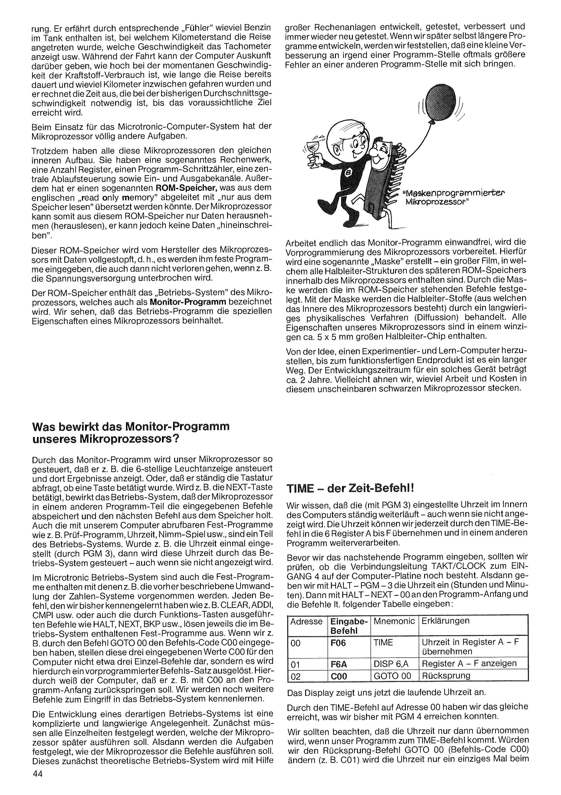
large computer installations, then tested, improved and tested anew again and again. When we later develop longer programs ourselves, we will find that a small improvement at one point in the program often brings larger errors at another point.
Through appropriate "sensors" it learns how much petrol is in the tank, at what mileage the journey began, what speed the speedometer shows, and so on. During the drive the computer can report how high the fuel consumption is at the current speed, how long the journey has already lasted and how many kilometres have been driven so far, and it works out the time needed — at the average speed so far — until the expected destination is reached.
When used in the Microtronic computer system, the microprocessor has completely different tasks.
Nevertheless, all these microprocessors have the same internal structure. They have a so-called arithmetic unit, a number of registers, a program step counter, a central control unit, and input and output channels. In addition it has a so-called ROM memory — derived from the English "read only memory", which could be translated as "only read from the memory". The microprocessor can therefore only take data out of (read from) this ROM memory; it cannot "write" any data into it.
This ROM memory is stuffed full of data by the maker of the microprocessor — i.e. fixed programs are entered into it that are not lost even if, say, the power supply is interrupted.
The ROM memory contains the "operating system" of the microprocessor, which is also called the monitor program. We see that the operating program embodies the special characteristics of a microprocessor.
Once the monitor program finally works flawlessly, the pre-programming of the microprocessor is prepared. For this a so-called "mask" is made — a large film containing all the semiconductor structures of the later ROM memory inside the microprocessor. The mask determines the commands held in the ROM memory. Using the mask, the semiconductor materials (of which the interior of the microprocessor consists) are treated by a lengthy physical process (diffusion). All the characteristics of our microprocessor are contained in a tiny semiconductor chip about 5×5 mm in size.
From the idea of making an experimentation-and-learning computer to the ready-to-use end product is a long road. The development period for such a device is about 2 years. Perhaps we can sense how much work and cost is hidden in this inconspicuous black microprocessor.
What does our microprocessor's monitor program do?
Through the monitor program our microprocessor is controlled so that, for example, it drives the 6-digit illuminated display and shows results there. Or so that it constantly polls the keyboard to check whether a key has been pressed. If, say, the NEXT key is pressed, the operating system causes the microprocessor to store the entered commands in another part of the program and fetch the next command from memory. The fixed programs callable with our computer — e.g. the test program, the time of day, the Nim game, etc. — are also part of the operating system. If, for example, the time has been set once (via PGM 3), then this time is controlled by the operating system — even when it is not displayed.
The Microtronic operating system also contains the fixed programs with which, for example, the number-system conversion described earlier is carried out. Every command we have met so far — e.g. CLEAR, ADDI, CMPI, etc. — or also the commands carried out by function keys such as HALT, NEXT, BKP, etc., each trigger the fixed programs held in the operating system. If, for example, we entered the command code C00 via the command GOTO 00, these three entered values C00 do not represent three individual commands for the computer; rather, they trigger a pre-programmed command set. Through this the computer knows that, e.g., with C00 it should jump back to the program start. We will meet further commands for intervening in the operating system.
The development of such an operating system is a complicated and lengthy matter. First, all the details of what the microprocessor is later to carry out must be defined. Then it is defined how the microprocessor is to execute the commands. This initially theoretical operating system is then, with the help of
TIME — the time command!
We know that the time set (via PGM 3) keeps running inside the computer — even when it is not displayed. We can take the time into the 6 registers A to F at any moment with the TIME command and process it further in another program.
Before we enter the program below, we should check whether the connecting wire from TAKT/CLOCK to INPUT 4 on the computer board still exists. Then we enter the time (hours and minutes) with HALT – PGM – 3. Then, with HALT – NEXT – 00, go to the program start and enter the commands per the following table:
| Addr | Code | Mnem. | Explanation |
|---|---|---|---|
| 00 | F06 | TIME | take the time into registers A–F |
| 01 | F6A | DISP 6,A | show registers A–F |
| 02 | C00 | GOTO 00 | jump back |
The display now shows us the running time.
With the TIME command at address 00 we have achieved the same thing we could previously achieve with PGM 4.
We should note that the time is only taken over when our program reaches the TIME command. If we changed the jump-back command GOTO 00 (command code C00) to, say, C01, the time would be taken over only once, at
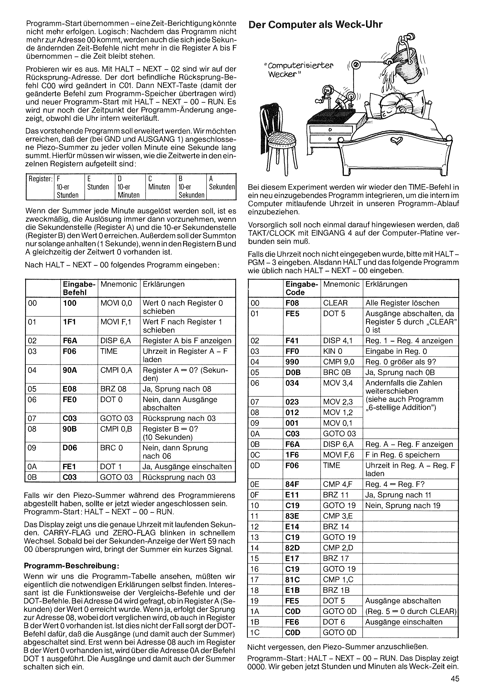
program start — a time correction could no longer take place. Logical: since the program no longer reaches address 00, the time commands that change every second are no longer taken into registers A to F — the time stops.
Let's try it out. With HALT – NEXT – 02 we are at the jump-back address. The jump-back command C00 there is changed to C01. Then the NEXT key (so the changed command is transferred to the program memory) and a new program start with HALT – NEXT – 00 – RUN. Now only the moment of the program change is shown, although the clock keeps running internally.
The above program is to be extended. We want the piezo buzzer (connected at GND and OUTPUT 1) to buzz for one second at every full minute. For this we need to know how the time values are held in the individual registers:
| Reg.: | F | E | D | C | B | A |
|---|---|---|---|---|---|---|
| 10s of hours | hours | 10s of min. | minutes | 10s of sec. | seconds |
If the buzzer is to be triggered every minute, it is practical to do the triggering whenever the seconds digit (register A) and the tens-of-seconds digit (register B) reach the value 0. In addition, the buzzer tone should last only as long (1 second) as the time value 0 is present in both registers B and A at the same time.
After HALT – NEXT – 00, enter the following program:
| Addr | Code | Mnem. | Explanation |
|---|---|---|---|
| 00 | 100 | MOVI 0,0 | move value 0 into register 0 |
| 01 | 1F1 | MOVI F,1 | move value F into register 1 |
| 02 | F6A | DISP 6,A | show registers A to F |
| 03 | F06 | TIME | load the time into registers A–F |
| 04 | 90A | CMPI 0,A | register A = 0? (seconds) |
| 05 | E08 | BRZ 08 | yes → jump to 08 |
| 06 | FE0 | DOT 0 | no → switch the outputs off |
| 07 | C03 | GOTO 03 | jump back to 03 |
| 08 | 90B | CMPI 0,B | register B = 0? (tens of seconds) |
| 09 | D06 | BRC 06 | no → jump to 06 |
| 0A | FE1 | DOT 1 | yes → switch the outputs on |
| 0B | C03 | GOTO 03 | jump back to 03 |
If we switched the piezo buzzer off during programming, it should now be reconnected. Program start: HALT – NEXT – 00 – RUN.
The display now shows us the exact time with running seconds. The CARRY FLAG and ZERO FLAG blink in rapid alternation. As soon as the seconds display jumps from 59 to 00, the buzzer gives a short signal.
Program description:
If we look at the program table, we should really be able to find the necessary explanations ourselves. What's interesting is how the compare commands and the DOT commands work. At address 04 the question is asked whether register A (seconds) has reached the value 0. If yes, the jump to address 08 follows, where it is compared whether register B also holds the value 0. If this is not the case, the DOT command ensures that the outputs (and thus the buzzer) are switched off. Only when register B also holds the value 0 at address 08 is the command DOT 1 carried out via address 0A — the outputs, and thus the buzzer, switch on.
In this experiment we will again integrate the TIME command into a newly entered program, in order to bring the time running internally in the computer into our program sequence.
As a precaution, it should be pointed out once more that TAKT/CLOCK must be connected to INPUT 4 on the computer board.
If the time has not yet been entered, please enter it with HALT – PGM – 3. Then HALT, and enter the following program as usual after HALT – NEXT – 00:
| Addr | Code | Mnem. | Explanation |
|---|---|---|---|
| 00 | F08 | CLEAR | clear all registers |
| 01 | FE5 | DOT 5 | switch outputs off (Reg. 5 is 0 after CLEAR) |
| 02 | F41 | DISP 4,1 | show Reg. 1 – Reg. 4 |
| 03 | FF0 | KIN 0 | input into Reg. 0 |
| 04 | 990 | CMPI 9,0 | Reg. 0 greater than 9? |
| 05 | D0B | BRC 0B | yes → jump to 0B |
| 06 | 034 | MOV 3,4 | otherwise shift the numbers along (see "6-digit addition") |
| 07 | 023 | MOV 2,3 | |
| 08 | 012 | MOV 1,2 | |
| 09 | 001 | MOV 0,1 | |
| 0A | C03 | GOTO 03 | |
| 0B | F6A | DISP 6,A | show Reg. A – Reg. F |
| 0C | 1F6 | MOVI F,6 | store F in Reg. 6 |
| 0D | F06 | TIME | load the time into Reg. A – Reg. F |
| 0E | 84F | CMP 4,F | Reg. 4 = Reg. F? |
| 0F | E11 | BRZ 11 | yes → jump to 11 |
| 10 | C19 | GOTO 19 | no → jump to 19 |
| 11 | 83E | CMP 3,E | |
| 12 | E14 | BRZ 14 | |
| 13 | C19 | GOTO 19 | |
| 14 | 82D | CMP 2,D | |
| 15 | E17 | BRZ 17 | |
| 16 | C19 | GOTO 19 | |
| 17 | 81C | CMP 1,C | |
| 18 | E1B | BRZ 1B | |
| 19 | FE5 | DOT 5 | switch outputs off (Reg. 5 = 0 after CLEAR) |
| 1A | C0D | GOTO 0D | |
| 1B | FE6 | DOT 6 | switch outputs on |
| 1C | C0D | GOTO 0D |
Don't forget to connect the piezo buzzer.
Program start: HALT – NEXT – 00 – RUN. The display shows 0000. We now enter hours and minutes as the wake-up time.
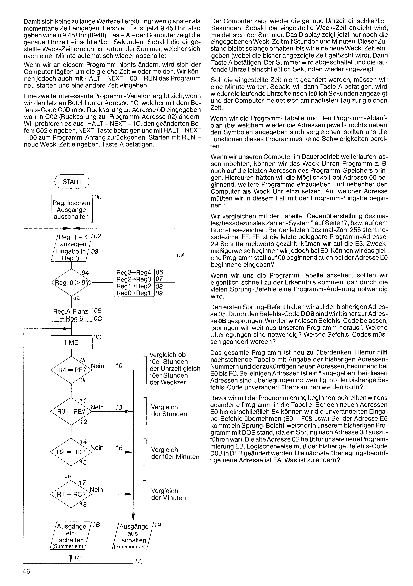
The computer again shows the exact time including seconds. As soon as the set wake-up time is reached, the buzzer reports. The display now shows only the entered wake-up time, with hours and minutes. This state remains until we enter a new wake-up time (whereby the time shown so far is cleared). Then press key A. The buzzer is switched off and the running time including seconds is shown again.
If the set time is not to be changed, we must wait one minute. As soon as we then press key A, the running time including seconds is shown again, and the computer reports at the same time the next day.
If we compare the program table and the program flow chart (in which the addresses are again given to the right of each symbol), the functions of this program should give us no difficulty.
If we want to let our computer keep running continuously, we can also place the alarm-clock program, for example, at the last addresses of the program memory. This would give us the option — starting at address 00 — of entering further programs while also using the computer as an alarm clock. At which address would we have to begin the program entry in that case?
We compare with the table "Decimal / hexadecimal number-system comparison" on page 17, or on the book's bookmark. The last decimal number 255 has the hexadecimal value FF. FF is the last usable program address. Counting back 29 steps, we arrive at E3. It is practical, however, to begin at E0. Can we enter the same program starting at address E0 instead of at 00?
If we look at the program table, we should quickly realise that, because of the many jump commands, a program change becomes necessary.
The first jump command is at the previous address 05. With the command code D0B we have so far jumped to address 0B. If we kept this command code, we would "jump far out of our program". What considerations are necessary? Which command codes must be changed?
The entire program must be rethought. The table below helps with this, giving the previous address numbers and the future new addresses, starting at E0 up to FC. For some addresses an asterisk (*) is given; for these, we must consider whether the previous command code can be taken over unchanged.
Before we begin programming, we write the changed program into the table. For the new addresses E0 up to and including EA, we can take over the unchanged entry commands (E0 = F08, etc.). At address E5 comes a jump command, which in our previous program was D0B (since a jump to address 0B was to be carried out). The old address 0B is called EB in our new programming. Logically, the previous command code D0B must be changed to DEB. The next new address requiring thought is EA. What is to be changed?
So that there isn't too long a wait, enter only a little later than the current time. Example: it is now 9:45, so we enter 9:48 (0948). Key A — the computer shows the exact time including seconds. As soon as the set wake-up time is reached, the buzzer sounds, switching itself off automatically after one minute.
If we change nothing in this program, the computer will report again every day at the same time. But we can also restart the program with HALT – NEXT – 00 – RUN and enter a different time.
A second interesting program variation arises if we change the last command at address 1C — which was entered with command code C0D (i.e. jump back to address 0D) — to C02 (jump back to program address 02). Let's try it: HALT – NEXT – 1C, enter the changed command C02, press the NEXT key, and go back to the program start with HALT – NEXT – 00. Start with RUN — enter a new wake-up time. Press key A.
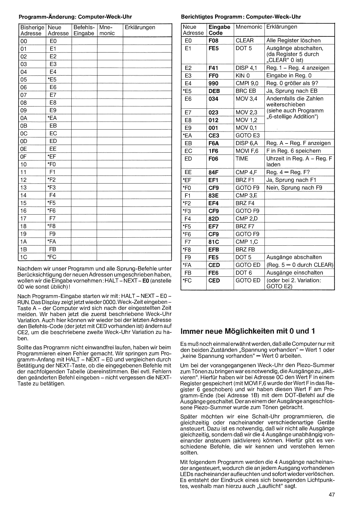
After entering the program, we start with: HALT – NEXT – E0 – RUN. The display now shows 0000 again. Enter the alarm time – key A – the computer will report after the set time has elapsed. We now have the alarm-clock variation described first. Here too we can again, at the last address, change the command code (which is now present as CED) to CE2, in order to have the second alarm-clock variation described.
If the program does not run flawlessly, we made a mistake while programming. We jump to the start of the program with HALT – NEXT – E0 and, by pressing the NEXT key, compare whether the entered commands match the following table. In case of errors, enter the corrected command – don't forget to press the NEXT key.
Always new possibilities with 0 and 1
It must be mentioned once more that all computers work with only the two states “voltage present” = value 1 or “no voltage present” = value 0.
To make the piezo buzzer sound in the previous alarm clock, it was necessary to “activate” the outputs. For this we stored the value F in a register at address 0C (with MOVI F,6 the value F was shifted into register 6), and at the end of the program (at address 1B) we switched this value F onto the outputs with the DOT command. The piezo buzzer connected to one of the outputs was made to sound.
Later we would like to program a timer switch that drives various kinds of devices simultaneously or one after another. For this it is necessary that we can drive (activate) the 4 outputs not all at the same time, but independently of one another. There are various commands for this, which we should get to know and understand.
With the following program the 4 outputs are driven one after another, causing the LEDs present at each output to light up in turn and immediately go out again. This creates the impression of a moving point of light, which is why it is also called a “running light”.
| Old address | New address | Command entry | Mne- monic | Explanations |
|---|---|---|---|---|
| 00 | E0 | |||
| 01 | E1 | |||
| 02 | E2 | |||
| 03 | E3 | |||
| 04 | E4 | |||
| 05 | *E5 | |||
| 06 | E6 | |||
| 07 | E7 | |||
| 08 | E8 | |||
| 09 | E9 | |||
| 0A | *EA | |||
| 0B | EB | |||
| 0C | EC | |||
| 0D | ED | |||
| 0E | EE | |||
| 0F | *EF | |||
| 10 | *F0 | |||
| 11 | F1 | |||
| 12 | *F2 | |||
| 13 | *F3 | |||
| 14 | F4 | |||
| 15 | *F5 | |||
| 16 | *F6 | |||
| 17 | F7 | |||
| 18 | *F8 | |||
| 19 | F9 | |||
| 1A | *FA | |||
| 1B | FB | |||
| 1C | *FC |
After we have rewritten our program and all the jump commands taking the new addresses into account, we now want to carry out the entry: HALT – NEXT – E0 (instead of 00 as usual)!
| New address | Entry code | Mnemonic | Explanations |
|---|---|---|---|
| E0 | F08 | CLEAR | Clear all registers |
| E1 | FE5 | DOT 5 | Switch outputs off, (since register 5 is 0 because of “CLEAR”) |
| E2 | F41 | DISP 4,1 | Display Reg. 1 – Reg. 4 |
| E3 | FF0 | KIN 0 | Input into Reg. 0 |
| E4 | 990 | CMPI 9,0 | Reg. 0 greater than 9? |
| *E5 | DEB | BRC EB | Yes, jump to EB |
| E6 | 034 | MOV 3,4 | Otherwise shift the numbers along (see also the program “6-digit addition”) |
| E7 | 023 | MOV 2,3 | |
| E8 | 012 | MOV 1,2 | |
| E9 | 001 | MOV 0,1 | |
| *EA | CE3 | GOTO E3 | |
| EB | F6A | DISP 6,A | Display Reg. A – Reg. F |
| EC | 1F6 | MOVI F,6 | Store F in Reg. 6 |
| ED | F06 | TIME | Load time of day into Reg. A – Reg. F |
| EE | 84F | CMP 4,F | Reg. 4 = Reg. F? |
| *EF | EF1 | BRZ F1 | Yes, jump to F1 |
| *F0 | CF9 | GOTO F9 | No, jump to F9 |
| F1 | 83E | CMP 3,E | |
| *F2 | EF4 | BRZ F4 | |
| *F3 | CF9 | GOTO F9 | |
| F4 | 82D | CMP 2,D | |
| *F5 | EF7 | BRZ F7 | |
| *F6 | CF9 | GOTO F9 | |
| F7 | 81C | CMP 1,C | |
| *F8 | EFB | BRZ FB | |
| F9 | FE5 | DOT 5 | Switch outputs off (Reg. 5 = 0 because of CLEAR) |
| *FA | CED | GOTO ED | |
| FB | FE6 | DOT 6 | Switch outputs on |
| *FC | CED | GOTO ED | (or for 2nd variation: GOTO E2) |
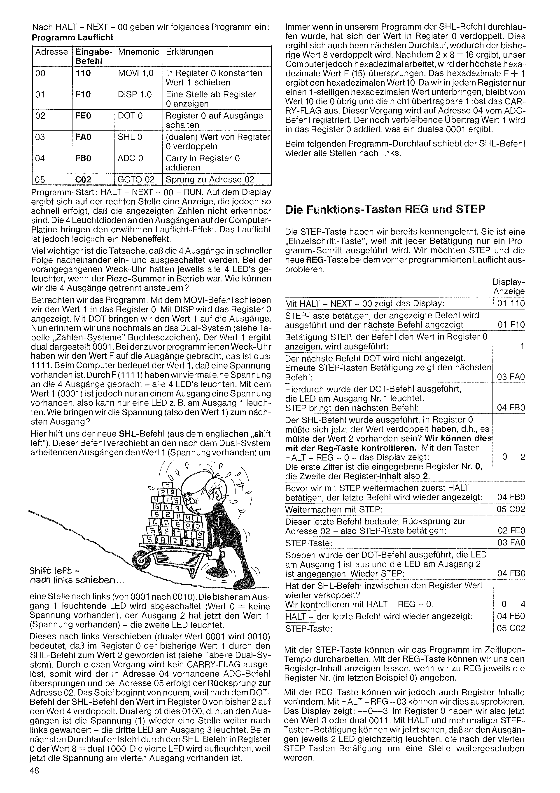
Whenever the SHL command has been run through in our program, the value in register 0 has doubled. This happens again on the next pass, doubling the previous value 8. Since 2 × 8 = 16, but our computer works in hexadecimal, the highest hexadecimal value F (15) is skipped. Hexadecimal F + 1 gives the hexadecimal value 10. Since each register can hold only a single-digit hexadecimal value, the 0 of the value 10 remains and the non-transferable 1 triggers the CARRY FLAG. This process is registered at address 04 by the ADC command. The remaining carry value 1 is added into register 0, which gives a binary 0001.
On the following program pass, the SHL command again shifts all positions to the left.
| Addr. | Entry code | Mnemonic | Explanation |
|---|---|---|---|
| 00 | 110 | MOVI 1,0 | shift constant value 1 into register 0 |
| 01 | F10 | DISP 1,0 | display one digit from register 0 |
| 02 | FE0 | DOT 0 | switch register 0 to the outputs |
| 03 | FA0 | SHL 0 | double the (binary) value of register 0 |
| 04 | FB0 | ADC 0 | add carry into register 0 |
| 05 | C02 | GOTO 02 | jump to address 02 |
Program start: HALT – NEXT – 00 – RUN. On the display a readout appears in the right-hand position, but it happens so quickly that the displayed numbers are not recognisable. The 4 LEDs at the outputs on the computer board produce the running-light effect mentioned. The running light, however, is merely a side effect.
Much more important is the fact that the 4 outputs are switched on and off one after another in rapid succession. In the previous alarm clock, all 4 LEDs lit up whenever the piezo buzzer was operating. How can we drive the 4 outputs separately?
Let us look at the program: with the MOVI command we shift the value 1 into register 0. With DISP, register 0 is displayed. With DOT we bring the value 1 to the outputs. Now let us recall the binary system once more (see the table “Number systems” on the bookmark). The value 1 in binary is 0001. In the previously programmed alarm clock we brought the value F to the outputs, which is binary 1111. For the computer, the value 1 means that a voltage is present. Through F (1111) we applied a voltage four times to the 4 outputs — all 4 LEDs light. With the value 1 (0001), however, a voltage is present at only one output, so only one LED — e.g. at output 1 — can light. How do we bring the voltage (i.e. the value 1) to the next output?
Here the new SHL command helps us (from the English “shift left”). At the outputs working in the binary system, this command shifts the value 1 (voltage present) by
The function keys REG and STEP
We have already met the STEP key; it is a “single-step key”, because with each press only one program step is carried out. We want to try out STEP and the new REG key with the running-light program we programmed earlier.
| Display | |
|---|---|
| With HALT – NEXT – 00 the display shows: | 01 110 |
| Press the STEP key; the displayed command is carried out and the next command is displayed: | 01 F10 |
| Press STEP; the command „display the value in register 0” is carried out: | 1 |
| The next command, DOT, is not displayed. Pressing STEP again shows the next command: | 03 FA0 |
| This carried out the DOT command; the LED at output no. 1 lights. STEP brings the next command: | 04 FB0 |
| The SHL command has been carried out. The value in register 0 should now have doubled, i.e. the value 2 should be present? We can check this with the REG key. With the keys HALT – REG – 0 the display shows: | 0 2 |
The first digit is the register number entered, 0; the second is the register content, i.e. 2.
| Display | |
|---|---|
| Before we continue with STEP, first press HALT; the last command is displayed again: | 04 FB0 |
| Continue with STEP: | 05 C02 |
| This last command means a jump back to address 02 — so press the STEP key: | 02 FE0 |
| STEP key: | 03 FA0 |
| The DOT command has just been carried out; the LED at output 1 is off and the LED at output 2 has come on. STEP again: | 04 FB0 |
| Has the SHL command meanwhile doubled the register value again? We check with HALT – REG – 0: | 0 4 |
| HALT — the last command is displayed again: | 04 FB0 |
| STEP key: | 05 C02 |
With the STEP key we can work through the program in slow motion. With the REG key we can have the register content displayed, if for REG we each time give the register number (0 in the last example).
With the REG key, however, we can also change register contents. We can try this out with HALT – REG – 03. The display shows: --0--3. So in register 0 we now have the value 3, or binary 0011. With HALT and repeated pressing of the STEP key, we can now see that at the outputs 2 LEDs light at the same time, which after the fourth press of the STEP key are shifted one position further.
one position to the left (from 0001 to 0010). The LED previously lit at output 1 is switched off (value 0 = no voltage present); output 2 now has the value 1 (voltage present) — the second LED lights.
This shifting to the left (binary value 0001 becomes 0010) means that in register 0 the previous value 1 has become the value 2 through the SHL command (see the binary-system table). This process triggers no CARRY FLAG, so the ADC command at address 04 is skipped, and at address 05 the jump back to address 02 takes place. The game begins anew, because after the DOT command the SHL command doubles the value in register 0 from 2 to 4. In binary this gives 0100, i.e. at the outputs the voltage (1) has again moved one position further to the left — the third LED at output 3 lights. On the next pass, the SHL command produces the value 8 = binary 1000 in register 0. The fourth LED will light, because now the voltage is present at the fourth output.
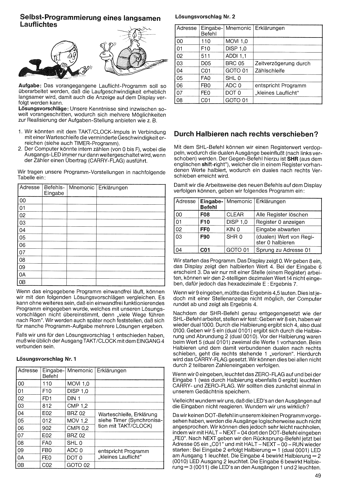
Task: The previous running-light program is to be revised so that the running speed becomes considerably slower, so that the display can be followed as well.
Proposed solutions: Our knowledge has by now advanced so far that several possibilities present themselves for carrying out the task, such as:
1. We could achieve the reduced speed using the TAKT/CLOCK pulse together with a wait loop (see also the TIMER program).
2. The computer could count internally (from 0 to F), whereby the output LED is only advanced when the counter produces a carry (CARRY FLAG).
We enter our program ideas into the following table:
| Address | Command entry | Mnemonic | Explanations |
|---|---|---|---|
| 00 | |||
| 01 | |||
| 02 | |||
| 03 | |||
| 04 | |||
| 05 | |||
| 06 | |||
| 07 | |||
| 08 | |||
| 09 | |||
| 0A | |||
| 0B |
When the entered program runs flawlessly, we can compare it with the following proposed solutions. It may well be that a perfectly working program was entered which does not match our proposed solutions, because “many roads lead to Rome”. We will also find later that for some programming tasks several solutions arise.
If we have decided on proposed solution 1, the TAKT/CLOCK output must, as usual, be connected to INPUT 4.
| Addr. | Entry code | Mnemonic | Explanation |
|---|---|---|---|
| 00 | 110 | MOVI 1,0 | |
| 01 | F10 | DISP 1,0 | |
| 02 | FD1 | DIN 1 | |
| 03 | 812 | CMP 1,2 | |
| 04 | E02 | BRZ 02 | Wait loop; for explanation see Timer (synchronisation with TAKT/CLOCK) |
| 05 | 012 | MOV 1,2 | |
| 06 | 902 | CMPI 0,2 | |
| 07 | E02 | BRZ 02 | |
| 08 | FA0 | SHL 0 | |
| 09 | FB0 | ADC 0 | corresponds to the program “small running light” |
| 0A | FE0 | DOT 0 | |
| 0B | C02 | GOTO 02 |
| Addr. | Entry code | Mnemonic | Explanation |
|---|---|---|---|
| 00 | 110 | MOVI 1,0 | |
| 01 | F10 | DISP 1,0 | |
| 02 | 511 | ADDI 1,1 | |
| 03 | D05 | BRC 05 | Time delay via a counting loop |
| 04 | C01 | GOTO 01 | |
| 05 | FA0 | SHL 0 | |
| 06 | FB0 | ADC 0 | corresponds to the program “small running light” |
| 07 | FE0 | DOT 0 | |
| 08 | C01 | GOTO 01 |
With the SHL command we can double a register value, thereby influencing the binary outputs (shifting them to the left). The opposite command to this is SHR (from the English “shift right”), which halves the values present in a register, thereby achieving a binary shift to the right.
So that we can follow the way the new command works on the display, we enter the following program:
| Addr. | Entry code | Mnemonic | Explanation |
|---|---|---|---|
| 00 | F08 | CLEAR | Clear all registers |
| 01 | F10 | DISP 1,0 | Display register 0 |
| 02 | FF0 | KIN 0 | Wait for input |
| 03 | F90 | SHR 0 | Halve the (binary) value of register 0 |
| 04 | C01 | GOTO 01 | Jump to address 01 |
We start the program. The display shows 0. We enter 8, the display shows the halved value 4. With the entry 6, 3 appears. Since we work with only one digit (one register), we cannot enter the 2-digit decimal value 14, but we can enter the hexadecimal E: result 7.
If we enter 9, the result should be 4.5. This, however, is not possible with a single-digit display; the computer rounds down and shows 4 as the result.
Since the SHR command works in exactly the opposite way to the SHL command, we establish: if we enter 8, we again have binary 1000. Through halving, this gives 4, i.e. binary 0100. If we enter 5 (binary 0101), halving and rounding down gives 2 (binary 0010). Before halving, the value 5 (binary 0101) contained the value 1 twice. When halving — and the binary shift to the right associated with it — the rightmost 1 is “lost”. This sets the CARRY FLAG. We can follow this with all number entries not divisible by 2.
If we enter 0, the ZERO FLAG lights up, and with the entry 1 (which through halving likewise gives 0) the CARRY and ZERO FLAGs light. We should store this in our memory for now.
Perhaps we are surprised that the LEDs at the outputs do not react to the entries. Are we really surprised?
Since we did not provide a DOT command in our small program, the outputs are logically not addressed either. We can, however, easily make up for this by entering the DOT command “FE0” there with HALT – NEXT – 04. After NEXT we now enter the jump-back command “C01” at address 05, and restart with HALT – NEXT – 00 – RUN: with the entry 2, halving = 1 (binary 0001), the LED at output 1 lights. The entry 4 produces halving = 2 (0010), LED output 2 lights. The entry 6 produces halving = 3 (0011), the LEDs at outputs 1 and 2 light.
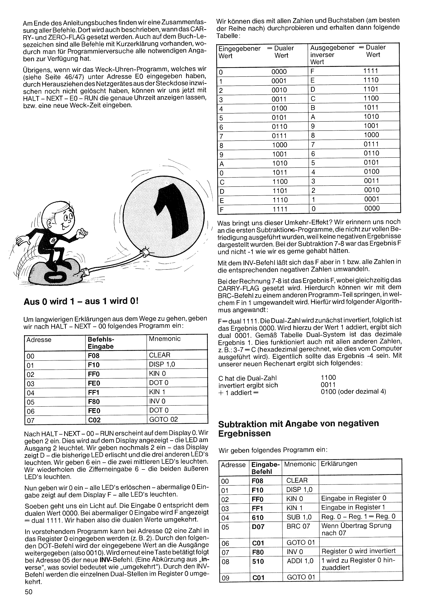
At the end of the instruction book we find a summary of all commands. There it is also described when the CARRY and ZERO FLAGs are set. All commands with a short explanation are also on the book's bookmark, so that for programming experiments one has all the necessary information available.
By the way: if we have not yet cleared the alarm-clock program — which we entered at address E0 (see pages 46/47) — by pulling the power supply out of the socket, we can now have the exact time displayed with HALT – NEXT – E0 – RUN, or enter a new wake-up time.
To avoid lengthy explanations, we enter the following program after HALT – NEXT – 00:
| Addr. | Entry code | Mnemonic |
|---|---|---|
| 00 | F08 | CLEAR |
| 01 | F10 | DISP 1,0 |
| 02 | FF0 | KIN 0 |
| 03 | FE0 | DOT 0 |
| 04 | FF1 | KIN 1 |
| 05 | F80 | INV 0 |
| 06 | FE0 | DOT 0 |
| 07 | C02 | GOTO 02 |
After HALT – NEXT – 00 – RUN, 0 appears on the display. We enter 2. This is shown on the display — the LED at output 2 lights. We enter 2 once more — the display shows D — the previous LED goes out and the three other LEDs light. We enter 6 — the two middle LEDs light. We repeat the digit entry 6 — the two outer LEDs light.
Now we enter 0 — all LEDs go out — entering 0 again shows F on the display — all LEDs light.
A light suddenly dawns on us. The entry 0 corresponds to the binary value 0000. On entering 0 again, F is displayed = binary 1111. So we have reversed the binary values.
In the above program, a number can be entered into register 0 at address 02 (e.g. 2). Through the following DOT command, the entered value is passed on to the outputs (i.e. 0010). If a key is pressed again, the new INV command follows at address 05 (an abbreviation of “inverse”, which means roughly “reversed”). Through the INV command, the individual binary positions in register 0 are reversed.
We can try this out with all numbers and letters (best done in sequence) and then obtain the following table:
| Entered value | Binary value | Inverse output value | Binary value |
|---|---|---|---|
| 0 | 0000 | F | 1111 |
| 1 | 0001 | E | 1110 |
| 2 | 0010 | D | 1101 |
| 3 | 0011 | C | 1100 |
| 4 | 0100 | B | 1011 |
| 5 | 0101 | A | 1010 |
| 6 | 0110 | 9 | 1001 |
| 7 | 0111 | 8 | 1000 |
| 8 | 1000 | 7 | 0111 |
| 9 | 1001 | 6 | 0110 |
| A | 1010 | 5 | 0101 |
| B | 1011 | 4 | 0100 |
| C | 1100 | 3 | 0011 |
| D | 1101 | 2 | 0010 |
| E | 1110 | 1 | 0001 |
| F | 1111 | 0 | 0000 |
What does this reversal effect give us? We remember the first subtraction programs, which were not carried out to our full satisfaction because no negative results were shown. In the subtraction 7 – 8, the result was F and not –1, as we would have liked.
With the INV command, however, F can be converted into 1 — or rather, all numbers into the corresponding negative numbers.
In the calculation 7 – 8 the result is F, and at the same time the CARRY FLAG is set. Through this we can use the BRC command to jump to another part of the program, in which F is converted into 1. For this the following algorithm is applied:
F = binary 1111. The binary number is first inverted, so the result is 0000. If the value 1 is added to this, we get binary 0001. According to the binary-system table, the decimal result is 1. This also works with all other numbers, e.g.: 3 – 7 = C (calculated in hexadecimal, as the computer does it). The result should actually be –4. With our new way of calculating, the following results:
| C has the binary number | 1100 |
| inverted gives | 0011 |
| + 1 added = | 0100 (or decimal 4) |
We enter the following program:
| Addr. | Entry code | Mnemonic | Explanation |
|---|---|---|---|
| 00 | F08 | CLEAR | |
| 01 | F10 | DISP 1,0 | |
| 02 | FF0 | KIN 0 | Input into register 0 |
| 03 | FF1 | KIN 1 | Input into register 1 |
| 04 | 610 | SUB 1,0 | Reg. 0 – Reg. 1 = Reg. 0 |
| 05 | D07 | BRC 07 | If carry, jump to 07 |
| 06 | C01 | GOTO 01 | |
| 07 | F80 | INV 0 | Register 0 is inverted |
| 08 | 510 | ADDI 1,0 | 1 is added to register 0 |
| 09 | C01 | GOTO 01 |
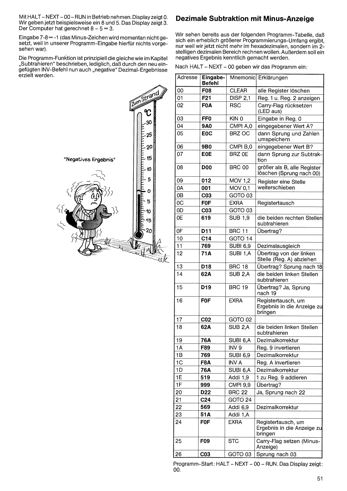
Put into operation with HALT – NEXT – 00 – RUN. The display shows 0. We now enter, for example, 8 and 5. The display shows 3. The computer has calculated 8 – 5 = 3.
Entry 7 – 8 = –1 (the minus sign is not set for the moment, because nothing was provided for this in our program entry).
The program function is in principle the same as described in the chapter “Subtracting”; only that, through the newly inserted INV command, “negative” decimal results can now also be obtained.
We can already see from the following program table that a considerably greater programming effort results, simply because we now want to calculate not in the hexadecimal range but in the 2-digit decimal range. In addition, a negative result is to be made identifiable.
After HALT – NEXT – 00 we enter the program:
| Addr. | Entry code | Mnemonic | Explanation |
|---|---|---|---|
| 00 | F08 | CLEAR | clear all registers |
| 01 | F21 | DISP 2,1 | display Reg. 1 and Reg. 2 |
| 02 | F0A | RSC | reset carry flag (LED off) |
| 03 | FF0 | KIN 0 | input into Reg. 0 |
| 04 | 9A0 | CMPI A,0 | entered value A? |
| 05 | E0C | BRZ 0C | then jump and re-store the numbers |
| 06 | 9B0 | CMPI B,0 | entered value B? |
| 07 | E0E | BRZ 0E | then jump to the subtraction |
| 08 | D00 | BRC 00 | greater than B, clear all registers (jump to 00) |
| 09 | 012 | MOV 1,2 | shift the registers one position further |
| 0A | 001 | MOV 0,1 | |
| 0B | C03 | GOTO 03 | |
| 0C | F0F | EXRA | swap registers |
| 0D | C03 | GOTO 03 | |
| 0E | 619 | SUB 1,9 | subtract the two right-hand digits |
| 0F | D11 | BRC 11 | carry? |
| 10 | C14 | GOTO 14 | |
| 11 | 769 | SUBI 6,9 | decimal adjustment |
| 12 | 71A | SUBI 1,A | subtract carry from the left digit (Reg. A) |
| 13 | D18 | BRC 18 | carry? jump to 18 |
| 14 | 62A | SUB 2,A | subtract the two left-hand digits |
| 15 | D19 | BRC 19 | carry? yes, jump to 19 |
| 16 | F0F | EXRA | swap registers, to bring the result to the display |
| 17 | C02 | GOTO 02 | |
| 18 | 62A | SUB 2,A | subtract the two left-hand digits |
| 19 | 76A | SUBI 6,A | decimal correction |
| 1A | F89 | INV 9 | invert Reg. 9 |
| 1B | 769 | SUBI 6,9 | decimal correction |
| 1C | F8A | INV A | invert Reg. A |
| 1D | 76A | SUBI 6,A | decimal correction |
| 1E | 519 | ADDI 1,9 | add 1 to Reg. 9 |
| 1F | 999 | CMPI 9,9 | carry? |
| 20 | D22 | BRC 22 | yes, jump to 22 |
| 21 | C24 | GOTO 24 | |
| 22 | 569 | ADDI 6,9 | decimal correction |
| 23 | 51A | ADDI 1,A | |
| 24 | F0F | EXRA | swap registers, to bring the result to the display |
| 25 | F09 | STC | set carry flag (minus display) |
| 26 | C03 | GOTO 03 | jump to 03 |
Program start: HALT – NEXT – 00 – RUN. The display shows: 00.
We can subtract 2-digit numbers from one another. For example: 81 – 23. We enter 81, then press key A as the “–” key, then enter 23 and press key B as the “=” key. We obtain the result 58. With key C the result can be cleared and a new problem then entered.
If we subtract, for example, 17 from 15, the negative result 2 arises. Negative results are made identifiable by the lighting of the CARRY FLAG.
For a better overview, this program was initially laid out for only 2 digits. In the calculator program that follows later, with all types of calculation, the subtraction will also be extended to 6 digits.
For better understanding we again compare the program table and the program flow chart (the address number is also given at each symbol).
From address 00 to 0D the values to be calculated are entered (input routine). At address 02 we encounter a new command, RSC (from “reset carry”). This command ensures that the CARRY FLAG is reset in every case, unless a negative result occurs.
The following calculation example explains the subtraction with a positive result:
The program produces a decimal result display, but the computer carries out the task in hexadecimal. As with addition, the two last digits are subtracted first: 1 – 3 = E. So a negative intermediate result arises, whereby the CARRY FLAG is set. The hexadecimal E is to be represented in decimal. We recall the addition: if, when adding up, the digit 9 was exceeded, we move through A B C … into the hexadecimal range, the CARRY FLAG was set, i.e. the constant value 6 had to be added in order to reach the decimal representation again. Something similar arises with subtraction.
As soon as, when counting backwards, the value 0 is undershot, the computer continues counting backwards in hexadecimal and, in the above task, arrives at the negative result E. Because of the carry (CARRY FLAG is set), the constant value 6 must now likewise be subtracted again: E – 6 = 8, which is also shown on the display. Now the front digits 8 – 2 still have to be subtracted. The computer, however, has remembered the negative carry via the CARRY FLAG, so first the negative carry value 1 is subtracted from 8: intermediate result 7. Now the actual subtraction takes place: 7 – 2 = 5. The total result 58 now shown on the display is positive, because the new RSC command at address 02 has ensured that the CARRY FLAG triggered by the negative intermediate result (subtraction of the two last digits) is immediately reset again.
If we had obtained a negative result, say through the subtraction 16 – 28 = –12, this would have to be indicated by a non-extinguishing CARRY FLAG. For this, the command STC (from “set carry”) is included in the program at address 25.
The program is shown on the flow chart in 3 stages. On the left side is the input routine. In the middle the actual subtraction is carried out, and on the right side the conversion takes place when a result becomes negative.
For the negative conversion, in the last third of the program table — just as in the flow chart — we see the INV command, with which binary values can be reversed.
The computer carries out a subtraction with a negative result in a very cumbersome way. The arithmetic problem is to be:
The following representation shows us the individual calculation steps as they are carried out by the computer in hexadecimal and simultaneously in binary, until the decimal result is displayed:
| Step | Hexadecimal calculation | Binary calculation |
|---|---|---|
| Input via keyboard: 16 | 1 6 | 0001 0110 |
| Input via keyboard: −28 | 2 8 | 0010 1000 |
| 1. Subtract the two last digits from one another → hexadecimal intermediate result | 6 − 8 = E | 0110 − 1000 = 1110 |
| 2. Carry (because result negative), so subtract the constant value 6 for decimal correction | E − 6 = 8 | 1110 − 0110 = 1000 |
| 3. Via the carry flag, subtract the constant 1 as a carry from the front digits → intermediate result | 1 − 1 = 0 | 0001 − 0001 = 0000 |
| 4. Subtract the remaining front digits from one another → negative intermediate result E | 0 − 2 = E | 0000 − 0010 = 1110 |
| 5. Result negative (carry via carry flag), so subtract the constant 6 for decimal correction → total result | E − 6 = 8 | 1110 − 0110 = 1000 |
| 6. The negative total result (88) is first shown as a positive result; this result must be inverted | invert → 7 7 | 1000 → 0111 |
| 7. Since the inversion was also done in hex, the constant 6 must be subtracted on both digits as a decimal correction | 7 − 6 = 1 | 0111 − 0110 = 0001 |
| 8. Via the BRC command, the correction (constant value 1) is added on the last digit | + 1 → 1 2 | 0001 + 1 = 0010 |
| Final result — the result is negative: −12 | 1 2 | 0001 0010 |
| The STC command (set carry) ensures a persistent carry flag, whereby the result is shown as negative. | ||
Is it any wonder that, despite this cumbersome way of calculating, the correct result comes about?
It is pure computer logic, which is hard for us to understand. We therefore do not need to keep such arithmetic feats in our heads. But it is not uninteresting to know what goes on, for example, in a pocket calculator in fractions of a second.
To understand the computer logic, let us once more summarise the calculation operations we have just learned, which are somewhat difficult:
The decimal correction after inverting is necessary because the inversion is carried out in hexadecimal. Thus, for example, the decimal value 3 present before inverting becomes the hexadecimal C through inversion. Through the decimal correction, the constant value 6 is subtracted from C, i.e. C − 6 = 6. The value 6, in turn, is the decimal inverse of 3. The following table shows us, for each value, the decimal and hexadecimal inverted value.
| Value | decimal inverted | hex inverted |
|---|---|---|
| 0 | 9 | F |
| 1 | 8 | E |
| 2 | 7 | D |
| 3 | 6 | C |
| 4 | 5 | B |
| 5 | 4 | A |
| 6 | 3 | 9 |
| 7 | 2 | 8 |
| 8 | 1 | 7 |
| 9 | 0 | 6 |
| A | F | 5 |
| B | E | 4 |
| C | D | 3 |
| D | C | 2 |
| E | B | 1 |
| F | A | 0 |
A value added to an inverted value must, in the decimal system, always give the value 10. But since with addition only the value 9 ever results, we understand why for the decimal correction the constant value 1 must always be added.
With the following experiments, the inputs and outputs of the computer board are to be brought into programming. An input signal is to trigger an output signal, controlled by the computer.
To trigger a signal effect at an input, a voltage must be brought to that input. If a voltage is present, the value 1 is registered, and one also says the input is "high". Without voltage (value 0) the input is "low".
To bring the state "high" to an input, we need a voltage. To generate this voltage, an additional energy source (a small 9 V battery) is required. For this we use the 9 V blocks common in small transistor radios (designation IEC 6 F22), e.g. the Varta Super 438 or the Mallory MN 1604. The battery is inserted into the holder of the supplied battery module. As soon as the connection clip on the module is pressed onto the battery terminals, the battery module is ready for use.
The computer works with very low voltages. The 9 V battery voltage must never be connected directly to the inputs or outputs of the computer. By interposing appropriate resistors, the 9 V voltage is reduced to a level the computer can tolerate.
By pressing a key, short "high" signals are to be brought to the inputs. For this, the red keys G and H are provided on the armature board. So that we can easily connect the keys (with the connecting leads and the yellow plastic plugs), we find behind each of the keys G and H a module marked "Taster" (push-button). The modules are plugged in behind the computer board (see illustration below), with a connecting lead running between the modules and the keys built into the armature board. The module for push-button G is plugged in on the left, the module for push-button H is placed to the right of it. To reduce the battery voltage, the two
With a hexadecimal inverse, too, the correction is necessary in the same way:
With this chapter we have now put behind us the most difficult part of computer logic (the logic needed for programming a computer). With each of the following chapters we approach the larger and more interesting programs. For us the computer is now no longer an unknown being, because thanks to our knowledge we now know how it works and how it carries out our commands.
| Value | + | Decimal inverse | = | + | Decimal correction | = | ||
|---|---|---|---|---|---|---|---|---|
| 0 | + | 9 | = | 9 | + | 1 | = | 10 |
| 1 | + | 8 | = | 9 | + | 1 | = | 10 |
| 2 | + | 7 | = | 9 | + | 1 | = | 10 |
| 3 | + | 6 | = | 9 | + | 1 | = | 10 |
| 4 | + | 5 | = | 9 | + | 1 | = | 10 |
| 5 | + | 4 | = | 9 | + | 1 | = | 10 |
| 6 | + | 3 | = | 9 | + | 1 | = | 10 |
| 7 | + | 2 | = | 9 | + | 1 | = | 10 |
| 8 | + | 1 | = | 9 | + | 1 | = | 10 |
| 9 | + | 0 | = | 9 | + | 1 | = | 10 |
| Value | + | Hex. inverse | = | + | Cor- rection | = | ||
|---|---|---|---|---|---|---|---|---|
| 0 | + | F | = | 15 | + | 1 | = | 16 |
| 1 | + | E | = | 15 | + | 1 | = | 16 |
| 2 | + | D | = | 15 | + | 1 | = | 16 |
| 3 | + | C | = | 15 | + | 1 | = | 16 |
| 4 | + | B | = | 15 | + | 1 | = | 16 |
| 5 | + | A | = | 15 | + | 1 | = | 16 |
| 6 | + | 9 | = | 15 | + | 1 | = | 16 |
| etc. |
The arrangement of the push-buttons and resistors from the previous experiment remains unchanged. With the following program we arrive at an interesting reaction test, in which the computer determines which of the two keys G and H was pressed first.
After HALT – NEXT – 00, enter the program:
the digit 1 also appears. If we then press key H, the LED at output 2 lights and the display likewise reports 2. If both keys are pressed, both LEDs at outputs 1 and 2 light and the display reports 3.
Program description:
This is a basic experiment, so that for the following programs we better understand the signals triggered by keys G and H. As soon as we press key G, input 1 becomes "high", because a voltage is present. All other outputs are "low", because there the voltage is absent. Through the DIN command the binary number 0001 (value 1) is taken into register 0 and, through the DOT command, brought to the corresponding output.
If push-button H is pressed, input 2 becomes "high" and the binary number 0010 (value 2) is taken into register 0 and likewise brought to the corresponding output through the DOT command. If both push-buttons are pressed, the result is binary 0011, whereby the value 3 is stored in register 0 and displayed.
Through push-buttons G and H, additional information can be stored in the registers and further processed by appropriate commands. Some of these possibilities are shown by the following programs.
Before we start the program, the piezo buzzer must still be connected at the connections GND and OUTPUT 4 of the computer board (see illustration).
Program start with HALT – NEXT – 00 – RUN. After a certain time the piezo buzzer sounds. At the same time all 4 LEDs at the outputs light up. If key G is now pressed first, the buzzer falls silent and only the LED at output 1 stays lit. The same effect occurs if key H is pressed first, but then the LED at output 2 lights. If both keys are pressed at exactly the same time, both LEDs light. By pressing any number or letter key, the described process is triggered again, whereby the waiting time until the buzzer sounds can be variously short or long.
For a reaction test, each of the two players is assigned a red key. Then start the timing by pressing a letter or number key. As soon as the buzzer sounds, each player may press their red key. The corresponding output LED indicates which key was pressed first. If both test persons are exactly equally fast, both LEDs light. Repeat the test by pressing a number or letter key.
Program description:
In this program, the random generator is used at address 03. A "time loop" on addresses 04 to 07 follows. This produces a random and variously long waiting time.
Let us assume that through the RND command (random generator) the value E, for example, is taken into (stored in) register D. Through the following ADDI command the value 1 is added into register C. Through the CLEAR command at the start of the program, register C initially holds only the value 0, which is why
"Resistor 4.7 KΩ" modules are also plugged in. Then make the connecting leads according to the illustration. The piezo buzzer, which is also drawn in the illustration, is not yet connected. Furthermore, we should make sure that any lead connections still present from earlier experiments are removed.
As soon as the circuit (without the piezo buzzer) is correctly built up, we enter the following program as usual after HALT – NEXT – 00:
| Addr. | Entry code | Mnemonic |
|---|---|---|
| 00 | F10 | DISP 1,0 |
| 01 | FD0 | DIN 0 |
| 02 | FE0 | DOT 0 |
| 03 | C00 | GOTO 00 |
Program start: HALT – NEXT – 00 – RUN. The display shows 0. If we now press key G, the LED at output 1 lights (as long as key G is held down) and on the display
| Addr. | Entry code | Mnemonic | Explanation |
|---|---|---|---|
| 00 | F08 | CLEAR | clear all registers |
| 01 | F02 | DISOUT | switch the display off |
| 02 | FE0 | DOT 0 | switch the output LEDs dark |
| 03 | F05 | RND | random generator |
| 04 | 51C | ADDI 1,C | time loop |
| 05 | FBD | ADC D | |
| 06 | E08 | BRZ 08 | |
| 07 | C04 | GOTO 04 | |
| 08 | 1F0 | MOVI F,0 | F into register 0 |
| 09 | FE0 | DOT 0 | F to the outputs (4 LEDs light) |
| 0A | FD1 | DIN 1 | store input value in register 1 |
| 0B | E0A | BRZ 0A | if input value 0, then wait for a new input value |
| 0C | FE1 | DOT 1 | put the input value onto the outputs |
| 0D | FF0 | KIN 0 | keyboard input |
| 0E | C00 | GOTO 00 | jump to start of program |
The following program table shows that the existing program from address 00 to 0E remains unchanged. Only at address 06 must the jump command BRZ be changed, so that we can jump into the new program section beginning at address 0F. The previous entry E08 (jump to address 08) is changed to E0F (jump to address 0F).
The "rucksack program" appended at address 0F must be entered anew.
What is to be done?
With HALT – NEXT – 06 enter the changed command (don't forget NEXT), then with HALT – NEXT – 0F enter the "rucksack program" to be appended.
the value 1 must be added to this register 16 times until the value F then present is exceeded and the carry is added to register D. We assumed that the value E was present in register D, so the carry now gives the value F. Now the value 1 is again added 16 times into register C until, through the resulting new carry, the value 0 stands in register D. With the command BRZ 08 the "time loop" can now be left. Leaving the time loop depends on the randomly found number in register D. Since the time loop is run through several times in an unpredictable way, a random waiting time is achieved.
At address 08 the value F (binary 1111) is stored into register 0 and brought to the outputs by the following DOT command: all 4 outputs are "high", the LEDs light and the buzzer sounds. At address 0A the value 0 present at the inputs is stored into register 1, because as long as none of the red keys is pressed, the inputs are "low", i.e. 0 (binary 0000). The BRZ command following at address 0B, by jumping back to address 0A, ensures that the outputs initially stay "high".
Only now can we intervene in the program sequence by pressing one of the red keys. Pressing G or H makes one of the two inputs "high", producing the value 1, which is taken into register 1 at address 0A. This causes the BRZ command at address 0B to be skipped, and the following DOT command brings the input value to the outputs. Pressing G brings the value 1 (binary 0001), the LED at output 1 lights. Pressing H brings the value 2 (binary 0010), the LED at output 2 lights. If both keys happen to be pressed at exactly the same time, the value 3 (binary 0011) results and both LEDs light. The KIN command at address 0D waits until the value present in register 0 is changed by pressing any key. Through the jump-back command to the start of the program, the game is repeated.
A program can be developed in stages. At the beginning come the considerations of which conditions are to be achieved by appropriate programming. A test run shows whether the entered commands are carried out correctly.
Now that the program entered in the previous chapter runs flawlessly, we can consider whether improvements are possible. Our previous program is, for example, not "cheat-proof", because if one of the test persons holds the red key down continuously, the cheater's LED had to light up first. It can be assumed that each test person keeps a finger on a red key in order to demonstrate quick reaction when the buzzer sounds. It is therefore hard to determine whether one of the two persons presses the key too early. It is therefore expedient to improve the reaction test by building in a "cheat protection".
Since it is not possible to insert a few program steps in between in an already-entered program, the whole program would have to be reconsidered and re-entered. With longer programs this is very time-consuming. Since new ideas keep arising during programming, the programming would have to be started over and over again.
With so-called "rucksack programming" we have, in many programs, the possibility of appending an addition as a "rucksack". We want to try this out with an additional "cheat protection".
| Addr. | Entry code | Mnemonic | Explanation | |
|---|---|---|---|---|
| 00 | F08 | CLEAR | Existing program | |
| 01 | F02 | DISOUT | ||
| 02 | FE0 | DOT 0 | ||
| 03 | F05 | RND | ||
| 04 | 51C | ADDI 1,C | ||
| 05 | FBD | ADC D | ||
| 06 | E0F | BRZ 0F | note the change | |
| 07 | C04 | GOTO 04 | ||
| 08 | 1F0 | MOVI F,0 | ||
| 09 | FE0 | DOT 0 | ||
| 0A | FD1 | DIN 1 | ||
| 0B | E0A | BRZ 0A | ||
| 0C | FE1 | DOT 1 | ||
| 0D | FF0 | KIN 0 | ||
| 0E | C00 | GOTO 00 | ||
| 0F | FD1 | DIN 1 | are the inputs (when no key was pressed) equal to "0"? Yes, then jump to 08 | Rucksack program |
| 10 | E08 | BRZ 08 | ||
| 11 | 1F0 | MOVI F,0 | store F in register 0 | |
| 12 | FE0 | DOT 0 | output F to the outputs | |
| 13 | 51C | ADDI 1,C | counter | |
| 14 | E00 | BRZ 00 | ||
| 15 | FE2 | DOT 2 | (register 2 = 0) output 0 to the outputs, and | |
| 16 | C11 | GOTO 11 | jump to 11 |
Program start with HALT – NEXT – 00 – RUN.
The reaction test can be carried out in the same way as in the last chapter. If one of the players cheats, i.e. holds their key down continuously, an interval tone sounds for a short time. Immediately afterwards a new random time is generated — the test can be continued (without cheating).
At address 06 the jump to the "rucksack" for the cheat check takes place. At the first rucksack address 0F it is checked whether all inputs are "low" (value 0). If this is the case, no red key was pressed and the program is processed as before by jumping back to address 08 (command BRZ 08).
If one of the inputs becomes "high", the check of whether cheating occurred takes place in the "rucksack program". At address 11 the value F is stored in register 0 and brought to the outputs: all LEDs light, the piezo buzzer sounds. At address 13 the constant value 1 is added to register C by the ADDI command. The DOT command brings the content of register 2 to the outputs. Since the value 0 is present in register 2, the LEDs go out and the piezo buzzer falls silent. Immediately afterwards the program continues again at address 11 via GOTO — the game repeats: LEDs light, piezo buzzer sounds. Renewed jump back to address 11. LEDs go out, piezo buzzer falls silent. Since the program runs very fast, we see the flickering LEDs and the buzzer produces an interval tone. This
game is repeated until, on each program pass, the value 0 is reached at register 2 on address 13 through the constantly added value 1 (after exceeding the hexadecimal F, i.e. after the 16th pass). This is registered at address 14 by the BRZ command, whereby the jump to the start of the program takes place.
When we later develop and further improve programs ourselves, we should remember the trick of "rucksack programming" for program creation and improvement. However, when several "rucksacks" are appended, such programs quickly become confusing. It is expedient to rethink the overall program and arrange the individual "rucksacks" into a new, logically running overall program.
2. Program improvement: Reaction-test program "de luxe"
Our reaction-test program is to be expanded further. The computer is to keep a "points account" on its own, so that with repeated test runs it can be determined which player is the first to win the 9 reaction tests to be carried out one after another. To make the test even more interesting, a cheating player is to have all the points achieved so far deducted.
For this program extension, several "rucksacks" would have to be appended, which makes the program too confusing for our current knowledge. Since the piezo buzzer is disruptive while programming, we disconnect a connecting lead and then carry out the re-programming after HALT – NEXT – 00.
Reaction test "de luxe" (final version)
Before we start the program, reconnect the piezo buzzer. It should be pointed out once more that the arrangement of the key and resistor modules remains unchanged, as in the first reaction-test program. So no additional connecting leads may be attached.
Program start with HALT – NEXT – 00 – RUN.
The display shows: 00. As before, after a random waiting time the piezo buzzer sounds. Whoever presses their red key first is credited with a point by the computer. This can be seen on the display: key G = left display digit, key H = right display digit. In addition, the corresponding LEDs at the outputs light up again. After a red key is pressed, the game continues automatically until a player has reached 9 points. On the display, an E for End then appears to the left and right of the displayed points. A new 9-point game can be started by pressing a number key.
Program description
The program steps of addresses 00 to 08 are identical to our first reaction-test program. At addresses 09 to 0F we recognise the "cheat check" that we had appended as a "rucksack" in the last program. The following program steps check who cheated, whereby the corresponding register is set to 0. The points of the player with red key G are counted in register 4, key H in register 3.
From address 1A the actual reaction test is carried out. Through the corresponding comparison commands, 1 point is added in each case to the register of the faster player.
The whole program is built up so clearly and simply that longer explanations should not be necessary. A note on addresses 1E to 21: through DIN 1 an input value is taken into register 1. If red key G was pressed, the input value 0001 (i.e. value 1) results in binary. If key H was pressed, 0010 results in binary (i.e.
value 2). Through the commands CMPI 1,1 or CMPI 2,1, it is compared which of the two red keys was pressed. Through BRZ a jump-back takes place and a point is added to the corresponding "key register". If, by chance, both keys were pressed at the same time, register 1 gives binary 0011 (i.e. value 3). Through the GOTO command at address 22, a jump to the time loop takes place, i.e. no register (and thus no player) is credited with a point.
| Addr. | Entry code | Mnemonic | Explanation |
|---|---|---|---|
| 00 | F08 | CLEAR | |
| 01 | F23 | DISP 2,3 | |
| 02 | FE0 | DOT 0 | |
| 03 | F05 | RND | time loop |
| 04 | 51C | ADDI 1,C | |
| 05 | FBD | ADC D | |
| 06 | E08 | BRZ 08 | |
| 07 | C04 | GOTO 04 | |
| 08 | 1F0 | MOVI F,0 | |
| 09 | FD1 | DIN 1 | „cheat test” and interval-tone generation |
| 0A | E1A | BRZ 1A | |
| 0B | FE0 | DOT 0 | |
| 0C | 51C | ADDI 1,C | |
| 0D | E10 | BRZ 10 | |
| 0E | FE2 | DOT 2 | |
| 0F | C0B | GOTO 0B | |
| 10 | FE2 | DOT 2 | |
| 11 | 911 | CMPI 1,1 | did key G cheat? |
| 12 | E16 | BRZ 16 | |
| 13 | 921 | CMPI 2,1 | did key H cheat? |
| 14 | E18 | BRZ 18 | |
| 15 | C00 | GOTO 00 | both cheated, jump to 00 (CLEAR) |
| 16 | 104 | MOVI 0,4 | Reg. 4 (key G) becomes zero |
| 17 | C03 | GOTO 03 | |
| 18 | 103 | MOVI 0,3 | Reg. 3 (key H) becomes zero |
| 19 | C03 | GOTO 03 | |
| 1A | FE0 | DOT 0 | signal tone |
| 1B | FD1 | DIN 1 | input value into Reg. 1 |
| 1C | E1B | BRZ 1B | |
| 1D | FE1 | DOT 1 | |
| 1E | 911 | CMPI 1,1 | key G pressed? |
| 1F | E23 | BRZ 23 | |
| 20 | 921 | CMPI 2,1 | key H pressed? |
| 21 | E27 | BRZ 27 | |
| 22 | C03 | GOTO 03 | |
| 23 | 514 | ADDI 1,4 | Reg. 4 (key G) + 1 |
| 24 | 994 | CMPI 9,4 | Reg. 4 = 9? |
| 25 | E2B | BRZ 2B | yes, jump to „end display” |
| 26 | C03 | GOTO 03 | |
| 27 | 513 | ADDI 1,3 | Reg. 3 (key H) + 1 |
| 28 | 993 | CMPI 9,3 | Reg. 3 = 9? |
| 29 | E2B | BRZ 2B | yes, jump to „end display” |
| 2A | C03 | GOTO 03 | |
| 2B | 1E2 | MOVI E,2 | E → Reg 2 |
| 2C | 1E5 | MOVI E,5 | E → Reg 5 |
| 2D | F42 | DISP 4,2 | display Reg. 2 to Reg. 5 |
| 2E | FF0 | KIN 0 | |
| 2F | C00 | GOTO 00 |
Remove the battery connections and the computer is ready for use again as usual. A short program test will prove to us that the entered programs are still present.
Pressing the RESET key shortly before and during the mains interruption (or during mains switch-on) is absolutely necessary, so that no data of the entered programs is lost. Should a program not function properly due to incorrect pressing of the RESET key (which could affect above all the first and last addresses of the program memory), individual corrections would have to be carried out in the known way.
Is a long-term battery supply of the program memory also possible?
In the standard delivery version this is not possible. However, on the computer board we can exchange the memory module contained there (among others) for another type which, through especially low current consumption, is specially suited for battery operation.
Before we make technical interventions on the board, however, we should get to know our computer a little better. Notes on this topic can be found in the chapter "Memory and memory options".
How can we keep the entered programs in the program memory during a brief mains interruption?
As already mentioned, the computer can remain connected to the mains socket in continuous operation.
Now it can happen that the mains power has to be interrupted briefly for some reason, because the computer is to be moved from one room to another, for example. A pity if a larger program were lost as a result and had to be re-entered a short time later.
For mains interruptions of up to a maximum of 1 hour, we can keep the stored programs if the 9 V battery (see illustration) is connected at the right rear of the computer board. The battery poles must under no circumstances be swapped: the minus pole of the battery leads to the connection socket GND (Ground), the plus pole of the battery leads to the connection socket Uin. The battery is connected only shortly before the mains interruption.
In connection with computers, one often speaks of bits (plural of bit) and bytes (plural of byte). From the technical description of our Microtronic computer we see, for example, that a 4-bit microprocessor is used.
From our previous experiments we know that our microcomputer works in hexadecimal, and that the 16 hexadecimal values (from 0 to F) are processed in the microprocessor by 4-digit binary numbers formed from 0 and 1. For each binary digit we need 1 bit. Since the microprocessor works with 4 binary digits, 4 bits are necessary for its operation. A bit (abbreviation for "binary digit") is thus the smallest storage unit of a microprocessor (and of a computer).
For each hexadecimal value that we process in one of our registers, we need 4 bits. These 4 bits must be brought simultaneously within the microprocessor, e.g. from the program memory to the outputs. For this, 4 lines are required. We recall the "data bus". A 4-bit microprocessor has a 4-bit-wide data bus. This means, for example, that only a single-digit hexadecimal digit can be processed (e.g. added) in one operation.
4-bit microprocessors have found the widest distribution worldwide. They are found in almost all pocket calculators, car computers, electronic games, household machines, controls, etc.
Before pulling the mains adapter out of the socket, the green RESET key on the computer board is to be held down for about 10 seconds. Also during and after pulling out the mains adapter, keep the RESET key held down for about another 10 seconds.
The program memory is now kept ready for operation by the battery voltage, while all other computer functions are switched off. So work cannot be continued in battery operation.
Since a current consumption of about 30 mA results for keeping the program memory ready, the computer should be reconnected to a socket as quickly as possible (to spare the battery).
Before plugging the mains adapter into the socket, press the RESET key again for about 10 seconds, then (with the RESET key pressed) plug in the mains adapter. After plugging in, keep the RESET key held down for about another 10 seconds.
"Bit" and "Byte"
Besides the 4-bit microprocessors there are also 8-bit microprocessors. These have an 8-bit-wide data bus and can process, for example, 2-digit hexadecimal digits simultaneously in one operation. This doubles the working speed of the microprocessor. 8-bit microprocessors are used above all in data-processing systems, because there a higher working speed is required due to the high data volume.
In addition there are 16-bit microprocessors, which are used in large computing systems to process the enormous amounts of data arising there at the highest speed. 32-bit microprocessors for even higher requirements are in development.
It cannot be said that an 8-bit microprocessor is better than a 4-bit processor because of its higher working speed. Ultimately it depends on what is to be achieved through the use of the microprocessor. The price/performance ratio is also decisive for the selection of an appropriate processor.
For us the 4-bit microprocessor has, above all, the advantage that its mode of operation is still reasonably representable and clear.
And what are bytes?
A byte has 8 bits. 4 bits are sufficient for the 16 single-digit hexadecimal possibilities; eight bits (i.e. one byte) are necessary when the entire alphabet with upper- and lower-case letters, all numbers and characters is to be represented. With one byte there are already 256 different representation possibilities.
It is also customary to give storage capacities not in bits but in bytes. In our microprocessor, for example, 4096 bytes (32,768 bits) are available for the monitor program (operating system). In addition, a RAM memory with 64 bytes (512 bits) is present in the microprocessor. Via the microprocessor, an external RAM memory is addressed (for input and output of the program steps) with a capacity of 512 bytes (4,096 bits).
Program start: HALT – NEXT – 00 – RUN.
The ZERO flag next to the display flickers, the right LED at output 4 lights. If we press the red key G, the LED at output 1 lights in addition. If we press the red key H, the LED at output 2 lights in addition to the LED at output 4. If both red keys are pressed, the two LEDs at outputs 1 and 2 light in addition to the LED at output 4.
By pressing a red key, we have thus changed only a single bit at the corresponding output in each case. Changing individual bits is also called "logical operations". The OR command is available to us for this.
Let us look at the program:
With the DISOUT command the display is switched off. With the MOVI command we bring the constant value 8 into register 1. The value 8 gives binary 1000. The following OR command determines that the value 8 is present in register 1. This value is passed on by the OR command to register 0 and reaches the data output through the DOT command: the LED at output 4 lights.
Through the red key G we bring, via address 02, the constant value 1 (binary 0001) into register 0. The OR command following again now compares the binary values in register 1 and in register 0 and combines all bits with the value 1. This can be represented as follows.
Through the OR command, the "1-bits" in the two registers were thus combined, whereby 2 outputs became "high" and the LEDs at outputs 4 and 1 light.
Through the red key H we bring the value 2 into register 0 and the following results:
We change individual bits: logical operations
In the previous reaction test we learned how the inputs and outputs of the computer can be used. For each of the 4 inputs we need 1 bit, whereby this bit can be either 0 or 1. We can bring the "0-bit" or "1-bit" to the outputs via the microprocessor. With a "1-bit" a voltage results at the corresponding output: LED lights or piezo buzzer sounds. With a "0-bit" no voltage is present at the output: LED does not light, buzzer stays silent. If we want to make an LED at output 4 light, we need binary 1000, i.e. the value 8 must be present in the corresponding register. If the LED at output 1 is to light, we need binary 0001, i.e. the value 1 must be present in the corresponding register.
In practice it often happens that, of the 4 bits present e.g. at the 4 outputs, we want to change a single bit (i.e. one output).
For better understanding we will enter a small program. The keys and resistors remain connected to the computer board as in the reaction test. The lead to the piezo buzzer is interrupted, so that its continuous buzzing does not disturb.
The LEDs at outputs 4, 2 and 1 light. The OR command is thus likewise a comparison command, which compares the "1-bits" in 2 different registers and combines the "1-bits". The general command code is A s d. We recall: s = source register and d = target register. In the preceding program example we entered the code A10, which means that register 1 is
| Addr. | Entry code | Mnemonic | Explanation |
|---|---|---|---|
| 00 | F02 | DISOUT | switch off the display |
| 01 | 181 | MOVI 8,1 | store constant value 8 in register 1 |
| 02 | FD0 | DIN 0 | Data in |
| 03 | A10 | OR 1,0 | logical „OR” |
| 04 | FE0 | DOT 0 | Data out |
| 05 | C00 | GOTO 00 | jump back |
| Outputs no. | 4 | 3 | 2 | 1 | |
|---|---|---|---|---|---|
| In register 1, value 8 | = | 1 | 0 | 0 | 0 |
| In register 0 via key G, value 1 | = | 0 | 0 | 0 | 1 |
| OR command combines all binary 1s | = | 1 | 0 | 0 | 1 |
| Outputs no. | 4 | 3 | 2 | 1 | |
|---|---|---|---|---|---|
| In register 1, value 8 | = | 1 | 0 | 0 | 0 |
| In register 0 via key H, value 2 | = | 0 | 0 | 1 | 0 |
| OR command combines | = | 1 | 0 | 1 | 0 |
| Outputs no. | 4 | 3 | 2 | 1 | |
|---|---|---|---|---|---|
| In register 1, value 8 | = | 1 | 0 | 0 | 0 |
| In register 0 via keys G and H, now value 3 | = | 0 | 0 | 1 | 1 |
| OR command combines | = | 1 | 0 | 1 | 1 |
Now the LEDs at outputs 4 and 2 light.
With simultaneous pressing of the red keys G and H:
compared with register 0, and that all „1-bits” are gathered together in register 0.
The OR command is an „OR command”, which means: the comparison result yields a „1-bit” if a „1-bit” is present in one register or a „1-bit” is present in a second register.
Single bits can also be manipulated with the AND command
A second command for „bit manipulation” is the AND command. Whereas the preceding OR command influenced the „1-bits”, with the AND command we can influence the „0-bits”.
For better understanding, after HALT – NEXT – 00 we enter the following program:
| Addr. | Entry code | Mnemonic | Explanation |
|---|---|---|---|
| 00 | F02 | DISOUT | switch off the display |
| 01 | 111 | MOVI 1,1 | store constant value 1 in register 1 |
| 02 | FD0 | DIN 0 | Data in |
| 03 | 210 | AND 1,0 | logical AND (and) |
| 04 | FE0 | DOT 0 | Data out |
| 05 | C00 | GOTO 00 | jump back to address 00 |
Resistors, keys and battery (without the piezo buzzer) are connected to the computer board as in the last experiment.
Program start: HALT – NEXT – 00 – RUN
No display on the readout. No LED lights. If we press the red key G, the LED at output 1 lights. If we press key H, no LED lights.
With this experiment it seems we are not dealing with any interesting test?
Appearances deceive, for here too we have triggered an important logical operation that we should understand.
If we compare the short program with the preceding experiment, then we have only changed the MOVI command at address 01, in that we now store the constant value 1 in register 1. At address 03 we have inserted the new AND command, which, similarly to the preceding OR command, again compares registers 1 and 0. Through the MOVI command with the value 1 we again get binary 0001, which is why an LED ought actually to light at output 1. Why is this not the case?
The AND command produces the following situation:
| Outputs no. | 4 | 3 | 2 | 1 | |
|---|---|---|---|---|---|
| In register 1, through MOVI, value 1 | = | 0 | 0 | 0 | 1 |
| no red key pressed: in register 0 value 0 | = | 0 | 0 | 0 | 0 |
| The AND command produces in register 0 | = | 0 | 0 | 0 | 0 |
The AND command produces value 0 in register 0 (binary 0000), so no voltage is present at any output, an LED cannot light.
If we press key G, the following results:
| Outputs no. | 4 | 3 | 2 | 1 | |
|---|---|---|---|---|---|
| In register 1, through MOVI, value 1 | = | 0 | 0 | 0 | 1 |
| red key G produces value 1 in register 0 | = | 0 | 0 | 0 | 1 |
| The AND command produces in register 0 | = | 0 | 0 | 0 | 1 |
The preceding table shows that under output no. 1 a „1-bit” stands twice, one above the other, and the AND command takes the value 1 into register 0: the LED at output no. 1 lights.
If we now press the red key H, it becomes clear to us how the AND command works:
| Outputs no. | 4 | 3 | 2 | 1 | |
|---|---|---|---|---|---|
| In register 1, through MOVI, value 1 | = | 0 | 0 | 0 | 1 |
| red key H produces value 2 in register 0 | = | 0 | 0 | 1 | 0 |
| The AND command produces in register 0 | = | 0 | 0 | 0 | 0 |
The AND command compares whether the „1-bits” each stand at the same position (one above the other in the preceding tables). In the last example the „1-bits” stand offset (at output 2 and at output 1) and the AND command gives value 0 in register 0. All outputs remain „low”. Pressing the red key H has no effect (it is suppressed) and because of the value 0 (binary 0000) no LED can light.
The AND command is an „AND command”, for it produces only: 1 and 1 = 1. The preceding OR command, by contrast, produces: 0 or 1 = 1.
With the AND command we can suppress a „1-bit” at an output; i.e. an output that would normally be „high” can be made „low”. This can be of great importance in a program, for example when we make internal use of the clock program – e.g. when we take a signal from the TAKT/CLOCK output that is to be suppressed at certain times.
We can try this out by making a connecting lead from TAKT/CLOCK to input no. 2. Normally the LED at output no. 2 would now blink in the same rhythm as the TAKT LED. The AND command, however, suppresses the signal coming from TAKT/CLOCK.
If we now change the AND command at address 03, by entering the OR command from the preceding experiment (HALT – NEXT – 03, enter command code A10, key NEXT, and restart the program with HALT – NEXT – 00 – RUN), the situation changes: at output 1 the LED lights continuously. At output 2 the TAKT signal is transmitted – the LED blinks.
We can surely answer this question with yes, since in the last experiments we got to know the differences between „0-bit” and „1-bit”. Is a „1-bit” worth more than a „0-bit”?
What is decisive is at which position (at which outputs) the „0-bits” and „1-bits” stand. The 4 outputs namely have different values:
| The outputs no. | 4 | 3 | 2 | 1 |
|---|---|---|---|---|
| have the values | 8 | 4 | 2 | 1 |
Depending on how the „1-bits” stand in this table, different values result:
| Outputs no. | thus the „1-bits” have the following values: | |||
|---|---|---|---|---|
| 4 | 3 | 2 | 1 | |
| have the values | ||||
| 8 | 4 | 2 | 1 | |
| 0 | 0 | 0 | 0 | 0 |
| 0 | 0 | 0 | 1 | 1 |
| 0 | 0 | 1 | 0 | 2 |
| 0 | 0 | 1 | 1 | 3 |
| 0 | 1 | 0 | 0 | 4 |
| 0 | 1 | 0 | 1 | 5 |
| 0 | 1 | 1 | 0 | 6 |
| 0 | 1 | 1 | 1 | 7 |
| 1 | 0 | 0 | 0 | 8 |
| 1 | 0 | 0 | 1 | 9 |
| 1 | 0 | 1 | 0 | A (10) |
| 1 | 0 | 1 | 1 | B (11) |
| 1 | 1 | 0 | 0 | C (12) |
| 1 | 1 | 0 | 1 | D (13) |
| 1 | 1 | 1 | 0 | E (14) |
| 1 | 1 | 1 | 1 | F (15) |
The table shows us nothing other than the familiar binary system with the hexadecimal value notation.
Incidentally, it is quite easy to convert the binary values into decimal values. We need only add up the binary „1”s that each stand under the „values”. Example:
| Values of the outputs: | 8 | 4 | 2 | 1 | |
| Binary number: | 0 | 1 | 1 | 1 | |
| Binary „1”s added: | 4 | + 2 | + 1 | = 7 |
The computer has its own world of thought in many things. One must „think one’s way in”, and then comes to the realization that computer logic can become logical for us too.
For our work with the computer, 16 different registers (0, 1, 2 … up to F) are available to us. Into these registers we can enter values, and we can for example have the values displayed. Because we work with these registers, they are called „working registers”.
Besides these 16 working registers, our Microtronic computer also has 16 memory registers in which we can store numbers or values until they are needed.
The contents of the memory registers are not directly accessible to us; rather we must bring them into the working registers with special commands so that we can call up the contents of the memory registers. For this, the following 3 commands are available to us:
EXRL with command code F0D This command brings the contents of working registers 0 to 7 into memory registers 0 to 7. At the same time the contents of memory registers 0 to 7 are brought into working registers 0 to 7. Working registers and memory registers 0 to 7 are thus exchanged.
EXRM with command code F0E Same operation as the EXRL command, except that the contents of working registers and memory registers 8 to F are exchanged.
MAS with the general command code F7d MAS can be described as „MOVE: working register into memory register”. Through the MAS command, the content of a working register is stored in a memory register. For d the register number can be given. Example: MAS 5 (command code F75) means that the content of working register no. 5 is stored in memory register no. 5.
For special calculations a total of 32 registers are thus available to us. We will find application examples in the new arithmetic operations now following.
It should be said in advance for this chapter that our computer cannot „only” carry out arithmetic operations, for we will see later that all „computer games” require arithmetic operations at some point in the program. One part of the microprocessor is constantly busy as a „calculator”, and we will find that with arithmetic operations quite other things can be accomplished than „just calculating”.
In the monitor program (operating system) we have, among others, 2 commands available that are normally unusual for microprocessors: a multiplication and a division command.
First we deal with the multiplication command. It multiplies 6 working registers with 6 memory registers, i.e. we can carry out 6-digit multiplications. This multiplication is, moreover, not carried out hexadecimally as is otherwise usual on the microprocessor, but immediately decimally.
After HALT – NEXT – 00 we enter the following program:
| Addr. | Entry code | Mnemonic | Explanation |
|---|---|---|---|
| 00 | F08 | CLEAR | Input routine |
| 01 | F60 | DISP 6,0 | |
| 02 | FF6 | KIN 6 | |
| 03 | 9A6 | CMPI A,6 | |
| 04 | E0F | BRZ 0F | |
| 05 | 9B6 | CMPI B,6 | |
| 06 | E11 | BRZ 11 | |
| 07 | D00 | BRC 00 | |
| 08 | 045 | MOV 4,5 | |
| 09 | 034 | MOV 3,4 | |
| 0A | 023 | MOV 2,3 | |
| 0B | 012 | MOV 1,2 | |
| 0C | 001 | MOV 0,1 | |
| 0D | 060 | MOV 6,0 | |
| 0E | C02 | GOTO 02 | |
| 0F | F0D | EXRL | swap working register – memory register |
| 10 | C00 | GOTO 00 | jump back for 2nd input |
| 11 | F0B | MULT | execute multiplication |
| 12 | C02 | GOTO 02 | jump back for result display |
Program start: HALT – NEXT – 00 – RUN. The display shows 000000.
We want to carry out the following multiplication: 27 × 426
For this we enter: numbers 27 then key A, numbers 426 then key B. The display shows the result: 11502.
Key A corresponds to the × key on a pocket calculator. With B we have the = key, and with C we can clear an entry and the results. We should not enter the numbers to be multiplied too quickly one after another, because otherwise there is a danger that individual values are not stored in the corresponding register.
We now enter a task that can no longer be calculated with the 6 digits, e.g.: 276 × 3726. On the display appears EEEEEE for Error. (Error means fault; the computer has not calculated correctly because the available 6 digits are not enough for the larger result).
Program description The commands at addresses 00 to 0E again form an input routine, as already discussed with the 6-digit addition. Differences from that earlier program are that the input of the values to be multiplied takes place via register no. 6 (KIN 6), and that these entered values are shifted into registers 0 to 5 via the MOV commands and are also displayed there.
At address 0F we have the EXRL command, with which the values standing in the working registers are brought into the memory registers. After pressing key A, the next input is likewise taken into working registers 0 to 5. The MULT command then multiplies, decimally, working registers 0 to 5 by the values that were previously brought into memory registers 0 to 5. The result is taken into working registers 0 to 5 and displayed.
How does the microprocessor calculate with the MULT command? A multiplication is nothing other than a repeated addition.
Example: 5 × 5 = 5 + 5 + 5 + 5 + 5 = 25.
That the microprocessor, for this arithmetic operation, needs in addition to the working register and the memory register also an auxiliary register (which is likewise controlled by the operating system) need only interest us in passing, because the processor carries out the task automatically. We do, however, recognize that the MULT command saves a great deal of programming work.
The MULT command has the entry code F0B, with no variable registers to be specified.
The counterpart to multiplication is division. For this too, the operating system of our microprocessor has the special DIV command with command code F0C. For this command code too there are no variable register specifications.
Division too is carried out immediately decimally; it is, however, for internal reasons limited to four digits.
After HALT – NEXT – 00 we enter the division program:
| Addr. | Entry code | Mnemonic | Explanation |
|---|---|---|---|
| 00 | F08 | CLEAR | Input routine |
| 01 | F40 | DISP 4,0 | |
| 02 | FF6 | KIN 6 | |
| 03 | 9A6 | CMPI A,6 | |
| 04 | E0D | BRZ 0D | |
| 05 | 9B6 | CMPI B,6 | |
| 06 | E0F | BRZ 0F | |
| 07 | D00 | BRC 00 | |
| 08 | 023 | MOV 2,3 | |
| 09 | 012 | MOV 1,2 | |
| 0A | 001 | MOV 0,1 | |
| 0B | 060 | MOV 6,0 | |
| 0C | C02 | GOTO 02 | |
| 0D | F0D | EXRL | swap working register – memory register |
| 0E | C00 | GOTO 00 | jump back for 2nd input |
| 0F | F0C | DIV | execute division |
| 10 | E12 | BRZ 12 | if remainder, then jump to 12 |
| 11 | C02 | GOTO 02 | jump back for result display |
| 12 | FF6 | KIN 6 | wait for remainder display |
| 13 | F0D | EXRL | swap working register – memory register |
| 14 | C02 | GOTO 02 | jump back for remainder display |
Program start: HALT – NEXT – 00 – RUN. The display shows: 0000.
First we want to carry out the following task: 625 : 5.
For this we make the following entries: numbers 625 then key A, number 5, then key B. On the display appears the result: 125.
Key A is used as the division key. Key B is again the = key. With key C we have the clear key.
As the next task we calculate: 19 : 5.
The display shows as the result: 0003. The correct result should however be 3.8. Does our computer calculate wrongly?
We want to clear the result with key C, but the display shows: 0004. Now we see that the computer has actually calculated correctly: 19 : 5 = 3 remainder 4. The computer works only with whole numbers; values after the decimal point are not calculated further, rather the remainder value is displayed. On pressing key C again, the remainder value is cleared – a new task can be carried out.
Program description At addresses 00 to 0C we again have an input routine, which however has a few program steps fewer than the multiplication, because the division is carried out only 4-digit, and thus fewer MOV commands are necessary.
At address 0D the values of the working registers and memory registers are exchanged by the EXRL command. The dividend goes into memory registers 0 to 3, the divisor stays in working registers 0 to 3 (dividend : divisor = result).
It must also be noted, for division, that the working and memory registers no. 4 and 5 must have the value 0, which in our preceding program example is brought about by the CLEAR command at the program start.
After division has taken place, the result stands in working registers 0 to 3, and if a remainder is present, it stands in the
memory registers 0 to 3. If a remainder arises, the ZERO LED lights up at the same time as the result display. This gives an indication that a remainder is present. With a result display without remainder, the ZERO LED does not light. The ZERO flag can be used to query the program as to whether a remainder is present.
With some division tasks (e.g. 9999 : 1) the computing time amounts to several seconds. During this time the display switches off, but we recognize from the continuously lit ZERO LED that the computer is working.
How does the microprocessor carry out the division? A division is a repeated subtraction, i.e. the division is carried out step by step.
Example: 18 : 6 = 18 – 6 – 6 – 6 = 3 × 6
No wonder the computer needs several seconds for the task 9999 : 1. Nevertheless it is astonishing at what speed 9999 –1 –1 –1 … etc. is calculated.
In division too, besides the working registers and memory registers, the auxiliary registers available in the operating system are drawn upon. In the aforementioned task 9999 : 1, not only is the value 1 subtracted 9999 times, but in the auxiliary register the value 1 is also added 9999 times, so that at the end, through various manipulations within the microprocessor, we can read off the result 9999.
We do have to wait a while (about 8 seconds) for the result, but in this time the microprocessor carries out (through the necessary subtracting and adding) 19,998 computing operations. That is 2,500 computing operations per second. During the computing time the microprocessor does not drive the display (hence, despite the DISP command, no display). During the computing time it also does not scan the keyboard, which is why we can press the HALT key without the computer reacting to it.
At 2,500 computing operations per second, the microprocessor temporarily suspends all its other work in order to reach the result as quickly as possible. This also leads, for example, to the clock time receiving no clock pulse during such long arithmetic operations and thus running a few seconds slow. It must, however, be borne in mind that the division 9999 : 1 requires the longest time. With the division 9999 : 2, logically only half the time (about 4 seconds) is required, and the division time for the usual normal tasks is negligible.
The DIV command brings us, in programming, just like the MULT command, a great relief.
The HALT command, command code F00 Besides the HALT function key, we can also build a HALT command directly into a program. The entry code is F00. If this command is present within a program, the program is stopped at this point. The display shows the address at which the HALT command F00 was entered. To continue the program, the STEP key must first be pressed and then the RUN key.
The HALT command can for example be present in a program as a „wait command”, but it can also be used for testing out a new program.
The NOP command (no operation) has no functions whatsoever. The NOP command is a command that executes no command!
What is the point of this command, then?
When we create longer programs ourselves and are not sure whether, after a first program test, further commands may still have to be inserted, the NOP command can be a good help. We can, namely, enter a few NOP commands at points in the program that seem critical to us. We then have the possibility later of making the possibly missing command entries in place of the NOP commands, without the whole program having to be re-entered for that reason. Since the NOP commands are without function, it does not disturb a later program run if a few unused NOP commands stand in between, because these are simply skipped – as if they were not present.
With our Microtronic computer system, everything has been thought of.
With longer programs it is possible that the same calculations have to be carried out at different points in the program. So that these same program steps do not have to be inserted several times at the different points in the program, we use a so-called „subprogram” for identical program steps:
The main program is processed by the computer as usual. As soon as the address with the CALL command appears, a jump to the subprogram takes place, which can for example stand at the end of the main program in the program memory.
CALL is thus, similarly to GOTO, a jump command, except that with the CALL command its address is stored in the microprocessor.
The subprogram is likewise processed normally, until at the end of the subprogram the command RET (return) appears. Through RET a jump back to the main program takes place. Since the microprocessor has registered the address of the CALL command, the address following the CALL command is automatically addressed in the main program, and the main program can be processed further. With every CALL command the CALL address is stored anew in the microprocessor, which makes it possible to jump to the subprogram from various points of the main program. In the same way it is possible to jump back from the subprogram again and again to the various points of the main program.
With CALL, various (several) subprograms can also be addressed, whereby, however, a jump back to the main program with RET is first required. A jump from one subprogram directly to another is not possible.
Subprograms are also called „subroutines”. Through such a subroutine a program can be kept shorter, because the repetition of recurring identical program steps is not necessary.
The CALL command, command code: Baa CALL can be translated from the English as „call”. It is the address call for the jump into a subprogram. The command code is Baa, where for aa the start address of the subprogram is entered.
The RET command, command code F07 RET comes from the English return and can be translated as „back”. With the command entry F07, the jump back from the subprogram takes place automatically to the program address following next after the CALL command.
A subprogram will be shown to us in the next chapter.
Example: The Nim game In our first computer experiences we got to know the Nim game. Since the programming of such games is very interesting, we want to examine the Nim game program more closely for once.
As is known, the Nim game is stored as a permanent program in the microprocessor. With HALT – PGM – 7 we can load the Nim game into the program memory accessible to us.
Attention: Loading the Nim game over erases other programs present in our program memory up to address 44.
With HALT – NEXT – 00 we go to the program start, and we can now view the program with the NEXT key and compare it with the program table of this chapter.
If we ourselves want to program and develop such a program, we must at the start occupy ourselves with the „game theory”.
The Nim game is a simple but nonetheless interesting game for 2 people. In the so-called „game theory” this game is designated as a „two-person zero-sum game with complete information and optimal strategy”.
„Zero-sum game” means that there is fundamentally one winner and one loser. A draw is not possible.
„Complete information” means that there are, for example, no hidden cards; rather both players have the same information throughout the entire playing time.
„Optimal strategy” means that there is a way for the player that must fundamentally lead to the goal. This makes it relatively easy to develop a program for such a game.
The main difficulty is to find the „optimal strategy”. For this Nim game the strategy is still relatively easy to find. With the game „Nim-2” planned in the second part of the instruction book, finding an optimal strategy is already quite difficult.
How do we find the „optimal strategy”? For this it is necessary to break a game down into individual game sections. It is even best to begin the considerations at the end of the game. For our considerations we assume that the two players A and B play against each other, and that A is to win. At the start of the game a heap of 15 matches is to be available. At most 3 or at least 1 match may be taken away at a time.
Since player B is to lose, B must take away the last match. Player A must arrange his strategy so that B, at his second-to-last move, finds at most 4 matches but at least 2 matches. Player A will thus try to leave 5 matches over after his move. If B then takes away 3 matches, 2 remain
left over, A takes 1 and B loses with the last match. Or B takes 1 away from the 5 matches; of the 4 remaining, A takes 3 and B loses with the last match.
Thus the digit 5 is a winning number. The player who, after his move, leaves 5 matches has already won. The next following winning number is 1, for whoever can leave the last match over wins. The difference between the winning numbers 5 and 1 is 4. If we add the difference number 4 to the winning number 5, 9 results as the next winning number. Whoever leaves 9 matches over and knows the game strategy – will win. The next winning number results from 9 and 4 = 13.
The winning numbers that player A must try to reach are thus 13 – 9 – 5 – 1. One can break these winning numbers down:
The number 4 also has an origin: at minimum 1 match, at maximum 3 matches may be taken away: 3 + 1 = 4.
One can also calculate the winning number with the help of a formula.
For this we denote the winning number with GZ, the maximum with MAX and the minimum with MIN:
With this formula, other winning numbers can also be determined, e.g. when at most 6 matches and at least 1 match can be taken:
During such a game, no one will carry out such calculations. If, however, such a game is to be played against the computer, it must be helped to carry out the correct calculations.
For the development of such a program one expediently begins with the most difficult part of the program, by first sketching a program flow chart. So we must first consider once how the computer can find a winning number.
Starting from the fact that at most 15 matches are available on the heap, and that at most 3 or at least 1 match may be taken away, we expediently let the computer work according to the following scheme:
It takes (for its internal fast calculations) the maximum permissible number (3). If no winning number is reached by this, the maximum value is reduced by 1 unit, i.e. the computer calculates whether it reaches a winning number with 2. If not, the value is reduced once more by 1, and either a winning number is now found, or the minimum take-away value is reached. This method has the advantage that the computer, if it finds no winning number, always takes only 1 match from the available heap and thus delays the game, in order to perhaps reach the winning number on its next move.
The illustration shows a simple program flow chart of how the winning number can be searched for and possibly found. To the right of it we find a representation of how the computer works through the program. For simplicity we assume that at the beginning of this „search run” a heap size (HFG) of 7 matches is still present.
We know that the winning numbers are 1, 5, 9 or 13. We also know how the winning numbers can be calculated when, at the end, 1 match is to remain for the loser, at most 3 may be taken away, and when one (or the computer) likewise takes 1 match away: 1 + 3 + 1 = 5 etc.
So we make ourselves a small program flow chart and note beside it how the computer is to calculate:
The adjacent representation shows us that we can also solve this task successfully. If, however, we look at the representation somewhat more closely, we must note that we have developed an „endless program loop”, in which the computer will determine winning numbers for all eternity.
What can we do to get out of this endless loop again, once enough winning numbers have been calculated?
We must give the computer the opportunity to count how often it has already calculated the winning numbers. We build into the program a „counter”, to which each time the value 1 is added as soon as the computer has determined a new winning number.
The preceding program flow chart „winning-number calculation” is extended as follows by an additional „counter”.
We have inserted the „counter” into the previous program flow chart for the winning-number calculation. If the heap size (HFG) is not at the same time also a winning number, the program comes to the „counter”. With each new winning-number determination, the value 1 is added in the counter until the hexadecimal value F is exceeded. This produces a carry of the counter (CARRY FLAG is set) and the new counter reading is 0. By means of the carry (CARRY FLAG) we can leave the „counting loop” via a BRZ command or via a BRC command.
From the right-hand representation we see that the computer runs through the program flow chart, then jumps back, whereby it reduces MAX for its internal calculation from originally 3 to 2 units.
The first part of our considerations on how one might program such a Nim game is thus done.
That would be nice – but we have still forgotten one small thing. We asked, namely, in the program flow chart whether the HFG (heap size) is a winning number. Does the computer already know the possible winning numbers?
It does not – unfortunately! So we must help it. Two possibilities present themselves:
We could enter into the computer a list of all possible winning numbers. For this, however, a great deal of space would be required in the program memory.
Although it appears cumbersome, it is simpler to let the computer calculate the winning numbers itself. So we consider what a further program flow chart might look like: „calculation of the winning numbers”, whereby a comparison is to be provided for as to whether the HFG (heap size) is a winning number.
Program flow chart for
„Winning-number calculation”
How the computer should calculate
Program flow chart „Winning-number calculation”
with „counter”
The computer presents us again and again with new brain-teaser tasks. A challenge to prove our logical reasoning. We should recognize that it is precisely this challenge that makes dealing with a computer so interesting.
After we have, through the flow charts and the associated considerations, clarified in principle the program for a Nim game, we must consider how and with which registers counting and storing should be done. We must, for example, also take into account that at the start the heap size (HFG) comprises 15 matches, and that for this a 2-digit display is necessary. It is left up to us which registers the individual tasks are assigned to, e.g.:
| Reg. no. | Register assignment | |
|---|---|---|
| 0 | Output to the outputs (e.g. piezo buzzer) | |
| 1 | Display on readout | HFG – heap size, units digit |
| 2 | HFG – heap size, tens digit | |
| 3 | – free – | |
| 4 | Arithmetic register: how many matches does the computer take? | |
| 5 | Memory register for taken matches | |
| 6 | Internal calculation: MAX + 1 | |
| 7 | – free – | |
| 8 | – free – | |
| 9 | – free – | |
| A | „Winning-number calculation” | |
| B | ||
| C | „Counting register” | |
| D | Arithmetic register for hexadecimal calculations and conversion dec. to hex. and hex. to dec. | |
| E | ||
| F | ||
As soon as the corresponding register division is established, a final program flow chart is first drawn. It would be wrong to try, without a program flow chart, to fix the individual program steps already now, because such programs very quickly become confusing and, in case of errors, can hardly be corrected any more. It also happens too easily that important program steps are forgotten, which can lead to a longer error search.
In the preceding chapter we learned that for repeatedly recurring calculations within a program a „subprogram” is used. In our Nim game too we have to calculate, at two points in the program, the number of matches (which are taken away). For this a subtraction is necessary in register 1 and register 2. So we use a special subtraction subprogram.
We should also bear in mind that all calculation is carried out hexadecimally and is only to be converted into decimal numbers for the display on the readout.
Once the final program flow chart is drawn, it is theoretically „played through” with a numerical example. Often one finds the first errors already in this way, and the flow chart can still be corrected.
Only now should one begin to fix the individual program steps and enter them into a program table. (Such program lists are included as an accessory with the Microtronic computer.)
For „writing” the program, one proceeds step by step, by first, for example, fixing and testing out the input routine. Then follows the next program part, etc., until the program is finished.
In the same way the program for our Nim game has been developed, and as is known, we can load it with the key call HALT – PGM – 7 into our program memory
automatically. Once this has happened, we see that the last program step shows address 44. With HALT – NEXT – 00 we jump to the program start and start as usual with RUN. If we now play the Nim game once more, we become aware of what thought-work is contained in such a program sequence.
| Addr. | Entry code | Mnemonic | Explanation |
|---|---|---|---|
| 00 | F08 | CLEAR | Clear all registers |
| 01 | FE0 | DOT 0 | Set outputs to zero |
| 02 | F41 | DISP 4,1 | Display Reg. 1 – Reg. 4 |
| 03 | FF2 | KIN 2 | Input „heap size – tens digit” |
| 04 | FF1 | KIN 1 | Input „heap size – units digit” |
| 05 | FF4 | KIN 4 | Input how many matches may at most be taken away |
| 06 | 045 | MOV 4,5 | R4 → R5 |
| 07 | 046 | MOV 4,6 | R4 → R6 |
| 08 | 516 | ADDI 1,6 | R6 + 1 = R6 |
| 09 | FF4 | KIN 4 | Input: how many matches to take. (abbr.: „IN”) |
| 0A | 854 | CMP 5,4 | Is „IN” greater than „MAX” |
| 0B | D19 | BRC 19 | Yes, jump to 19 |
| 0C | 904 | CMPI 0,4 | Is „IN” equal to zero? |
| 0D | E19 | BRZ 19 | Yes, jump to 19 |
| 0E | B3F | CALL 3F | Call the subprogram (address 3F) |
| 0F | F03 | HXDZ | HEX digit → DEC digit |
| 10 | 0D1 | MOV D,1 | Reg D → 1 |
| 11 | 0E2 | MOV E,2 | Reg E → 2 (= newly calculated heap size) |
| 12 | 911 | CMPI 1,1 | HFG – units digit = 1? |
| 13 | E15 | BRZ 15 | Yes, jump to 15 |
| 14 | C1A | GOTO 1A | No, jump to 1A |
| 15 | 902 | CMPI 0,2 | HFG – tens digit = 0? |
| 16 | D1A | BRC 1A | No, jump to 1A |
| 17 | 1F0 | MOVI F,0 | Player has won, F into Reg. 0 |
| 18 | FE0 | DOT 0 | F (Reg. 0) to the outputs (LEDs light) |
| 19 | F00 | HALT | Stop program |
| 1A | F02 | DISOUT | Switch off display |
| 1B | 064 | MOV 6,4 | Reg. 6 → Reg. 4 (= MAX + 1) |
| 1C | 10C | MOVI 0,C | 0 → Reg C |
| 1D | 714 | SUBI 1,4 | Reg. 4 – 1 = Reg. 4 (= MAX) |
| 1E | B3F | CALL 3F | Call the subprogram „subtraction” |
| 1F | 11A | MOVI 1,A | 1 into Reg. A |
| 20 | 10B | MOVI 0,B | 0 into Reg. B |
| 21 | C24 | GOTO 24 | Jump to 24 |
| 22 | 46A | ADD 6,A | Reg. 4 + Reg. A = Reg. 4 |
| 23 | FBB | ADC B | Carry into Reg. B |
| 24 | 8AD | CMP A,D | Reg. A = Reg. D? |
| 25 | E27 | BRZ 27 | Yes, jump to 27 |
| 26 | C29 | GOTO 29 | No, jump to 29 |
| 27 | 8BE | CMP B,E | Reg. B = Reg. E? |
| 28 | E2F | BRZ 2F | Yes, jump to 2F |
| 29 | 51C | ADDI 1,C | Reg. C + 1 = Reg. C |
| 2A | E2C | BRZ 2C | Reg. C = 0? Yes, jump to 2C |
| 2B | C22 | GOTO 22 | No, jump to 22 |
| 2C | 914 | CMPI 1,4 | Reg. 4 = 1? |
| 2D | E2F | BRZ 2F | Yes, jump to 2F |
| 2E | C1C | GOTO 1C | No, jump to 1C |
| 2F | F03 | HXDZ | HEX digit → DEC digit conversion |
| Addr. | Entry code | Mnemonic | Explanation |
|---|---|---|---|
| 30 | 0D1 | MOV D,1 | Reg. D → Reg. 1 |
| 31 | 0E2 | MOV E,2 | Reg. E → Reg. 2 (= newly calculated heap size) |
| 32 | F41 | DISP 4,1 | Display Reg. 1 – Reg. 4 |
| 33 | 902 | CMPI 0,2 | Reg. 2 = 0? |
| 34 | D09 | BRC 09 | No, jump to 09 |
| 35 | 911 | CMPI 1,1 | Reg. 1 = 1? |
| 36 | E38 | BRZ 38 | Yes, jump to 38 |
| 37 | C09 | GOTO 09 | No, jump to 09 |
| 38 | 1E2 | MOVI E,2 | End of game – computer has won |
| 39 | 1E3 | MOVI E,3 | |
| 3A | 1F5 | MOVI F,5 | |
| 3B | FE5 | DOT 5 | LEDs at the outputs blink |
| 3C | 105 | MOVI 0,5 | |
| 3D | FE5 | DOT 5 | |
| 3E | C3A | GOTO 3A | |
| 3F | 01D | MOV 1,D | Subprogram: Reg. 1 → Reg D |
| 40 | 02E | MOV 2,E | Reg. 2 → Reg. E |
| 41 | F04 | DZHX | DEC digit → HEX digit conversion |
| 42 | 64D | SUB 4,D | Reg. D – Reg. 4 = Reg. D |
| 43 | FCE | SUB CE | Subtract carry from Reg. E |
| 44 | F07 | RET | Jump back into the main program |
If we look at the flow chart with the knowledge we have now gained, and compare it with the program table, some things may perhaps still appear somewhat difficult to us. Here we should bear in mind that this program example was worked through very critically by the developer. Since it is a permanent program, the individual program steps were shortened to the smallest possible extent in order to get by with as little memory capacity as possible.
If we program ourselves, we should also know that such a Nim game, for example, belongs to the more advanced programming tasks. For programming ourselves we should begin with the simplest possible tasks, until the first experiences with the correct use of the individual command codes have been gathered.
It is often difficult to describe program sequences. It is simpler to convert self-devised program tasks into the computer logic.
Program description: At addresses 03 to 05 the input of the heap size (e.g. 15) and of MAX (how many matches may at most be taken away: e.g. 3) takes place. MAX is stored in registers 4 and 5. In addition, the value MAX+1 is stored in register 6, because this is necessary for the winning-number determination.
In register 4 the number of matches to be taken away by the fellow player is taken over.
Subsequently the check takes place as to whether the player has entered the permissible number of matches (1 to 3). If the player cheats, the program is stopped by HALT. Otherwise, in the subprogram „subtraction” (at address 3F) the entered number is subtracted from the heap size. The subtraction takes place hexadecimally in registers D and E. Here too the conversion of the hexadecimal values into decimal numbers takes place. Subsequently the comparison takes place as to whether the heap size has meanwhile reached the value digit 1; if yes: the computer has lost; if no: the computer is to move and the program is continued at address 1A.
While the computer tries to calculate the result, the current heap size remains stored in registers 1 and 2 until it has decided how many matches it intends to take away, with which the new heap size is determined.
Now it gets exciting:
We program ourselves!
We have got to know all the commands and functions of our Microtronic computer system. The most important programming possibilities have also been dealt with. The time has come to finally begin with programming ourselves.
Here the book bookmark will become our most important helper. All commands and command possibilities are listed, and there we also find the most important conversion tables of the number systems.
All individual commands and their functions are described once more in detail at the end of part 1 of the instruction book. We should read through this summary once more when programming ourselves. In doing so we will obtain many more interesting hints (also about CARRY and ZERO FLAG).
If we want to connect additional electronics to the computer inputs or outputs, the BUSCH Electronic boxes 2060, 2065, 2070 and 2075 are specially suitable for this. For such highly interesting experiments, basic electronics knowledge is required, which
is imparted to us by the mentioned BUSCH Electronic studios. In the second part of the instruction book, several programs are contained in connection with additionally built-up electronic circuits, whereby we obtain many suggestions as to how peripheral electronics can be employed. We should, however, always note that the full 9 V battery voltage must never be connected to the inputs or outputs of the computer. The battery voltage must be reduced by appropriate resistors.
Now that we know a part of the possibilities of our Microtronic computer system, the inner life of a microcomputer surely also interests us.
Soul and brain: the microprocessor The microprocessor is a highly complex electronic switching and storage unit, with several functional units. It has a whole series of registers for storing data.
Inconspicuous
black IC block:
the microprocessor
Our microprocessor has 128 registers. Through the various command codes, however, we can use only 32 of these registers (16 working and 16 memory registers). The remaining 96 registers are necessary for internal calculations of the processor.
Block diagram of a
MICROPROCESSOR
All 128 registers represent a RAM memory. RAM (from the English „random access memory”) means a „read-write memory with constant access”, because we can store data into the RAM or fetch (read) it out at any time. The RAM memory can also be designated as RAM registers.
The „accumulator” (abbreviation ACC) is likewise a special register, in which all calculations are carried out. After a calculation has been carried out, the result is first in the accumulator and is passed on from there to various other registers.
The „arithmetic unit” of the microprocessor is the so-called ALU („arithmetic logic unit”), which can also be translated as arithmetic and logic unit. In the ALU, calculations, logical operations, comparisons, etc. are carried out. The „status signals” are also connected to the ALU. There the „states” of the CARRY and ZERO FLAGS are stored.
The „program counter” PC (program counter) counts the executed commands and supplies, in each case, the address for the next command to be executed.
The commands are in a ROM memory (read only memory). Data can be read out of the ROM memory, but no new data can be stored into it. The ROM memory of our microprocessor contains the monitor program (operating system) of the computer, and all data required for this is permanently programmed (not changeable).
The microprocessor also contains an „instruction register” (instruction register) for a temporary storage of a command currently to be executed.
The instruction register works directly together with the „instruction decoding” (instruction decoder). The respective command is evaluated and the knowledge resulting from this is passed on to the „central sequence control”. The central sequence control controls the entire data traffic, the command execution, etc. within the microprocessor and gives, via the „input/output management”, the corresponding commands, also to the connected components such as the display, etc.
All units of the microprocessor are connected to one another by an internal data bus. To the internal data bus is in turn connected the external data bus, through which the remaining computer components are driven. (See also the block diagram of a microprocessor.)
The following 4 representations show what goes on in the microprocessor when, for example, within a program, two numbers are to be compared with one another by a comparison command.
2. The command is fetched from the program memory: The central sequence control instructs the ROM to put the next command onto the internal data bus. The command is taken over by the instruction register and temporarily stored. At the same time, the program counter is incremented by one position.
3. The command must be decoded: The instruction decoder decodes the command standing in the instruction register and transmits it to the central sequence control.
4. The command must be executed: The central sequence control instructs the arithmetic unit to compare the two numbers (values). At the same time the accumulator and a corresponding register in the RAM are activated, in order to make the numbers to be compared available to the arithmetic unit. The arithmetic unit (ALU) ensures that the corresponding status signals (CARRY or ZERO FLAGS) are set.
For the execution of a single command, 4 functional steps were necessary. Most of the time the microprocessor was occupied with the management of its units and with data transport.
1. The entered command must receive a sequential address number: The central sequence control activates the program counter to transmit the address number valid for this command to the program memory.
The number of steps required for the execution of a command is also called the command cycle (instruction cycle). Depending on the type of command, 6 and 8 functional steps are sometimes also necessary. The sequence control is controlled by a clock generator, so that the individual functional steps are always carried out in a constant rhythm. The clock generator of our microprocessor works at a frequency of about 500 kHz, i.e. 500,000 such individual steps can be carried out per second.
All functions that the microprocessor carries out are dependent on the data that were fixed in the operating system (ROM memory). By changing the data permanently programmed in the ROM memory, the same microprocessor can be prepared for the most diverse tasks. The ROM memory of the Microtronic microprocessor contains a monitor program, which gives the microprocessor the ability to work as a microcomputer.
All the described functions of the microprocessor are carried out on a „chip”, a tiny wafer of about 5 × 5 mm. Why is the black microprocessor block then 5 cm long?
The tiny chip has 40 connection points, namely the 40 connection legs of the microprocessor. The individual connection legs require a certain minimum distance when soldered onto the circuit board. Therefore the external dimensions of the microprocessor are many times larger than the microprocessor chip cast into its black housing.
If we could open the black housing (an attempt is not recommended) and we were to view the exposed chip under a strong magnifying glass, we could see the tiny gold threads that connect the individual functional groups of the processor with the connection points arranged around the outside (see photo).
Upon a further magnification, the individual functional groups of the microprocessor chip become recognizable:
Under a microscope the chip looks similar to a circuit board on which the tiny components are arranged. A gigantic electronic switching unit with about 35,000 transistor-like functions.
The ROM memory of our microprocessor is responsible for the operating system (monitor program).
In addition, a RAM memory for the register contents is integrated.
Our entered programs are stored in a separate RAM memory module (on the computer board).
Besides RAM and ROM there is also PROM memory (programmable read only memory). The data stored in a PROM can no longer be erased. PROMs are then used when, for special applications, memories with permanent programs are needed in small quantities.
With an EPROM (erasable – programmable – ROM), fixed data or programs can be stored similarly as in the PROM. With the EPROM, however, these data can be erased again with UV light and are then available for a new purpose. The small chip inside the EPROM module is visible through a „window”, which makes the UV light irradiation possible.
RAM memories (e.g. our program memory) lose the entered data as soon as the operating voltage is switched off. Therefore RAMs were developed which work with extremely minimal voltage and very small currents. These so-called C-MOS RAMs can therefore, for example, be supplied by a battery and store the entered data over a longer period.
A special C-MOS RAM is also available for our Microtronic computer, so that the programs entered into the computer are not lost even after the mains power is switched off.
The RAM plugged onto the computer board can easily be exchanged for a C-MOS RAM.
From the illustration we see that the RAM is to be found to the right next to the microprocessor. The RAM is plugged onto a socket soldered to the board. It can (by pushing a small screwdriver in between) be lifted and exchanged for the C-MOS RAM.
A C-MOS RAM specially suited to the Microtronic computer system can be ordered, with the enclosed spare-parts price list, under order number 20910 (against payment of the amount to a postal cheque account).
The 9 V battery can then take over the voltage supply of the C-MOS RAM for many weeks. The battery is connected with a 2.2 kΩ resistor connected in between (see illustration). The connecting leads must not be interchanged.
Before pulling the power supply out of the socket, the green RESET key on the computer board is to be pressed down for about 10 seconds. Also during and after pulling out the power supply, keep the RESET key pressed for about another 10 seconds.
The program memory is now kept ready for operation by the battery voltage, while all the remaining computer functions are switched off. So with battery operation one cannot continue working.
Before plugging the power supply into the socket, the RESET key is again to be pressed for about 10 seconds, then (with the RESET key pressed) plug in the power supply. After plugging in, keep the RESET key pressed for about another 10 seconds.
Remove the battery connections and the computer is ready for use again as usual. A short program test will prove to us that the entered programs are still present.
Pressing the RESET key shortly before and during the mains interruption (or during the mains switch-on) is absolutely necessary so that no data of the entered programs is lost. Should a program not function flawlessly due to incorrect operation of the RESET key (which could affect above all the first and last addresses of the program memory), individual corrections would have to be carried out in the known way.
The ROM memory with the operating system and the RAM memory with the programs entered by us work „hand in hand” in the microprocessor.
When the computer works through an entered program, the following happens: As soon as we press the RUN key, its program is started in the ROM memory. The microprocessor receives the command to fetch the first program step (the input stored under address 00) from the RAM memory, which is temporarily stored via the data bus in the accumulator (ALU).
If a command begins, for example, with the number 4, the microprocessor recognizes by comparison that this is an ADD command, and a program jump takes place in the ROM memory in order to execute the ADD command.
Like all entry commands, the ADD command too, for example, contains several individual commands to the microprocessor:
Every program step is controlled by the operating system and processed, or evaluated, by the microprocessor. The command codes entered by us are, for the processor, nothing other than data to be evaluated. An entry command causes various individual commands to be executed. The operating system present in the ROM memory is a „translation program”, which translates the commands entered by us into a language intelligible to the microprocessor and processes them.
During a program run, the microprocessor fetches our entered commands one after another from the RAM memory. By comparison it recognizes the command code, e.g. that an addition is to be carried out. In the ROM memory a subprogram is available for each command, which is executed during the comparison.
This subprogram works with the actual „microprocessor language”. Our command codes, with which we have learned to add, multiply, divide or display values on the display, require for their execution a whole series of individual microprocessor commands. The Microtronic instruction set facilitates programming, because through few input values sometimes very extensive subprograms or whole program parts within the microprocessor are addressed. The instruction set is a programming language.
The Microtronic instruction set can already be designated as a „higher programming language”. Nevertheless the Microtronic instruction set has a similarity with the actual „microprocessor language”. This is a great advantage when, e.g., a microprocessor is to be programmed which does not have such a comfortable operating system as in our case. A mental switch-over is easily possible, because we already know the basic logic and working method of a microprocessor through the Microtronic instruction set.
In larger computers with high memory capacity, the programming language can be designed even more comfortably and thus easily learnable. There are various higher programming languages such as e.g. BASIC, PASCAL, COBOL, etc.
A programming in BASIC would look as follows:
| Input commands | Explanations |
|---|---|
| 10 : INPUT A | Take a value into memory A |
| 20 : B = A * A | A × A = B |
| 30 : PRINT B | B is output via screen or printer |
| 40 : END | End of the program |
An advantage results because certain keywords (e.g. INPUT, PRINT, etc.) are programmed directly, whereas we enter an encoded code into the much smaller microcomputer.
Since large computers too work with microprocessors, the higher programming language must be converted back into the microprocessor language by a very extensive translation program. The necessary effort rises considerably. Not only is a complete keyboard with all letters, numbers and characters required. The monitoring of the keyboard, the conversion of all letters and characters into data intelligible to microprocessors, and the translation program into microprocessor commands, require a high memory capacity. That the extensive translations require time despite the rapid working method of the microprocessors is evident. Therefore larger data-processing installations too are sometimes programmed directly in the machine language (microprocessor language), e.g. when time-critical tasks are to be solved.
In large computers that work with the same program language, the programs can be exchanged. A computer that understands e.g. PASCAL can take over programs that were entered in PASCAL on another computer.
It is also interesting that there are alternatives for translating a higher programming language into the microprocessor machine language. An „interpreter” is a translation program for translating a programming language into the machine language and executing the individual translated commands immediately.
The ROM memory in the Microtronic computer system likewise works as an interpreter. A Microtronic command is fetched from the memory, translated and executed. Only then is the next command processed in the same way.
„Compiler” is a translation program with which all commands of a higher programming language are first translated into the machine language. The machine-language translation is stored, and only then is the entire translated program executed.
HALT End of a function or program stop. If a running program is stopped with the HALT key, the program address and the command code appear on the display.
The HALT key must always be pressed when switching from one function to another function! The HALT key concludes the preceding function – a new function can be begun.
NEXT Required for programming, or program modification. By pressing the NEXT key, the next command is fetched from the program memory and displayed. This displayed command can be changed by new entry. So that a command is stored in the program memory, the NEXT key must be pressed after the command entry.
If first the HALT key and then the NEXT key are pressed, the computer wants to know which command is to be displayed or processed next. The 2-digit address number is to be entered.
BKP (Break Point) is required for program testing. With HALT, BKP and the 2-digit address, the breakpoint address is entered. If the program is processed (with RUN), a stop results at the breakpoint address. The display shows the stop address and the command code. With the REG key, register values can now be changed, or with the STEP key the program can be processed further from this point in single steps. A program continuation is possible with RUN.
Since the „breakpoint” refers to a stored address, a stop on the breakpoint address also results when the program entry is changed. It should therefore never be forgotten to clear the breakpoint with: HALT – BKP – 00 – HALT.
REG Control and modification of the 16 working registers (0 to F). Through HALT – REG and the entry of a register address (0 to F), the register address and the register content appear on the display. If a digit key is now pressed, this value is taken over into the register and displayed. For the display of another register, the HALT key must be pressed again.
C/CE In case of incorrect entry of a command, a single press clears the last digit of the entered command code. On pressing twice, the entire (3-digit) command code is cleared.
RUN Program start key. The program run begins with the address which is currently displayed on the display. If it is to be started with another address, the desired address, e.g. 00 (program beginning), is entered.
STEP On pressing the STEP key, the command displayed on the display is executed and the next following command is displayed on the display. With STEP a program can be worked through step by step, observing the flags (CARRY and ZERO FLAG), or checking register contents.
PGM Recall key for the fixed programs, e.g.:
Attention: For PGM 1 and PGM 2 an additional cassette interface is necessary. If these programs are called without an interface, the computer can be made operable again only by pressing the RESET key.
RESET By pressing the green RESET key (on the computer board), the operating system of the computer is activated. Hereby stored register values are cleared, or set to 0 (e.g. the entered time is lost). Entered programs are not erased by the RESET key.
All commands that a microprocessor can process are called the „instruction set”.
The Microtronic instruction set can be divided into 6 groups:
Two-address commands: Command code 0 to A. The first code digit indicates which command it is. The two next digits indicate which registers (or constants) are influenced by the command. These commands have the scheme:
| 1st digit | 2nd digit | 3rd digit | e.g. |
| Command e.g. 6 | s = source register | d = dest. reg. | 6sd |
| or | |||
| Command e.g. 5 | n = constant | d = dest. reg. | 5nd |
For s and d the register numbers, for n the constant value are entered.
Jump commands (branch commands): Command code B to E. The first code digit indicates which command it is; in the two next places the hexadecimal jump address is entered.
| 1st digit | 2nd digit | 3rd digit | e.g. |
| Command e.g. C | jump addr. = a | jump addr. = a | Caa |
For aa the address number is entered.
One-address commands: The first code digit is principally F. The second code digit (7 to C) indicates which command it is. The third code digit d concerns the register which is changed.
| 1st digit | 2nd digit | 3rd digit | Example |
| Command: F | command type e.g. 9 | dest. reg. = d | F9d |
Input and output commands: The first code digit is principally F. The second code digit (D-E or F) indicates, for DIN, DOT and KIN, which command it is. With n or s it is entered from which or into which register the data should come. Example: FDd, FEs, FFd
Display command: The first code digit is principally F. On the two last code digits n and s, the register positions to be displayed on the display are entered (see DISP command). Example: Fns
Special commands: The first and second code digit are principally always F0. On the third code digit (entry 0 to F) it is indicated which command it is. Example: F00 to F0F
The Microtronic instruction set has altogether 41 different commands:
| 11 | Two-address commands |
| 4 | Jump commands |
| 6 | One-address commands |
| 3 | Input and output commands |
| 1 | Display command |
| 16 | Special commands |
For the commands described below, the following abbreviations, among others, result:
d = destination register or target register. For d a hexadecimal number can be inserted as register address. The d-register contains the result after execution of the command.
s = source register. For s a hexadecimal number can be inserted as register address. The s-register remains unchanged after execution of the command.
n = constant. For n a hexadecimal number can be inserted as constant value. The constant value is not changed by execution of the command.
aa = 2-digit hexadecimal address in jump and branch commands.
In the descriptions for the CARRY or ZERO FLAG, 0 is given when the flag is reset (LED at the output does not light) and 1 when the flag is set (LED at the output lights). The flag specifications always refer to the moment immediately after execution of the command.
| Function: | The content of register s is moved (stored) into register d. (Example: 012 = By the command 0 the content of register 1 is transported into register 2). |
| Carry flag: | unchanged |
| Zero flag: | 0, if content of d = 1 to F 1, if content of d = 0 |
| Function: | The constant n is stored in d. (Example: 112 = By the command 1 the constant value 1 is stored in register 2). |
| Carry flag: | unchanged |
| Zero flag: | 0, if content of d = 1 to F 1, if content of d = 0 |
| Function: | Logical AND combination of the content of s with the content of d. |
| Carry flag: | 0, is always reset |
| Zero flag: | 0, if content of d = 1 to F 1, if content of d = 0 |
| Function: | Logical AND combination of the constant n with the content of d. |
| Carry flag: | 0, is always reset. |
| Zero flag: | 0, if content of d = 1 to F 1, if content of d = 0 |
| Function: | s + d = d. The content of s is added to the content of d. |
| Carry flag: | 0 if no carry is present 1 if a carry is present (overflow) |
| Zero flag: | 0, if content of d = 1 to F 1, if content of d = 0 |
| Function: | n + d = d. The constant n is added to the content of d. |
| Carry flag: | 0 if no carry is present 1 if a carry is present (overflow) |
| Zero flag: | 0, if content of d = 1 to F 1, if content of d = 0 |
| Function: | d – n = d. The content of s is subtracted from the content of d. |
| Carry flag: | 0 if no carry is present 1 if a carry is present (underflow) |
| Zero flag: | 0, if content of d = 1 to F 1, if content of d = 0 |
| Function: | d – n = d. The constant n is subtracted from the content of d. |
| Carry flag: | 0 if no carry is present 1 if a carry is present (underflow) |
| Zero flag: | 0, if content of d = 1 to F 1, if content of d = 0 |
| Function: | The contents of the registers are compared with one another. Both register contents remain unchanged. The flags are set accordingly. For s and d the corresponding registers are to be inserted. |
| Carry flag: | 0 if content of s greater than or equal to the content of d (s ≥ d) 1 if content of s less than content of d (s < d) |
| Zero flag: | 0 if the registers have unequal content (s ≠ d) 1 if the registers have equal content (s ≠ d) |
| Function: | The constant n is compared with the content of register d. The register content remains unchanged. The flags are set accordingly. |
| Carry flag: | 0 if n greater than or equal to the content of d (n ≥ d) 1 if n less than content of d (s < d) |
| Zero flag: | 0 if n unequal to the register content d (n ≠ d) 1 if n equal to the register content d (n ≠ d) |
| Function: | Logical OR combination of the content of d with the content of s. |
| Carry flag: | 0 is reset |
| Zero flag: | 0 if content of d = 1 to F 1 if content of d = 0 |
| Function: | Jump from a main program into a subprogram with the start address aa. The subprogram is to be concluded with the RET (F07) command. Important: In a subprogram no CALL command may be present, because otherwise an „endless loop” arises. With other jump commands, however, one can jump into another subprogram. |
| Carry flag: | unchanged |
| Zero flag: | unchanged |
| Function: | Jump to the address aa. |
| Carry flag: | unchanged |
| Zero flag: | unchanged |
| Function: | Jump to the address aa, if the carry flag is set (1). |
| Carry flag: | unchanged |
| Zero flag: | unchanged |
| Function: | Jump to the address aa, if the zero flag is set (1). |
| Carry flag: | unchanged |
| Zero flag: | unchanged |
| Function: | The content of the working register d is stored in the memory register within the same address. The content of d remains unchanged. |
| Carry flag: | unchanged |
| Zero flag: | unchanged |
| Function: | The content of d is dually inverted. 1 becomes 0, or 0 becomes 1. |
| Carry flag: | 0, is reset. |
| Zero flag: | 0, if content of d = 1 to F 1, if content of d = 0 |
| Function: | The content of d is shifted (dually) to the right. |
| Carry flag: | is loaded with the „shifted-out” bit |
| Zero flag: | 0, if content of d = 1 to F 1, if content of d = 0 |
| Function: | The content of d is shifted (dually) to the left. |
| Carry flag: | is loaded with the „shifted-out” bit |
| Zero flag: | 0, if content of d = 1 to F 1, if content of d = 0 |
| Function: | The content of the carry flag (0 or 1) is added to the content of d. |
| Carry flag: | 0 if no carry is present 1 if a carry is present (overflow) |
| Zero flag: | 0, if content of d = 1 to F 1, if content of d = 0 |
| Function: | The content of the carry flag (0 or 1) is subtracted from the content of register d. |
| Carry flag: | 0 if no carry is present 1 if a carry is present (overflow) |
| Zero flag: | 0, if content of d = 1 to F 1, if content of d = 0 |
| Function: | The information present at the four inputs is stored in register d. |
| Important: | Pay attention to correct wiring of the inputs |
| Carry flag: | 0, is reset |
| Zero flag: | 0, if content of d = 1 to F 1, if content of d = 0 |
| Function: | The content of s is brought to the outputs and the value is displayed dually by the 4 LEDs. The information remains at the outputs until the next DOT command. |
| Carry flag: | 0, is reset |
| Zero flag: | 0, if content of d = 1 to F 1, if content of d = 0 |
| Function: | KIN causes a program interruption until a digit is entered via the keyboard. The value of this digit (0 to F) is stored in d. |
| Carry flag: | 0, is reset |
| Zero flag: | 0, if content of d = 1 to F 1, if content of d = 0 |
| Function: | The content of s is displayed in the right display position. n indicates how many registers (positions) are to be displayed. Example: DISP 3,2 gives entry code: F 3 2 F = command to display values on the display. 3 = display 3 registers (or 3 positions) on the display. 2 = display begins from register 2. Through the prefixed 3, thus 3 registers are displayed, i.e. reg. no. 2-3-4. |
| Important: | n must be a number between 1 and 6. n + s may be at most F (15). If n exceeds the value F, the surplus registers are also displayed beginning with reg. 0. |
| Carry flag: | unchanged |
| Zero flag: | unchanged |
| Function: | The program is stopped. In the display, the stop address and the code F00 appear. A renewed program start is possible if first the STEP and then the RUN key is pressed. |
| Carry flag: | unchanged |
| Zero flag: | unchanged |
| Function: | Merely the address is increased by „1”. The command has no function. Used as a „blind command” that can later be replaced by other commands. |
| Carry flag: | unchanged |
| Zero flag: | unchanged |
| Function: | The display is switched off. Hereby the speed of command execution is increased. |
| Carry flag: | unchanged |
| Zero flag: | unchanged |
| Function: | The three-digit hexadecimal digits present in Reg. D, Reg. E and Reg. F are converted into decimal numbers. The result is again in the three registers. In Reg. D is the ones place, in Reg. E the tens place and in Reg. F the hundreds place. The command works fundamentally always with the registers D, E and F. |
| Important: | The hexadecimal number may not be greater than 3E7! |
| Carry flag: | 0 is reset |
| Zero flag: | 0, if the hex number is not greater than 3E7 1, if the hex number is greater than 3E7 (range overflow). |
| Function: | The three-digit decimal numbers present in Reg. D, Reg. E and Reg. F are converted into hexadecimal numbers. The result is again in these three registers. In Reg. D is the ones place, in Reg. E the tens place, in Reg. F the hundreds place. The command works fundamentally always with the registers D, E and F. |
| Carry flag: | 0, is reset |
| Zero flag: | 0, is reset |
| Function: | By the RND command, the value of an internal counter is taken over as a random generator into Reg. D, Reg. E and Reg. F. |
| Carry flag: | unchanged |
| Zero flag: | unchanged |
| Function: | The clock running in the operating system is loaded into Reg. A to Reg. F. The time can be entered with PGM 3. The clock output must be connected with input 4. After execution of the TIME command, the time is in the registers as follows:
| ||||||||||||
| Important: | The valid time is loaded by the TIME command merely into Reg. A to Reg. F. The time standing there changes only through a new TIME command. | ||||||||||||
| Carry flag: | unchanged | ||||||||||||
| Zero flag: | unchanged |
| Function: | This command stands at the end of a subprogram (see CALL). Through RET a return jump into the main program to the address aa + 1 of the CALL command takes place. |
| Carry flag: | unchanged |
| Zero flag: | unchanged |
| Function: | The working registers are set to 0 (clear command). The memory registers are not affected by this! |
| Carry flag: | 0, is reset |
| Zero flag: | 1, is set |
| Function: | The carry flag can be set at any arbitrary program location. (Carry LED lights). |
| Carry flag: | 1, is set |
| Zero flag: | unchanged |
| Function: | A set carry flag can be reset to 0 at any arbitrary program location. |
| Carry flag: | 0, is reset |
| Zero flag: | unchanged |
| Function: | The working registers 0 to 5 (6 places) are multiplied decimally with the corresponding memory registers. The result is then again in the working registers. The lowest-value number (ones place) is in Reg. 0, the highest-value in Reg. 5 (be sure to observe this on entry). On overflow, „E” stands in all registers 0 to 5. |
| Important: | If only e.g. 3-digit numbers are to be multiplied, the higher-value registers (working or memory registers) up to Reg. 5 must be filled with 0. |
| Carry flag: | 0, if result correct 1, if overflow (result greater than 6 places) or on entry of a hexadecimal number (A to F) |
| Zero flag: | 0, is reset. |
| Function: | The memory registers 0 to 3 are divided decimally by the working registers 0-3 (4 places). The result is in the working register, any remainder values in the memory register. If a calculation value consists only of 0000, the division is aborted and E stands in Reg. 0 to Reg. 5. |
| Important: | In registers 4 and 5, the value 0 must stand in the working register and memory register, although these registers are not needed for the division. |
| Carry flag: | 0, if result correct 1, if a numeric value is 0 (no division takes place), or on entry of a hexadecimal number (A to F) |
| Zero flag: | 0, if no remainder is present 1, if a remainder is present |
| Function: | The contents of the working registers 0 to 7 are exchanged with the memory registers 0 - 7. |
| Carry flag: | unchanged |
| Zero flag: | unchanged |
| Function: | The contents of the working registers 8 to F are exchanged with the memory registers 8 to F. |
| Carry flag: | unchanged |
| Zero flag: | unchanged |
| Function: | The contents of the working registers 0 to 7 are exchanged with the contents of the working registers 8 to F. The content of Reg. 0 is then in Reg. 8, the content of Reg. 8 in Reg. 0. The contents of registers 1 and 9; 2 and A; etc. are likewise exchanged accordingly. |
| Carry flag: | unchanged |
| Zero flag: | unchanged |
In the 2nd part of the instruction book, partly very long programs result, which must be newly entered if the mains power supply to the computer is interrupted.
Since the memory capacity too is limited to 256 program steps, another program is erased by the entry of a very long program.
Through the cassette interface currently in preparation, the content of the program memory can be transferred onto a cassette or tape. In this way it is possible to set up an extensive program archive and to store it outside the computer. These „outsourced” programs can at any time be played back into the program memory with the help of the cassette interface, and are thus available „on call” for a renewed program execution. The playing out or in of the programs is carried out within a few minutes.
An additional module, with which an expansion to a speaking computer becomes possible, is likewise in preparation. Similarly as with the cassette interface, such additional equipment is implemented through easily made plug connections.
Please inquire in due course at the relevant specialist trade or directly from us about the delivery possibilities.
If you send us the registration card enclosed with the computer system, you will automatically receive information about all additional facilities.
Microprocessor: 4-bit processor TMS 1600
Clock frequency: 500 kHz
Memory: ROM integrated in the microprocessor with 4096 bytes monitor program, and RAM with 64 bytes as well as external RAM with 512 bytes.
Instruction set: Specially developed microtronic instruction set with over 40 individual commands, built up similarly to the actual microprocessor commands. Through the more complex individual commands (e.g. display command, multiplication/division commands, etc.), programming is substantially simplified.
Keyboard: 16 hexadecimal keys, 8 function keys, 2 free special-function keys
Display: 6-digit seven-segment multifunction display. 2 LEDs for displaying carry and zero flags. 4 LEDs for status display of the data outputs. 1 LED for clock-function display.
Output: 4-bit data output for direct control of ICs, transistors, BUSCH micro-electronic switching relay 5964, etc. (no additional interface necessary). Level 5 V, TTL-compatible
Input: 4-bit data input for direct control by ICs, transistors, etc. (no additional interface necessary, overload-protected). Level 5 V (max. 9 V), TTL-compatible.
Standard sockets: 2 sockets for commercially available stereo transfer cables for cassette recorders and external device connections.
Integrated clock generator: 1 Hz quartz-controlled clock generator for controlling clocks or time-dependent circuits.
Signal tone generator: Piezo buzzer, controllable through programming.
Integrated fixed programs: Digital clock (with hours, minutes and seconds light display), random generator, interface control, hexadecimal/decimal converter, Nim game, among others.
Power supply: Built-in mains unit 220/10 volt, safety transformer with voltage regulation, tested according to VDE regulations.
Accessories included in the price: Extensive instruction book, programming forms, as well as some electronic elements mounted on BUSCH plug-in modules, for building simple peripheral circuits.
Additional expansion possibility: microtronic cassette interface no. 2095 for direct program storage with a commercially available cassette recorder or tape device.
For the quick construction of electronic peripheral devices, the BUSCH Electronic Studios 2060, 2070 or 2075 are recommended. Please request brochures.
| Individual order no. | |
| 1 Instruction book, part 1 | 20900 |
| 1 Instruction book, part 2 | 20901 |
| 20 program tables (for self-programming) | 20904 |
| 1 console board fully assembled with computer keyboard, 2 special keys with connected key modules, 2 transfer sockets with connected transfer modules, red filter glass pane | 20905 |
| 1 computer board with all components | 20906 |
| 1 plug-in mains unit 220/10 V, 250 mA | 20907 |
| 1 module: piezo buzzer | 20908 |
| 1 module: NPN transistor | 20611 |
| 1 module: resistor 47 Ω | 20682 |
| 1 module: resistor 1 kΩ | 20685 |
| 2 modules: resistor 4.7 kΩ | 20687 |
| 1 module: battery holder | 20780 |
| 2 black plug-in boards 180 × 180 mm | 20782 |
| 1 housing lower part | 20796 |
| 1 cover hood, smoked-glass colored | 20798 |
| 22 cable sections: 7 red – 4 cm long 3 green – 6 cm long 6 yellow – 10 cm long 1 brown – 18 cm long 5 gray – 35 cm long | |
| 32 pieces yellow plastic plugs |
| Low-voltage switching relay (for experiments in the range 9-16 V, e.g. model railway controls, etc.) | 5964 |
| Mains-power switching device: Switch 220 V mains power with the computer (deliverable approx. January 1982) | 2087 |
| Cassette interface for program transfer to tape or cassette recorder (expected available from March 82) | 2095 |
| C-MOS RAM with series resistor, for program storage with battery operation | 20910 |
Address: Designation for a memory unit in which certain data are stored, e.g. commands in the program memory, contents of registers, etc.
Accumulator (ACC): The „main register” of a microprocessor. After a calculation operation, the result is in the accumulator.
Algorithm: Fixed sequence of calculation steps to achieve a certain result, e.g. to reach a winning position in games.
ALU (arithmetic and logic unit): Arithmetic unit, part of a microprocessor or a computer, in which the calculation operations, comparisons, etc. are carried out.
Command: Instruction for the computer to carry out a corresponding operation.
Instruction set: Sum of all commands that can be executed by a computer. Important command types of an instruction set are:
1. Arithmetic and logical commands (e.g. ADD, SUB, AND, etc.)
2. Commands for controlling the program flow (e.g. GOTO, HALT, etc.)
3. Commands for data transport (e.g. MOV, etc.)
Operating system (monitor program): Control program for the most important basic tasks of a computer, such as e.g. monitoring keyboard entries, displaying values, memory management, etc.
Bit (binary digit): Smallest memory unit of a computer, or of a data-processing system.
Byte: 8 bits make 1 byte.
Dual system (binary): Consists merely of the two digits 0 and 1. All computer systems work fundamentally only with these two digits, because hereby the representation of the two states „voltage present” (high) or „no voltage present” (low) is possible, (high = 1, low = 0).
Hardware: Designation for the electronic components and parts of a computer. See also Software.
Hexadecimal system: Consists of 16 digits (the numbers 0 to 9 and the letters A to F). A number system customary especially in microprocessor technology and data processing.
High: Designation for the state that at a certain point of an electronic circuit „a voltage is present”. The state „high” is also indicated by the digit 1. (See also „low” and dual system).
Interface: Electronic interface (transition point) to connect two or more devices electronically with one another, e.g. computer with cassette recorder. Through the electronic circuit present in an interface, the signals of one device are converted so that these signals can be taken over by another device. (E.g. the cassette interface converts data into acoustic signals).
Low: Designation for the state that e.g. at a certain point of an electronic circuit „no voltage is present”. The state „low” is also indicated by the digit 0. (See also „high” and dual system).
Microprocessor: An IC (integrated circuit) which contains the central unit (CPU) of a computer.
Mnemonic: Designation for a short form which gives a hint to the type of a code word (e.g. ADD for addition, MULT for multiplication, etc.)
Monitor program: See Operating system.
Program: A sequence of commands for solving a task by a computer.
Program flow chart (flow diagram, flow chart): Represents the functional flow of a computer program. The individual operations are entered into various kinds of symbol shapes and connected with one another by flow lines. Program flow charts are an indispensable aid for developing and following computer programs.
Program step counter: A unit of a CPU. The program step counter contains the address of the command to be executed. It is therefore also designated as command counter (program counter, instruction counter).
RAM (random access memory): A so-called „write and read memory”. In a RAM memory, data can be entered and read out. The RAM is therefore also designated as „working memory”. (See also ROM).
Register: Memory for holding very small information, e.g. a digit or a character. Registers are used for the intermediate storage of digits.
ROM (read only memory): A so-called „read-only memory”. In a ROM memory, data are permanently entered (stored) and cannot later be changed. The permanently entered data can be „output” at any time, but it is not possible to enter new data. (See also RAM).
Software: Designation for not „visible and tangible” computer functions, such as e.g. programs, operating system, etc.
Source register: Source register, from which the data are taken over for further processing. (See also Destination register).
Memory: Electronic possibility for the storage of data. Thus e.g. „high” or „low” signals are stored in semiconductor modules (see e.g. RAM or ROM) or on magnetic tapes, or magnetic disks.
Zero flag: A signal generated by the microprocessor, which occurs when two digits to be compared are equal, or when a digit is 0.
| Page | |
| The computer – the unknown being | 3 |
| Clear for the first trial run | 4 |
| The computer tests itself – the test program | 4 |
| A good comparison: computer – human? | 6 |
| The computer as a game partner: The Nim game | 7 |
| The computer becomes a digital LED clock | 8 |
| The first computer knowledge | 9 |
| Computer program – what is that actually? | 10 |
| Our first program: An electronic die | 10 |
| The computer should count automatically | 12 |
| Something about memory and addresses | 13 |
| We learn the first commands | 13 |
| What are „registers”? | 14 |
| How can the computer display several digits | 14 |
| Mnemonics – and other computer gibberish | 15 |
| Decimal – hexadecimal – binary | 16 |
| The computer learns to calculate | 17 |
| The racing automatic counter | 18 |
| A 2-digit automatic counter | 19 |
| A 3-digit automatic counter | 19 |
| Our first self-programmed program | 20 |
| We want to clear register contents | 21 |
| We „shift” register values | 22 |
| „The moon landing” – an interesting computer game | 23 |
| Trying and experimenting?! | 25 |
| Comparing – an important command! | 25 |
| The program flow chart (flow diagram, flow chart) | 27 |
| Task for a program to be developed oneself | 28 |
| 2-digit decimal calculator | 29 |
| We erase the entire program memory! | 31 |
| 6-digit addition – like on a pocket calculator! | 31 |
| Software and hardware | 34 |
| Bus connections for data transport? | 34 |
| After addition comes subtraction | 35 |
| DIN and DOT | 36 |
| Timer – the computer as a time switch | 38 |
| Control aid: The function key BKP | 41 |
| The random generator | 41 |
| The random generator determines lottery numbers | 42 |
| The basis of the number systems | 42 |
| Conversion: hexadecimal to decimal and vice versa | 43 |
| The Microtronic operating system | 43 |
| What does the monitor program of the microprocessor do? | 44 |
| Time – the time command! | 44 |
| The computer as an alarm clock | 45 |
| Ever new possibilities with 0 and 1 | 47 |
| The function keys REG and STEP | 48 |
| Self-programming of a slow running light | 49 |
| Shifting right by halving? | 49 |
| 0 becomes 1 – 1 becomes 0! | 50 |
| Subtraction with specification of negative results | 50 |
| Decimal subtraction with minus display | 51 |
| With „high” and „low” to the computer inputs | 54 |
| Reaction test for 2 persons | 55 |
| The „rucksack programming” | 56 |
| Reaction-test program „de luxe” | 57 |
| Page | |
| Keeping the entered programs in the program memory during a mains-power interruption | 58 |
| „Bit” and „Byte” | 58 |
| Logical operations | 59 |
| Does a bit have a value? | 60 |
| Working register – memory register | 61 |
| Multiplication | 61 |
| Division | 62 |
| The last 4 commands – then we can do everything! | 63 |
| Jumping into a subprogram with CALL! | 63 |
| How is a computer game programmed? | 64 |
| We program ourselves! | 68 |
| The „inner life” of a computer | 68 |
| Memory and memory possibilities | 70 |
| Storing programs with battery and C-MOS RAM | 71 |
| The ROM is the interpreter of our microprocessor | 71 |
| The instruction set is a programming language! | 72 |
| There are various programming languages | 72 |
| Description of the Microtronic function keys | 72 |
| The Microtronic instruction set | 73 |
| The Microtronic individual commands | 74 |
| Storing programs with a cassette recorder | 77 |
| Technical description | 77 |
| List of components | 78 |
| Glossary | 78 |